What is Crossflow?
Crossflow is a general-purpose Rust library for reactive and async programming. It simplifies the challenges of implementing highly async software systems that may have parallel activities with interdependencies, conditional branching, and/or cycles. Its specialty is creating event-driven multi-agent state machines.
Implemented in Rust on the Bevy ECS, crossflow has high performance and guaranteed-safe parallelism, making it suitable for highly responsive low-level state machines, just as well as high-level visually programmed device orchestrators.
Services
The basic unit of work in crossflow is encapsulated by a service. Services take an input message and eventually yield an output message—perhaps immediately or perhaps after some long-running routine has finished.
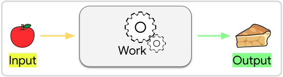
In crossflow services are defined by Bevy Systems that take an input and produce an output. As Bevy Systems, the crossflow services can integrate into an application by interacting with the Bevy World through entities, components, and resources of Bevy’s ECS. This allows services to have enormous versatility in how they are implemented, while still being highly parallelizable, memory-safe, and efficient.
A service can be executed by sending it a request at any time using this line of code:
#![allow(unused)]
fn main() {
let outcome = commands.request(input, service).outcome();
}This line is non-blocking, meaning the service will be executed concurrently with the rest of the application’s activity. The outcome is a receiver that can be polled—or better yet awaited in an async context—until the service has sent its response or has been cancelled.
Workflows
Best practice when creating complex systems is to encapsulate services into the simplest possible building blocks and assemble those blocks into increasingly sophisticated structures. This is where workflows come in.
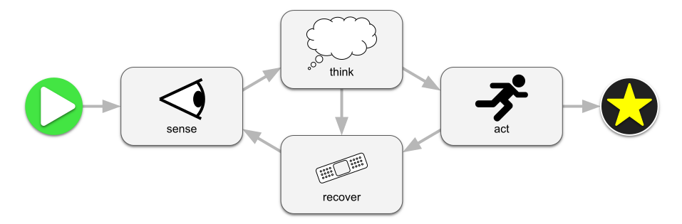
Workflows allow you to assemble services into a directed graph—cycles are allowed—that form a more complex behavior, feeding the output of each service as input to another service. Workflows are excellent for defining state machines that have async state transitions or that have lots of parallel activity that needs to be managed and synchronized.
When you create a workflow you will ultimately be creating yet another service that can be treated exactly the same as a service created using a Bevy System. This workflow-based service can even be used as a node inside of another workflow. In other words, you can build hierarchical workflows.
Execution
You can run as many service requests as you want at the same time for as many
services or workflows as you want, including making multiple simultaneous requests
for the same service or workflow. Each time request is called, a new
“session” will be spawned that executes the workflow or service independently from
any other that is running. However, if any of the services or workflows interact
with “the world” (either the Bevy World, the actual physical world, or
some external resource) then those services or workflows may indirectly interact
with each other.
Tip
Check out the live web demo to get a sense for what a workflow might look like.
Try passing in
[20, 30]as the request message and run the workflow to see the message get split and calculated.
Getting Started
To get you started with crossflow, the next chapter will teach you how to spawn a basic service. After that you will see how to run a service, then how to assemble services into a workflow (which is itself a service) and execute it.
To learn the fundamental concepts around what a “workflow” is in the crossflow library, see the Introduction to Workflows chapter.
How to Spawn a Service
For crossflow to be useful, you first need to have a Service
to run. You may be able to find thirdparty libraries that provide some services
for you to use, but this chapter will teach you how to spawn them yourself just
in case you need to start from scratch.
What is a service?
In its most distilled essence, a service is something that can take an input message (request) and produce an output message (response):
Each service expresses its request and response types as generic parameters in
the Service struct. These Request and Response parameters can be
any data structures that can be passed between threads.
Tip
We mean “data structures” in the broadest possible sense, not only “plain data”. For example, you can pass around utilities like channels and publishers as messages, or use them as fields inside of messages. Any valid Rust
structthat can be safely moved between threads can be used as a message.
The Service data structure itself is much like a function pointer. It contains
nothing besides an Entity
(a lightweight identifier that points to the service’s location in the
World) and the
type information that ensures you send it the correct Request type and that you
know what Response type to expect from it. When you copy or clone a Service,
you are really just making a copy of this identifier. The underlying service
implementation that will be called for the copy is the exact same as the original.
Spawn a Blocking Service
The simplest type of service to spawn is called a “blocking” service. These services are much like ordinary functions: They receive an input, run once for that input, and immediately return an output value. Much as the name implies, a blocking service will block all other activity in the schedule until it is done running. Therefore blocking services must be short-lived.
To define a blocking service, create a function whose first input argument is a BlockingService:
fn sum(srv: BlockingService<Vec<f32>>) -> f32 {
let mut sum = 0.0;
for value in srv.request {
sum += value;
}
sum
}This function will define the behavior of our service: The request (input)
message is provided as a field of the BlockingService argument. The request
type is based on the first generic T of BlockingService<T>—in this case a
Vec<f32>. The purpose of this sum service is to sum up the elements
in the request vector. The output of the service is a simple f32, which is
specified by the return type of the service function.
Before we can run this function as a service, we need to spawn an instance of it.
We can use the AddServicesExt trait for this, automatically available when you use crossflow::prelude::*:
let sum_service: Service<Vec<f32>, f32> = app.spawn_service(sum);We can spawn the service while building our Bevy App to make sure that it’s
available whenever we need it. A common practice is to save your services into
Components or Resources so
they can be accessed at runtime when needed.
Now that you’ve seen how to spawn a system, you could move on to How to Run a Service. Or you can continue on this page to learn about the more sophisticated abilities of services.
Services as Bevy Systems
A crucial concept in Bevy is systems.
Bevy uses an Entity-Component-System (ECS)
architecture for structuring applications. Systems are how an ECS architecture
queries and modifies the data in an application. In crossflow, services are
Bevy systems, except instead of being scheduled like most systems, a service only
gets run when needed, taking in an input argument (request) and returning an output
value (response). Since they are Bevy systems, services can query and modify the
entities, components, and resources in the World.
In the example from the previous section, you may have noticed In(input): ....
That In is a
special type of SystemParam
for a value that is being directly passed into the system rather than being
accessed from the world. For blocking services we pass in a
BlockingService as the input, which contains the request data,
output streams, and some other fields that represent metadata about the service.
Just like any other Bevy system, you can add as many system params to your service
as you would like. Here is an example of a blocking service that includes a
Query:
#[derive(Component, Deref)]
struct Offset(Vec2);
fn apply_offset(
BlockingService { request, provider, .. }: BlockingService<Vec2>,
offsets: Query<&Offset>,
) -> Vec2 {
let offset = offsets
.get(provider)
.map(|offset| **offset)
.unwrap_or(Vec2::ZERO);
request + offset
}First we define a component struct named Offset which simply stores a
Vec2. The job of our
apply_offset service is to query for Offset stored for this service and apply
it to the incoming Vec2 of the request.
To query the Offset we add offsets: Query<&Offset> as an argument (a.k.a.
system param) for our service function (a.k.a. system). One of the fields in
BlockingService is provider, which is the Entity
that provides this service. You can use this entity to store data that allows
the behavior of the service to be configured externally. In this case we will
store an Offset component in the provider to externally configure what kind
of Offset is being applied.
When spawning the service, you can use .with to initialize the provider entity:
let apply_offset_service: Service<Vec2, Vec2> = app.spawn_service(
apply_offset
.with(|mut srv: EntityWorldMut| {
srv.insert(Offset(Vec2::new(-2.0, 3.0)));
})
);Note
All workflows that use this service will see the same
provider, and therefore see the same offset. Any changes made to the components of thatproviderwill affect all workflows that use the service.
In general you can use Service::provider
to access the provider entity at any time, and use all the normal Bevy mechanisms
for managing the components of an entity.
Full Example
use crossflow::bevy_app::App;
use crossflow::prelude::*;
use bevy_derive::*;
use bevy_ecs::prelude::*;
use glam::Vec2;
fn main() {
let mut app = App::new();
app.add_plugins(CrossflowExecutorApp::default());
let offset = Vec2::new(-2.0, 3.0);
let service = app.spawn_service(apply_offset.with(|mut srv: EntityWorldMut| {
srv.insert(Offset(offset));
}));
let mut outcome = app
.world_mut()
.command(|commands| commands.request(Vec2::ZERO, service).outcome());
for _ in 0..5 {
if let Some(response) = outcome.try_recv() {
let response = response.unwrap();
assert_eq!(response, offset);
println!("Successfully applied offset: {response:?}");
return;
}
app.update();
}
panic!("Service failed to run after multiple updates");
}
#[derive(Component, Deref)]
struct Offset(Vec2);
fn apply_offset(
BlockingService {
request, provider, ..
}: BlockingService<Vec2>,
offsets: Query<&Offset>,
) -> Vec2 {
let offset = offsets
.get(provider)
.map(|offset| **offset)
.unwrap_or(Vec2::ZERO);
request + offset
}More kinds of services
If you are interested in non-blocking service types, continue on to Async Services and Continuous Services.
If you need your service to be a portable object that isn’t associated with an entity, take a look at Callbacks. If you don’t care about your service being a Bevy system at all (i.e. it should just be a plain function with a single input argument) then take a look at Maps.
If blocking services are enough to get you started, then you can skip ahead to How to Run a Service.
Async Services
We’ve seen how to spawn a blocking service, but blocking services have an important drawback: While a blocking service is running, no other systems or services in the system schedule can run. This allows blocking services to have unfettered instant access to all resources in the bevy World, but long-running blocking services would disrupt the app schedule. This does not mean that blocking services should be avoided—they are the fastest and most CPU efficient choice for any short-lived service, especially when accessing Bevy Components or Resources. Each kind of service fits a different shape of usage, so go ahead and use blocking services when they fit.
When it comes to long-running services, it’s likely that an async service is what you want. In crossflow, async services allow you to take full advantage of the async/await language feature of Rust when implementing a service. For a detailed explanation of the language feature you might want to look at the official Rust handbook. Using async services does not require a deep understanding of async in Rust, but some peculiarities might make more sense if you have a better grasp of it.
What is an async service?
A normal Bevy app has a system schedule which can be thought of as the main event loop of the application. The system schedule is able to run many systems at once as long as those systems do not have any read/write conflicts in which world resources they need to access. Bevy will automatically identify which systems can be run in parallel and run them together unless you specify otherwise.
Some systems demand exclusive world access, meaning no other systems can run alongside it. While this reduces opportunities for parallel processing, it empowers the exclusive systems to themselves dynamically run systems whose data access requirements are not known when the schedule is first being built.
The flush_execution system of crossflow drives all the services that need to be
executed. Since we never know ahead of time which services might need to be run
or what they will need to acess from the world, flush_execution is an exclusive
system.
Inside of flush_execution we will execute any services that are ready to be
executed—one at a time since we can’t be sure which might have read/write
conflicts with each other. When we execute a blocking service, we pass the
request into it and get back the response immediately. We can then pass that
response message along to its target service, and then immediately execute that
target service. An arbitrarily long chain of blocking services can all be executed
within a single run of flush_execution, unless flush_loop_limit
is set.
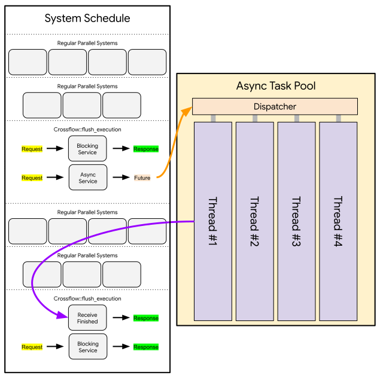
If the blocking service runs for a very long time, the entire system schedule would be held up, which could be detrimental to how the application behaves. In a GUI application, users would see the window freeze up. In a workflow execution application, clients would think that all execution has frozen. This means blocking services are not suitable for any service that represents a physical process or involves i/o with external resources.
Fortunately Bevy provides an async task pool that runs
in parallel to the system schedule and supports async functions.
An async service task advantage of this by producing a Future instead of
immediately returning a response. Crossflow sends that Future into the async
task pool to be processed efficiently alongside other async tasks. Once the
Future has yielded its final response, flush_execution will receive the response
message and pass it along to the next service in the chain.
We get two advantages with async services:
- They are processed in the async task pool, allowing them to run in parallel to the system schedule, no matter which systems are running at any given time.
- They can use
awaitin their their Future, which is a powerful language feature of Rust that allows efficient and ergonomic use of i/o and multi-threading.
However there are some disadvantages to be mindful of:
- Sending the Future to the async task pool and receiving the response has some overhead (albeit relative small in most cases).
- The response of an async service will generally not arrive within the same schedule update that the service was activated. This means a chain of N async services will typically take at least N schedule updates before finishing.
- Each time the Future of an async service needs to access the world (using its async channel) it takes up to one whole schedule update to get that access.
Spawn an Async Service
Spawning an async service is similar to spawning a blocking service,
except that your function should take in an AsyncService<Request> and be async:
async fn trivial_async_service(srv: AsyncService<String>) -> String {
return srv.request;
}If your function matches these requirements, then you can spawn it with the exact same API as the blocking service:
let async_service: Service<String, String> = app.spawn_service(trivial_async_service);Notice that even though this is an async service and has some different behavior
than blocking services under the hood, it is still captured as a Service.
Once spawned as a service, blocking and async services will appear exactly the
same to users.
await
Since async services are defined via async functions, they are able to use Rust’s await feature, which is often used for network i/o and communicating between parallel threads. Here’s an example of a service that gets the title of a webpage based on a URL passed in as the request message:
async fn page_title_service(srv: AsyncService<String>) -> Option<String> {
let response = trpl::get(&srv.request).await;
let response_text = response.text().await;
trpl::Html::parse(&response_text)
.select_first("title")
.map(|title| title.inner_html())
}This example is adapted from the Rust handbook.
Note that this service returns an Option<String> since we can’t guarantee that
the input URL points to an actual website or that we will successfully retrieve
its title even if it does.
Use the Async Channel
One drawback of using an async service is that it doesn’t have free access to the World (particularly Components and Resources) the way a blocking service does. It would be impossible to provide that kind of access for something running in the async task pool because any time it tries to access data that’s stored in the world, it could encounter a conflict with a scheduled system that’s accessing the same data.
Nevertheless, async services may need to push or pull data into/from the World
while they make progress through their async task. To accommodate this, we provide
async services with a Channel that supports querying or sending
commands to the World:
/// A component that stores a web page title inside an Entity
#[derive(Component)]
struct PageTitle(String);
/// A request that specifies a URL whose page title should be stored inside an Entity
struct PageTitleRequest {
url: String,
insert_into: Entity,
}
/// A service that fetches the page title of a URL and stores that into an Entity.
async fn insert_page_title(
srv: AsyncService<PageTitleRequest>
) -> Result<(), ()> {
let response = trpl::get(&srv.request.url).await;
let response_text = response.text().await;
let title = trpl::Html::parse(&response_text)
.select_first("title")
.map(|title| title.inner_html())
.ok_or(())?;
let insert_into = srv.request.insert_into;
// Use the async channel to insert a PageTitle component into the entity
// specified by the request, then await confirmation that the command is finished.
srv.channel.commands(
move |commands| {
commands.entity(insert_into).insert(PageTitle(title));
}
)
.await;
Ok(())
}In the above example, the insert_page_title service ends by inserting the result
of its http request into the component of an entity. This is done by invoking
srv.channel.command(_) and passing in a closure that says what
should be done with the Bevy commands.
Note that this command will itself be run asynchronously. It will be executed
the next time that flush_execution is run by the system schedule. If we want
to make sure our service does not return its response until the command is
carried out, we should .await the output of srv.channel.command(_). The
command will eventually be carried out even if we return without awaiting it,
but if the next service in the chain assumes the command has already finished
then you could experience race conditions.
Warning
Each time you await
srv.channelit may take up to an entire update cycle of the schedule before your response arrives. It’s a good idea to batch as many queries or commands as you can before awaiting to avoid wasting update cycles.
Async Services as Bevy Systems
It’s been mentioned that the task (a.k.a. Future) of an async service can only access the Bevy World through the async channel that it’s provided with. However, prior to its task being spawned, an async service does have a way to immediately access the entire World. This is useful when there is some data you know your task will need. You can query it from the World at no cost as soon as your async service is activated.
However there is a catch: Bevy system parameters (such as Query and
Res) are not compatible with the async fn syntax that is commonly
used to define async functions. The incompatibility is related to a logical
conflict between the way Bevy manages borrows of World data and the way
async fn creates a portable state machine that can be executed by an async
task pool. The details of this conflict aren’t important for using crossflow,
but suffice it to say you can’t use most Bevy system params and async fn in
the same function.
But there is a workaround! You can create an async function without using the
async fn syntax. You can use the regular fn syntax and use a return type of
impl Future<Output = Response>:
#[derive(Clone, Component, Deref)]
struct Url(String);
use std::future::Future;
fn fetch_page_title(
srv: AsyncService<Entity>,
url: Query<&Url>,
) -> impl Future<Output = Result<String, ()>> + use<> {
// Use a query to get the Url component of this entity
let url = url.get(srv.request).cloned();
async move {
// Make sure the query for the Url component was successful
let url = url.map_err(|_| ())?.0;
// Fetch the page title of the website stored in the Url component of
// the requested entity.
let response = trpl::get(&url).await;
let response_text = response.text().await;
trpl::Html::parse(&response_text)
.select_first("title")
.map(|title| title.inner_html())
.ok_or(())
}
}At the start of your function it will behave just like a normal Bevy system.
Your arguments can be any Bevy system parameters that you’d like, and you can
use them freely in the initial lines of your function. But to satisfy the
signature of the function, you eventually have to return something that implements
the Future<Output = Response> trait.
The easiest way to create a Future is with an async block.
That block will produce an anonymous data structure that implements Future<Output=Response>
where Response will be whatever value the block yields. By ending our function
with an async move { ... }, it will behave like a regular blocking function in
the start and end as an async function. From the outside, it is indistinguishable
from an async function.
Tip
If you need your async service to start by querying the World, it’s a good idea to always follow this template exactly:
fn my_async_service( srv: AsyncService<Request>, /* ... Bevy System Params Go Here ... */ ) -> impl Future<Output = Response> + use<> { /* ... Use Bevy System params, cloning data as needed ... */ async move { /* ... Perform async operations ... */ } }You can deviate from this template if you know what you are doing, but first make sure you have a sound understanding of how async works in Rust or else you might get unexpected behavior.
Full Example
Here is an example of an async service that uses everything discussed in this chapter.
Tip
This example shows how a tokio runtime can be used with an async service. Crossflow does not use tokio itself, since Bevy’s async execution is based on smol instead.
Many async functions in the Rust ecosystem depend on a tokio runtime, so this example may help you find ways to incorporate tokio into your async services.
use crossflow::bevy_app::App;
use crossflow::prelude::*;
use bevy_derive::*;
use bevy_ecs::prelude::*;
use clap::Parser;
use std::{future::Future, sync::Arc};
use tokio::runtime::Runtime;
/// Program that demonstrates an async service in crossflow
#[derive(Parser, Debug)]
#[command(version, about)]
struct Args {
/// Url that we should fetch a page title from
url: String,
}
fn main() {
let args = Args::parse();
let mut app = App::new();
app.add_plugins(CrossflowExecutorApp::default());
let service = app.spawn_service(update_page_title);
let entity = app.world_mut().spawn(Url(args.url)).id();
let mut outcome = app
.world_mut()
.command(|commands| commands.request(entity, service).outcome());
// Create a tokio runtime and drive it on another thread
let (finish, finished) = tokio::sync::oneshot::channel();
let rt = Arc::new(tokio::runtime::Runtime::new().unwrap());
app.world_mut()
.insert_resource(TokioRuntime(Arc::clone(&rt)));
let tokio_thread = std::thread::spawn(move || {
let _ = rt.block_on(finished);
});
let start = std::time::Instant::now();
let time_limit = std::time::Duration::from_secs(5);
while std::time::Instant::now() - start < time_limit {
if let Some(response) = outcome.try_recv() {
match response {
Ok(_) => {
let title = app.world().get::<PageTitle>(entity).unwrap();
println!("Fetched title: {}", **title);
}
Err(err) => {
println!("Error encountered while trying to update title: {err}");
}
}
let _ = finish.send(());
let _ = tokio_thread.join();
return;
}
app.update();
}
panic!("Service failed to run within time limit of {time_limit:?}");
}
/// A component that stores a web page title inside an Entity.
#[derive(Component, Deref)]
struct PageTitle(String);
/// A component that stores what url is assigned to an Entity.
#[derive(Clone, Component, Deref)]
struct Url(String);
/// A resource that provides access to a tokio runtime
#[derive(Resource, Deref)]
struct TokioRuntime(Arc<Runtime>);
/// A service that checks the Url assigned to an entity and then updates the page
/// title set for that entity.
fn update_page_title(
srv: AsyncService<Entity>,
url: Query<&Url>,
runtime: Res<TokioRuntime>,
) -> impl Future<Output = Result<(), ()>> + use<> {
// Use a query to get the Url component of this entity
let url = url.get(srv.request).cloned();
let rt = Arc::clone(&**runtime);
async move {
// Make sure the query for the Url component was successful
let url = url.map_err(|_| ())?.0;
// Fetch the page title of the website stored in the Url component of
// the requested entity. This is run inside a tokio runtime because the
// trpl library uses reqwest, which is a tokio-based http implementation.
let title = rt
.spawn(async move {
let response = trpl::get(&url).await;
let response_text = response.text().await;
trpl::Html::parse(&response_text)
.select_first("title")
.map(|title| title.inner_html())
.ok_or(())
})
.await
.map_err(|_| ())??;
let entity = srv.request;
srv.channel
.commands(move |commands| {
commands.entity(entity).insert(PageTitle(title));
})
.await;
Ok(())
}
}Continuous Services
Most of the time a service can be written as a blocking service or an async service depending on whether the service is known to be short-lived or long-lived and whether it needs to use the async feature of Rust. But there’s one more shape a service can take on: continuous.
One thing that blocking and async services share in common is that they are each defined by a function that takes in a request as an argument and eventually yields a response. On the other hand a continuous service is defined by a Bevy system that runs continuously in the system schedule. Each time the continuous service is woken up in the schedule, it can make some incremental progress on the set of active requests assigned to it—which we call the order queue.
What is a Continuous Service?
Each service—whether blocking, async, or continuous—is associated with a unique Entity that we refer to as the service provider. For blocking and async services the main purpose of the service provider is to
- store the system that implements the service, and
- allow users to configure the service by inserting components on the service provider entity.
For continuous services the service provider has one additional purpose: to store
the order queue component. This component is used to keep track of its active
requests—i.e. the requests aimed at the continuous service which have not received
a response yet. When a request for the continuous service shows up, flush_execution
will send that request into the order queue component of the service that it’s
meant for.
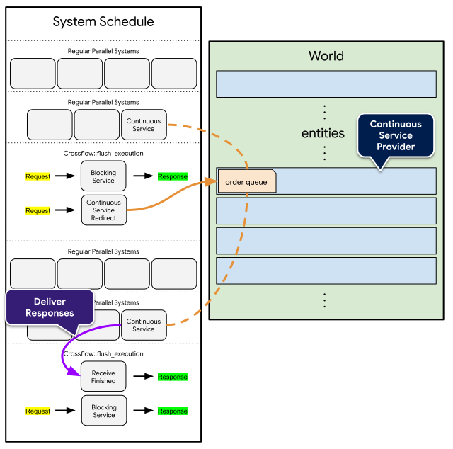
Each continuous service will be run in the regular Bevy system schedule just like every regular Bevy system in the application. This means continuous services can run in parallel to each other, as well as run in parallel to all other regular Bevy systems, as long as there are no read/write conflicts in what the systems need to access.
Each time a continuous service is woken up by the schedule, it should check its order queue component and look through any active requests it has. It should try to make progress on those tasks according to whatever its intended behavior is—perhaps try to complete one at a time or try to complete all of them at once. There is no requirement to complete any number of the orders on any given wakeup. There is no time limit or iteration limit for completing any orders. Any orders that do not receive a response will simply carry over to the next schedule update.
Once an order is complete, the continuous service can issue a response to it. After issuing a response, the request of the order will immediately become inaccessible, even within the current update cycle. Responding to an order will fully drop the order from the perspective of the continuous service. This prevents confusion that might otherwise lead to accidentally sending two responses for the same order. Nevertheless the continuous service can respond to any number of unique orders within a single update cycle.
Spawn a Continuous Service
Spawning a continuous service has some crucial differences from spawning a blocking or an async service. These differences come from two facts:
- The request information (order queue) persists between service updates as a component
- The service needs to be added to the app’s system schedule
This first difference means that continuous services must query for their order queue.
In the hello_continuous_service example below you can see the query argument
takes in a ContinuousQuery whose generic parameters perfectly match the generic
parameters of ContinuousService above it. This pattern is mandatory for
continuous services so they can access their order queue.
fn hello_continuous_service(
srv: ContinuousService<String, String>,
mut query: ContinuousQuery<String, String>,
) {
let Some(mut orders) = query.get_mut(&srv.key) else {
// The service provider has despawned, so we can no longer do anything
return;
};
orders.for_each(|order| {
let name = order.request();
let response = format!("Hello, {name}!");
order.respond(response);
});
}Unlike other service types, the srv input arguments contains nothing but a key
that must be used by query to access the orders belonging to this service. This
access is fallible because it’s possible for a user or a system to despawn the
provider of this service while the service is still inside the system schedule.
In most cases when the order queue can no longer be accessed, your continuous
service can just return immediately. Any requests sent to it will be automatically
cancelled.
When you do get access to your orders—in this case through the orders variable—you can iterate
through each order, using .request() to borrow the request value and then
.respond(_) to send your response for the order.
Inside the System Schedule
The other important difference with continuous services is that they need to be
added to the app’s system schedule. While blocking and async services
can be spawned anywhere that you have access to a Commands, continuous services
can only be spawned when you have access to an App:
let continuous_service: Service<String, String> = app.spawn_continuous_service(
Update,
hello_continuous_service
);Instead of spawn_service which gets used by blocking and async services,
continuous services require you to call spawn_continuous_service. You’ll also
notice that an additional argument is needed here: the label for which schedule
the continuous service should run in.
Note
Currently Bevy does not support dynamically adding systems to the schedule, so continuous services will generally need to be added during App startup.
Despite these differences in how continuous services get spawned, you will still
ultimately receive a Service<Request, Response>, exactly the same as blocking
and async services. From the outside, continuous services appear no different
from other kinds of service; the differences in how it behaves are just
implementation details.
Serial Orders
In the hello_continuous_service example above
we respond to each request on the same update frame that the request arrives.
Very often continuous services are managing a process that needs to be spread out
across multiple frames. The example below shows an example of responding to a
sequence of orders, one at a time, where each order might need multiple frames
before it’s complete.
#[derive(Resource, Deref, DerefMut)]
struct Position(Vec2);
#[derive(Component, Deref)]
struct Speed(f32);
fn move_base_vehicle_to_target(
srv: ContinuousService<Vec2, Result<(), ()>>,
mut query: ContinuousQuery<Vec2, Result<(), ()>>,
speeds: Query<&Speed>,
mut base_position: ResMut<Position>,
time: Res<Time>,
) {
let Some(mut orders) = query.get_mut(&srv.key) else {
// The service provider has been despawned, so this continuous service
// can no longer function.
return;
};
// Get the oldest active request for this service. Orders will be indexed
// from 0 to N-1 from oldest to newest. When an order is completed, all
// orders after it will shift down by an index on the next update cycle.
let Some(order) = orders.get_mut(0) else {
// There are no active requests, so no need to do anything
return;
};
let dt = time.delta_secs_f64() as f32;
let Ok(speed) = speeds.get(srv.key.provider()) else {
// The velocity setting has been taken from the service, so it can no
// longer complete requests.
order.respond(Err(()));
return;
};
let target = *order.request();
match move_to(**base_position, target, **speed, dt) {
Ok(_) => {
// The vehicle arrived
**base_position = target;
println!("Base vehicle arrived at {target}");
order.respond(Ok(()));
}
Err(new_position) => {
// The vehicle made progress but did not arrive
**base_position = new_position;
}
}
}On each update of the continuous service we only look at the oldest request in the order queue, ignoring all others. This effectively makes the service “serial” meaning no matter how many requests are coming in to it, they will only be handled one at a time.
Parallel Orders
One of the advantages that continuous services have over blocking and async is
the ability to handle many requests at once, potentially with interactions
happening between them. The example below shows how orders.for_each(_) can be
used to iterate over all active requests in one update frame, making incremental
progress on all of them at once.
#[derive(Clone, Copy)]
struct DroneRequest {
target: Vec2,
speed: f32,
}
fn send_drone_to_target(
srv: ContinuousService<DroneRequest, ()>,
mut query: ContinuousQuery<DroneRequest, ()>,
mut drone_positions: Local<HashMap<Entity, Vec2>>,
base_position: Res<Position>,
time: Res<Time>,
) {
let Some(mut orders) = query.get_mut(&srv.key) else {
return;
};
orders.for_each(|order| {
let DroneRequest { target, speed } = *order.request();
let position = drone_positions.entry(order.task_id()).or_insert_with(|| {
println!(
"Drone #{} taking off from {}, heading to {target}",
order.id().seq,
**base_position,
);
**base_position
});
let dt = time.delta_secs_f64() as f32;
match move_to(*position, target, speed, dt) {
Ok(_) => {
println!("Drone #{} arrived at {target}", order.id().seq);
order.respond(());
}
Err(new_position) => {
*position = new_position;
}
}
});
// Remove any old task IDs that are no longer in use
drone_positions.retain(|id, _| orders.iter().any(|order| order.id() == *id));
}Full Example
Here is an example that incorporates everything above and also demonstrates how
continuous systems can be configured in the schedule just like regular Bevy systems.
Notice the use of .configure(_) when spawning move_base and send_drone.
This allows us to make sure the base vehicle is up to date when the drone service
is updated.
use crossflow::bevy_app::{App, Update};
use crossflow::prelude::*;
use bevy_derive::*;
use bevy_ecs::prelude::*;
use bevy_time::{Time, TimePlugin};
use glam::Vec2;
use std::collections::HashMap;
#[derive(Debug, Hash, PartialEq, Eq, Clone, SystemSet)]
struct MoveBaseVehicle;
fn main() {
let mut app = App::new();
app.add_plugins((CrossflowExecutorApp::default(), TimePlugin::default()))
.insert_resource(Position(Vec2::ZERO));
let move_base = app.spawn_continuous_service(
Update,
move_base_vehicle_to_target
.with(|mut srv: EntityWorldMut| {
// Set the speed component for this service provider
srv.insert(Speed(1.0));
})
.configure(|config| {
// Put this service into a system set so that we can order other
// services before or after it.
config.in_set(MoveBaseVehicle)
}),
);
let send_drone = app.spawn_continuous_service(
Update,
send_drone_to_target.configure(|config| {
// This service depends on side-effects from move_base, so we should
// always schedule it afterwards.
config.after(MoveBaseVehicle)
}),
);
let move_vehicle_to_random_position = move |app: &mut App| {
app.world_mut()
.command(|commands| commands.request(random_vec2(20.0), move_base).outcome())
};
let launch_drone_to_random_position = move |app: &mut App| {
app.world_mut().command(|commands| {
let request = DroneRequest {
target: random_vec2(20.0),
speed: 1.0,
};
commands.request(request, send_drone).detach();
});
};
let mut base_moving = move_vehicle_to_random_position(&mut app);
let mut last_launch = std::time::Instant::now();
loop {
app.update();
if base_moving.is_available() {
// Send the base to a new location
base_moving = move_vehicle_to_random_position(&mut app);
}
if last_launch.elapsed() > std::time::Duration::from_secs(1) {
launch_drone_to_random_position(&mut app);
last_launch = std::time::Instant::now();
}
}
}
fn random_vec2(width: f32) -> Vec2 {
width * Vec2::new(rand::random::<f32>(), rand::random::<f32>())
}
#[derive(Resource, Deref, DerefMut)]
struct Position(Vec2);
#[derive(Component, Deref)]
struct Speed(f32);
fn move_base_vehicle_to_target(
srv: ContinuousService<Vec2, Result<(), ()>>,
mut query: ContinuousQuery<Vec2, Result<(), ()>>,
speeds: Query<&Speed>,
mut base_position: ResMut<Position>,
time: Res<Time>,
) {
let Some(mut orders) = query.get_mut(&srv.key) else {
// The service provider has been despawned, so this continuous service
// can no longer function.
return;
};
// Get the oldest active request for this service. Orders will be indexed
// from 0 to N-1 from oldest to newest. When an order is completed, all
// orders after it will shift down by an index on the next update cycle.
let Some(order) = orders.get_mut(0) else {
// There are no active requests, so no need to do anything
return;
};
let dt = time.delta_secs_f64() as f32;
let Ok(speed) = speeds.get(srv.key.provider()) else {
// The velocity setting has been taken from the service, so it can no
// longer complete requests.
order.respond(Err(()));
return;
};
let target = *order.request();
match move_to(**base_position, target, **speed, dt) {
Ok(_) => {
// The vehicle arrived
**base_position = target;
println!("Base vehicle arrived at {target}");
order.respond(Ok(()));
}
Err(new_position) => {
// The vehicle made progress but did not arrive
**base_position = new_position;
}
}
}
#[derive(Clone, Copy)]
struct DroneRequest {
target: Vec2,
speed: f32,
}
fn send_drone_to_target(
srv: ContinuousService<DroneRequest, ()>,
mut query: ContinuousQuery<DroneRequest, ()>,
mut drone_positions: Local<HashMap<Entity, Vec2>>,
base_position: Res<Position>,
time: Res<Time>,
) {
let Some(mut orders) = query.get_mut(&srv.key) else {
return;
};
orders.for_each(|order| {
let DroneRequest { target, speed } = *order.request();
let position = drone_positions.entry(order.task_id()).or_insert_with(|| {
println!(
"Drone #{} taking off from {}, heading to {target}",
order.id().seq,
**base_position,
);
**base_position
});
let dt = time.delta_secs_f64() as f32;
match move_to(*position, target, speed, dt) {
Ok(_) => {
println!("Drone #{} arrived at {target}", order.id().seq);
order.respond(());
}
Err(new_position) => {
*position = new_position;
}
}
});
// Remove any old task IDs that are no longer in use
drone_positions.retain(|id, _| orders.iter().any(|order| order.id() == *id));
}
fn move_to(current: Vec2, target: Vec2, speed: f32, dt: f32) -> Result<(), Vec2> {
let dx = f32::max(0.0, speed * dt);
let dp = target - current;
let distance = dp.length();
if distance <= dx {
return Ok(());
}
let Some(u) = dp.try_normalize() else {
// If dp can't be normalized then it's close to zero, so there's
// nowhere to go.
return Ok(());
};
return Err(current + u * dx);
}Output Streams
So far we’ve seen services that return a single output as a final response to each request it receives. This is enough for chaining together sequential atomic services, but some actions are carried out over a period of time and involve stages or incremental progress that you may want to track.
Crossflow services have the option of using output streams to transmit messages while processing a request. Before the final response is sent out, a service can stream out any number of messages over any number of output streams. Each stream can have its own message type.
Streams can be anonymous—having no name, identified simply by what its output type is—but best practice is to use named streams. Giving names to streams adds clarity to the purpose or meaning of each stream.
Tip
If you want to know how to receive data from output streams, see Receiving from Output Streams.
To see how to connect output streams inside a workflow, see Connecting Output Streams.
Anonymous Streams
While it’s not the recommended approach, we’ll start by explaining how anonymous streams work. If you are confident that your service will only ever produce one stream or that the type information is enough to make the purpose of the stream clear, then anonymous streams may be acceptable for your use case.
In this example we implement a Fibonacci sequence service that streams out the values of the sequence and then ultimately just returns a trigger () to indicate that the service is finished running:
fn fibonacci_example(
BlockingService { request: order, streams: stream, .. }: BlockingService<u32, StreamOf<u32>>
) {
let mut current = 0;
let mut next = 1;
for _ in 0..order {
stream.send(current);
let sum = current + next;
current = next;
next = sum;
}
}We use StreamOf<u32> to define an anonymous (unnamed) stream of u32.
This stream allows us to emit a stream of outputs where each message is a new item in the Fiboanacci sequence, as opposed to the conventional “final response” that would require us to return a single message of Vec<u32>.
While a Fibonacci sequence is a trivial use case, this same approach can be used to transform any single input into a stream of any number of outputs.
Multiple Anonymous Streams
In the previous example you might have noticed
streams: stream;The plural streams was renamed to a singular stream variable.
This is because in general services expect that multiple streams need to be supported.
In the case of StreamOf<T> the potentially multiple streams get reduced to one stream.
To get multiple anonymous streams, you can use a tuple. Here’s a slightly tweaked version of the previous example that additionally streams out a stringified version of the sequence:
fn fibonacci_string_example(
BlockingService {
request: order,
streams: (u32_stream, string_stream),
..
}: BlockingService<u32, (StreamOf<u32>, StreamOf<String>)>,
) {
let mut current = 0;
let mut next = 1;
for _ in 0..order {
u32_stream.send(current);
string_stream.send(format!("{current}"));
let sum = current + next;
current = next;
next = sum;
}
}Now streams contains two streams, packed together as a tuple.
Since they are packed into a tuple, they continue to be anonymous (unnamed), but they can be accessed separately and send different outputs.
Warning
When you use multiple anonymous output streams, you must not include the same message type multiple times, e.g.
(StreamOf<u32>, StreamOf<u32>). This cannot be caught at compile time and will lead to confusing behavior, because when this service is spawned it will appear to have multiple output streams, but only one of theOutputs will receive all of the messages, even if the service sends messages to both.
Stream Pack
While anonymous streams are an option, it’s best to always use named streams, especially if you are creating services for a diagram.
To create named streams, you should define a struct where each field represents a different output stream.
The data type of each field will be the message type of its associated stream.
Simply apply #[derive(StreamPack)] to that struct, and now you can use those streams in your system:
#[derive(StreamPack)]
struct FibonacciStreams {
integers: u32,
strings: String,
}
fn fibonacci_stream_pack_example(
BlockingService { request: order, streams, .. }: BlockingService<u32, FibonacciStreams>,
) {
let mut current = 0;
let mut next = 1;
for _ in 0..order {
streams.integers.send(current);
streams.strings.send(format!("{current}"));
let sum = current + next;
current = next;
next = sum;
}
}Now streams contains a separate named field for each of the streams in the stream pack.
Each of those fields lets you send output messages for each stream.
The compiler will ensure that the messages you send are compatible with the stream’s type.
Tip
Unlike with anonymous streams, you can have multiple named streams with the same message type.
Async Streams
The previous examples show how to use streams in a blocking service to generate a stream of data from a single input. While that is a valid use of streams, there is another conceptually important use: streaming updates or products out of an ongoing live service. The streams that come out of a blocking service will be delivered at the same time at the final response due to the nature of blocking services, so live updates are only relevant for async and continuous services.
Below is a stub of a navigation service.
It takes in a NavigationRequest that includes a destination and a BufferKey for the robot’s position.
While the robot makes progress towards its destination, the service will emit NavigationStreams including location data, log data, and any errors that come up along the way.
#[derive(StreamPack)]
struct NavigationStreams {
log: String,
location: Vec2,
error: NavigationError,
}
#[derive(Clone)]
struct NavigationRequest {
destination: Vec2,
robot_position_key: BufferKey<Vec2>,
}
fn navigate(
AsyncService { request, streams, channel, .. }: AsyncService<NavigationRequest, NavigationStreams>,
nav_graph: Res<NavigationGraph>,
) -> impl Future<Output = Result<(), NavigationError>> + use<> {
// Clone the navigation graph resource so we can move the clone into the
// async block.
let nav_graph = (*nav_graph).clone();
// Create a callback for fetching the latest position
let get_position = |
Blocking { request: key, id, .. }: Blocking<BufferKey<Vec2>>,
mut access: BufferAccess<Vec2>,
| {
access.get_newest(id, &key).cloned()
};
let get_position = get_position.into_callback();
// Unpack the input into simpler variables
let NavigationRequest { destination, robot_position_key } = request;
let location_stream = streams.location;
// Begin an async block that will run in the AsyncComputeTaskPool
async move {
loop {
// Fetch the latest position using the async channel
let position = channel.request_outcome(
robot_position_key.clone(),
get_position.clone()
)
.await
.ok()
.flatten();
let Some(position) = position else {
// Position has not been reported yet, so just try again later.
continue;
};
// Send the current position out over an async stream
location_stream.send(position);
// TODO: Command the robot to proceed towards its destination
// TODO: Break the loop when the robot arrives at its destination
}
Ok(())
}
}A few important details of the above example:
- We use the
fn _(AsyncService) -> impl Future<Output = _>syntax so we can have an async service that accesses theNavigationGraphresource at startup. - We use the
async move { ... }syntax to create the long-running Future that will run in the AsyncComputeTaskPool. - All relevant input data is unpacked and then moved into the async block.
- We create a callback to periodically fetch data from the position buffer while our async block is running using the async channel. This is the most effective way for async tasks to access Bevy ECS data.
- The streams provided to an async service can be moved into an async block, allowing messages to be streamed out while the async task is still being processed.
Continuous Streams
The output streams of blocking and async services both have a similar ergonomics, even if their behavior has some notable differences. For continuous services, output streams allow you to stream out messages while a request is still in flight, similar to async services.
However the API has an important difference: a continuous service can see all its active requests (orders) at once, and its streams are isolated per order:
fn continuous_navigate(
srv: ContinuousService<NavigationRequest, Result<(), NavigationError>, NavigationStreams>,
mut continuous: ContinuousQuery<NavigationRequest, Result<(), NavigationError>, NavigationStreams>,
mut position_access: BufferAccess<Vec2>,
nav_graph: Res<NavigationGraph>,
) {
let Some(mut orders) = continuous.get_mut(&srv.key) else {
// The service provider has despawned, so we can no longer do anything
return;
};
orders.for_each(|order| {
let NavigationRequest { destination, robot_position_key } = order.request().clone();
let id = order.id();
let Some(position) = position_access.get_newest(id, &robot_position_key) else {
// Position is not available yet
return;
};
order.streams().location.send(*position);
// TODO: Command the robot to proceed towards its destination
// TODO: Use order.respond(Ok(())) when the robot arrives at its destination
});
}In the above example you can see that the output streams are accessed through order.streams() instead of streams.
Each order comes from a different request message passed into the continuous service—potentially from many different workflows or sessions at once.
Forcing you to send streams through the OrderMut API ensures that the messages you stream out are only going to the specific order that they’re meant for.
Delivery Instructions
A common problem with highly parallelized async systems is when multiple instances of one service are active at the same time, but the service is designed for exclusive usage. This can happen when a service interacts with global resources like a mouse cursor or physical assets like the joints of a robot. If multiple conflicting requests are being made for the same set of resources, there could be deadlocks, misbehaviors, or even critical failures.
Resource contention is a broad and challenging problem with no silver bullet solution, but crossflow offers a delivery instructions mechanism that can help to handle simple cases. With the help of delivery instructions, you can implement your service to not worry about exclusive access, and then wrap the service in instructions that tell crossflow to only execute the service once-at-a-time.
More advanced use of delivery instructions allow you to have specific sets of requests for a service run in serial while others run in parallel at the same time. You can have specific queues where requests in the same queue run in serial while the queues themselves run in parallel.
Tip
Delivery instructions are only relevant for async and continuous services. They have no effect on blocking services since blocking services always run in serial no matter what.
Always-Serial Services
Warning
Always-serial services are also serial across different workflows and different sessions of the same workflow. When a service gets used in multiple different nodes, those nodes will only execute once-at-a-time, even if the nodes belong to different workflows or are being triggered across different sessions.
You can choose for an async or continuous service to always be run in serial, meaning when multiple requests are sent to it, they will always be run once-at-a-time. This does not block any other services from running at the same time.
To make any service always run serially, just add .serial() while spawning it:
let service = commands.spawn_service(my_service.serial());Note
Apply
.serial()to the name of the service itself, inside the parenthesis of.spawn_service(_). You cannot chain it outside the parentheses of.spawn_service(_).
Delivery Label
Always-serial is often too restrictive. When a service is used across different workflows or in multiple nodes at the same time, the requests being sent to it might be accessing unrelated resources. In this case, you can assign delivery instructions to the service before making the request.
The first step is to create a delivery label:
#[derive(Debug, Clone, PartialEq, Eq, Hash, DeliveryLabel)]
struct MyDeliveryLabel {
set: String,
}A delivery label can be any struct that implements Debug, Clone, PartialEq, Eq, Hash, and DeliveryLabel.
The #[derive(DeliveryLabel)] will fail at compile time if any of the required traits are missing, so the compiler will help ensure that your struct has all the traits it needs.
Other than those traits, there is no restriction on what can be used as a delivery label.
To use a delivery label, spawn a service as normal, but apply instructions with .instruct(_) when passing it into a request:
// Spawn the service as normal
let service = commands.spawn_service(my_service);
// Create delivery instructions
let instructions = DeliveryInstructions::new(
MyDeliveryLabel {
set: String::from("my_set")
}
);
// Add the instructions while requesting
let outcome = commands.request(
String::from("hello"),
service.instruct(instructions),
).outcome();To create the DeliveryInstructions, you must pass in an instance of your delivery label.
Every request made with a matching delivery label value will be put into the same queue and run in serial with each other. Requests made with different delivery labels will be put in separate queues which can run in parallel.
Pre-empt
Sometimes waiting for a service to execute once-at-a-time isn’t really what you want. When multiple requests are contending for the same resource, sometimes what you really want is to discard the earlier requests so the newest one can take over.
We call this pre-emption, and provide it as an option for DeliveryInstructions:
// Create a label
let label = MyDeliveryLabel {
set: String::from("my_set")
};
// Make instructions that include preempting
let preempt_instructions = DeliveryInstructions::new(label).preempt();
let outcome = commands.request(
String::from("hello"),
service.instruct(preempt_instructions)
).outcome();When .preempt() is applied to DeliveryInstructions, that request will discard all requests that were queued up before it.
Even a live task that is in the process of being executed will be cancelled when a pre-empting request arrives.
Note
Earlier we said that delivery instructions don’t have an effect on blocking services, but this is not true in the case of pre-emption. If multiple requests with the same delivery label have gotten queued up for a blocking service before it’s had a chance to flush, a pre-empting request will clear out the earlier requests before they can ever execute.
Warning
When a service being used by a workflow gets pre-empted, that will result in a disposal.
Ensure
Sometimes pre-emption may be too much of a scorched-earth approach.
If you have some requests that should be pre-empted while others are too crucial to pre-empt, you can apply .ensure():
let instructions = DeliveryInstructions::new(label)
.preempt()
.ensure();
let outcome = commands.request(
String::from("hello"),
service.instruct(instructions)
).outcome();Tip
.preempt()and.ensure()can be used independently of each other per request. A request can be pre-emptive but not ensured, or ensured but not pre-emptive, or it can be both pre-emptive and ensured.
Full Example
use async_std::future::{pending, timeout};
use crossflow::bevy_app::App;
use crossflow::prelude::*;
#[derive(Debug, Clone, PartialEq, Eq, Hash, DeliveryLabel)]
struct MyDeliveryLabel {
set: String,
}
impl MyDeliveryLabel {
fn new(set: String) -> Self {
Self { set }
}
}
fn main() {
let mut app = App::new();
app.add_plugins(CrossflowExecutorApp::default());
let waiting_time = std::time::Duration::from_secs(2);
let waiting_service =
app.world_mut()
.spawn_service(move |input: AsyncService<String>| async move {
// Create a future that will never finish
let never = pending::<()>();
// Wait on the never-ending future until a timeout finishes.
// This creates an artifical delay for the async service.
let _ = timeout(waiting_time, never).await;
println!("{}", input.request);
});
// We will fire off 10 requests at once for three different sets where each
// set has delivery instructions, making them have serial (one-at-a-time)
// delivery within each set. Since the sets themselves have independent labels,
// the requests in each set can be processed in parallel.
//
// The service itself does nothing but waits two seconds before printing its input message.
for set in ["A", "B", "C"] {
let instructions = DeliveryInstructions::new(MyDeliveryLabel::new(set.to_string()));
for i in 1..=10 {
let message = format!("Message #{i} for set {set}");
let service = waiting_service.instruct(instructions.clone());
app.world_mut().command(|commands| {
commands.request(message, service).detach();
});
}
}
app.run();
}Tip
To set delivery instructions for the services used in nodes, simply apply
.instruct(_)to the service before passing it tobuilder.create_node(_)
Callbacks
When you spawn a service you get back a Service instance.
The implementation of that Service will be stored inside the Bevy ECS until you choose to despawn it.
In some cases you might not want the implementation to exist inside the Bevy ECS. You might prefer an object that you can pass around and which will have RAII—freeing its memory when it is no longer needed.
Callbacks are an alternative to services whose lifecycle is outside of the Bevy ECS but still act as Bevy systems—able to interact with entities, components, and resources. They also fulfill the role of services—taking in a Request message and passing back a Response message, potentially with output streams as well.
There are three key differences between a service and a callback:
- Callbacks do not need to be spawned with
Commands. - Callbacks are not associated with any
Entityand therefore do not have any provider that you can store components on. - A callback will automatically deallocate when all references to it are dropped.
Tip
The more general term that we use to refer to services and service-like things—such as callbacks—is provider.
How to use
To use a callback, simply define the callback either as a fn or a closure, and then apply .into_callback() to its name.
Note the use of Blocking instead of BlockingService:
// We can access this resource from the callback
#[derive(Resource)]
struct Greeting {
prefix: String,
}
// Make an fn that defines the callback implementation
fn perform_greeting(
Blocking { request, .. }: Blocking<String>,
greeting: Res<Greeting>,
) -> String {
let name = request;
let prefix = &greeting.prefix;
format!("{prefix}{name}")
}
// Convert the fn into a callback.
// This is necessary to initialize the fn as a bevy system.
let callback = perform_greeting.into_callback();
// Use the callback in a request
let outcome = commands.request(String::from("Bob"), callback).outcome();Async
Async callbacks are implemented in much the same way as async services, just replacing AsyncService with Async:
async fn page_title_callback(srv: Async<String>) -> Option<String> {
let response = trpl::get(&srv.request).await;
let response_text = response.text().await;
trpl::Html::parse(&response_text)
.select_first("title")
.map(|title| title.inner_html())
}
let callback = page_title_callback.into_callback();
let outcome = commands.request(String::from("https://example.com"), callback).outcome();Same as for blocking callbacks, you turn the fn definition into a callback by applying .as_callback() to it.
Note
There is no callback equivalent to continuous services. Continuous services must exist inside the Bevy ECS. There is currently no way around this.
Closures
You can also turn a closure into a callback. Sometimes the syntax for this is confusing, but the easiest way to make it work is to first define the closure as a variable and then convert that variable into a callback:
// Make an closure that defines the callback implementation
let perform_greeting = |
Blocking { request: name, .. }: Blocking<String>,
greeting: Res<Greeting>,
| {
let prefix = &greeting.prefix;
format!("{prefix}{name}")
};
// Convert the fn into a callback.
// This is necessary to initialize the fn as a bevy system.
let callback = perform_greeting.into_callback();
// Use the callback in a request
let outcome = commands.request(String::from("Bob"), callback).outcome();This also works for async callbacks, but you need to use the async block syntax:
let page_title_callback = |srv: Async<String>| {
async move {
let response = trpl::get(&srv.request).await;
let response_text = response.text().await;
trpl::Html::parse(&response_text)
.select_first("title")
.map(|title| title.inner_html())
}
};
let callback = page_title_callback.into_callback();
let outcome = commands.request(String::from("https://example.com"), callback).outcome();Service/Callback Agnostic Implementation
In some cases you might want to implement a Bevy system provider but don’t want to commit to choosing a service or a callback. For that you can create a regular Bevy system that takes an input and convert it into a service or callback later.
Whether you make it a service or a callback, the Request message type will match the input of the Bevy system, and the Response message type will match either its return value (for blocking) or the output of its Future (for async).
Here’s an example of converting a blocking function into a service and a closure:
fn perform_greeting(
Blocking { request: name, .. }: Blocking<String>,
greeting: Res<Greeting>,
) -> String {
let prefix = &greeting.prefix;
format!("{prefix}{name}")
}
// Use as service
let greeting_service = commands.spawn_service(perform_greeting);
let outcome = commands.request(String::from("Bob"), greeting_service).outcome();
// Use as callback
let greeting_callback = perform_greeting.into_callback();
let outcome = commands.request(String::from("Bob"), greeting_callback).outcome();And here’s an example for an async function:
fn get_page_element(
Async { request: element, .. }: Async<String>,
url: Res<Url>,
) -> impl Future<Output = Option<String>> + use<> {
let url = (**url).clone();
async move {
let content = fetch_content_from_url(url).await?;
content.get(&element).cloned()
}
}
let element = String::from("title");
// Use as service
let title_service = commands.spawn_service(get_page_element);
let outcome = commands.request(element.clone(), title_service).outcome();
// Use as callback
let title_callback = get_page_element.into_callback();
let outcome = commands.request(element, title_callback).outcome();Maps
Services and callbacks are two kinds of providers that can both function as Bevy systems. Bevy systems have the benefit of granting you full access to the Bevy ECS, but there is a small amount of overhead involved in initializing and running systems. If you want a provider that does not need access to Bevy’s ECS, then you should consider using a map instead.
Maps are providers that have the minimum possible overhead. They are defined with as functions that don’t have any Bevy system parameters. Maps are good for doing quick transformations of data or for calling non-Bevy async functions.
Warning
Since blocking maps do not have any system parameters, they cannot access data inside of buffers.
Async maps can use the async channel to access buffer data, but each query needs to wait until the next execution flush takes place before it will get a reply.
Simple usage
When building a series of services you can use Series::map_block(_) or Series::map_async(_) to quickly and easily create a map.
Similarly when chaining service in a workflow you can use Chain::map_block(_) or Chain::map_async(_).
These functions allow you to convert simple blocking or async functions (or closures) into providers with no additional steps.
Streams and Async Channel
Even though maps cannot directly access any Bevy system params, they can still have output streams. Async maps even get access to the async channel which means they can query for and modify Bevy ECS data while running in the async task pool.
To get access to these, you must define your function explicitly with Blocking or Async:
fn fibonacci_map_example(Blocking { request: order, streams, .. }: Blocking<u32, StreamOf<u32>>) {
let mut current = 0;
let mut next = 1;
for _ in 0..order {
streams.send(current);
let sum = current + next;
current = next;
next = sum;
}
}
let outcome = commands.request(10, fibonacci_map_example.into_map()).outcome();Before passing your function into commands.request(_) you must apply .into_map() to it to convert it into a map.
Tip
If your map is part of a series or a chain, you can use
Series::map(_)orChain::map(_)instead to avoid the need to apply.as_map(). This is useful if you want to define your map as a closure inline in the series or chain.
Blocking maps do not get to access the async channel—neither do blocking services nor blocking callbacks—but async maps do. Like when accessing streams, you just need to make it explicit that you have an async map:
async fn navigate(
Async { request, channel, streams, .. }: Async<NavigationRequest, NavigationStreams>,
) -> Result<(), NavigationError> {
// Clone the navigation graph resource so we can move the clone into the
// async block.
let nav_graph = channel
.world(|world| {
world.resource::<NavigationGraph>().clone()
})
.await;
// Create a callback for fetching the latest position
let get_position = |
Blocking { request: key, id, .. }: Blocking<BufferKey<Vec2>>,
mut access: BufferAccess<Vec2>,
| {
access.get_newest(id, &key).cloned()
};
let get_position = get_position.into_callback();
// Unpack the input into simpler variables
let NavigationRequest { destination, robot_position_key } = request;
let location_stream = streams.location;
loop {
// Fetch the latest position using the async channel
let position = channel.request_outcome(
robot_position_key.clone(),
get_position.clone()
)
.await
.ok()
.flatten();
let Some(position) = position else {
// Position has not been reported yet, so just try again later.
continue;
};
// Send the current position out over an async stream
location_stream.send(position);
// TODO: Command the robot to proceed towards its destination
// TODO: Break the loop when the robot arrives at its destination
}
Ok(())
}With that, navigate can be passed into commands.request(_, navigate.into_map()) or into series.map(navigate) or chain.map(navigate).
Provider Overview
There are three large categories of providers:
and up to three flavors within each category:
All of these different types of providers can be used as elements of a series or workflow, but they all have slightly different characteristics. For an in-depth explanation of the differences between them, you can look at the intro section for Callbacks and Maps, but the table on this page provides a quick overview to help remind you at a glance.
| Advantage | Caveat | Providers | |
|---|---|---|---|
| Blocking | No thread-switching overhead Instant access to all data in the Bevy ECS world Sequences of blocking providers finish in a single flush | While running, block progress of all series, workflows, and scheduled systems in the app (these do not block async providers) | ✅ Service ✅ Callback ✅ Map |
| Async | Executed in parallel in the async thread pool Can query and modify the world asynchronously from the threadpool Can use .await | Query and modifications of the world take time to flush Moving data between threads and spawning async tasks has non-zero overhead | ✅ Service ✅ Callback ✅ Map |
| Continuous | Run every system schedule update cycle, making them good for incremental actions Run in parallel with other Bevy systems in the schedule Instant access to all data in the Bevy ECS world | They wake up every system schedule update cycle, even if there are no requests queued for them | ✅ Service ❌ Callback ❌ Map |
Service
- Stored in the Bevy ECS and referenced via
Servicehandles. - Support delivery instructions and continuous services.
- Must be spawned via
Commands. - Can be used as a Bevy system.
Callbacks
- Stored in a
Callbackobject—not stored in the Bevy ECS. - Can be passed around as an object and cloned.
- Drops when no longer used anywhere.
- Can be used as a Bevy system.
Maps
- Minimal execution overhead.
- Cannot be used as a Bevy system.
All
- Can support output streams
How to Run a Service
Once you have spawned a service or have some other type
of “provider” available [1][2][3],
you can run it by passing in a request. This can be done from inside of any Bevy
system by including a Commands:
let mut outcome = commands.request(request_msg, service).outcome();The .request(_, _) method comes from the RequestExt trait provided by crossflow. This method takes in a request_msg (the input message for the service) and any type of “provider”, which is usually a Service.
The simplest thing to do with a request is to take the outcome using .outcome().
This will provide you with an Outcome which you can use to receive the response of the service once it finishes.
Sync Outcome
You can use an Outcome in a sync (blocking, non-async) function using try_recv:
match outcome.try_recv() {
Some(Ok(response)) => {
println!("The final response is {response}");
}
Some(Err(cancellation)) => {
println!("The request was cancelled or undeliverable: {cancellation}");
}
None => {
println!("The request is still being processed, try again later")
}
}Warning
Using outcomes in sync code has a crucial disadvantage that you need to repeatedly poll the outcome to know when it has finished. In most cases this is inefficient busywork.
You are recommended to await outcomes in async code instead.
Async Outcome
The most efficient and ergonomic way to use an Outcome is to .await it in an async function. Awaiting the Outcome will consume it and return its final result as soon as that final result is available:
match outcome.await {
Ok(response) => {
println!("The final response is {response}");
}
Err(cancellation) => {
println!("The request was cancelled: {cancellation}");
}
}The result will either be the final response from the service or an error explaining why the request was cancelled.
More Ways to Manage Requests
There are often times where you’ll want to immediately feed the result of one
service into another in a chain of service calls. We call this a Series, and
you can continue to the next page to find out how to do this.
Some services have output streams in addition to a response, and you may need to receive data from those. You can learn about how to receive from output streams in Receiving from Output Streams.
If simply receiving the final response of a service is enough for your needs, then you can move along to the Introduction to Workflows section.
How to Run a Series
Very often when running a service you may want to feed its output directly into
another service in order to emulate a more complex service or a multi-stage action.
For one-off requests you can chain services together by building a Series.
Tip
If you need to assemble services into a more complex structure than a linear sequence (e.g. parallel threads, conditional branching, loops), you can build a workflow instead.
The advantage of using a
Seriesover a workflow is that you can run a series once and forget about it (cleanup is automatic), whereas when you build a workflow you will spawn aServicethat needs to be managed afterwards.
Every time you run .request(_, _), you immediately receive a Series.
When you use .request(_, _).take_response() you are actually calling
Series::take_response
which terminates the construction of the series after a single service call.
To build a more complex series you can use the chaining methods provided by the
Series struct:
.then(_): Specify a service (or other kind of provider) to pass the last response into, getting back a new response..map_block(_): Specify aFnOnce(T) -> Uto transform the last response into a new value. The function you provide will block the system schedule from running, so it should be short-lived..map_async(_): Specify aFnOnce(T) -> impl Future<Output=U>to transform the last response into a new value. The Future will be evaluated in the async task pool, so put all long-running routines into the async block.
The following example shows a simple series that feeds the output of one service
into another service with a .map_block between them to transform the first
service’s output into a data type that can be consumed by the second service.
let storage = commands.spawn(()).id();
commands
// Ask for three values to be summed
.request(vec![-1.1, 5.0, 3.1], sum_service)
// Convert the resulting value to a string
.map_block(|value| value.to_string())
// Send the string through the parsing service
// which may produce streams of u32, i32, and f32
.then(parsing_service)
// Collect the parsed values in an entity
.collect_streams(storage)
// Detach this series so we can safely drop the tail
.detach();Dependencies and Detachment
You may notice the .detach() at the end of the previous example series.
Ordinarily a series will automatically stop executing if its result is no longer needed, which we detect based on whether the Outcome of the final response gets dropped.
This allows us to avoid running services needlessly.
However sometimes you want services to run even if you won’t be observing its final result, because you are interested in side-effects from the service rather than the final response of the service.
You can insert .detach() anywhere in a series to ensure that everything before the .detach() gets run even if the part of the series after the .detach() gets dropped.
There are several ways to terminate a series, and each has drop conditions that affect what happens to the series when it gets dropped.
You can find a table of the different terminating operations and their drop conditions in the Series::detach() documentation.
Receiving from Output Streams
Some services also have output streams that you may want
to receive data from. In that case you will need to take a [Capture][Capture]
instead of only taking the [Outcome]:
let mut capture = commands.request(String::from("-3.14"), parsing_service).capture();The parsing_service provides this ParsedStreams stream output pack:
#[derive(StreamPack)]
struct ParsedStreams {
/// Values that were successfully parsed to u32
parsed_as_u32: u32,
/// Values that were successfully parsed to i32
parsed_as_i32: i32,
/// Values that were successfully parsed to f32
parsed_as_f32: f32,
}The string value "3.14" should be able to parse to f32 but not u32 or i32.
We can receive whichever values were produced with the following code:
let _ = capture.outcome.await;
println!("The service has finished running.");
while let Some(value) = capture.streams.parsed_as_u32.recv().await {
println!("Parsed an unsigned integer: {value}");
}
while let Some(value) = capture.streams.parsed_as_i32.recv().await {
println!("Parsed a signed integer: {value}");
}
while let Some(value) = capture.streams.parsed_as_f32.recv().await {
println!("Parsed a floating point number: {value}");
}The streams field of Recipient will itself contain one field for
each field of the service’s stream pack, and the names those fields will match
the field names in the stream pack.
Each field in Recipient::streams will be a
receiver
that can be used to receive values streamed out by the requested service, either in a
sync
or async
context.
In the snippet above, .recv() will provide a “Future” that can efficiently
wait for the next value from the stream receiver that it’s called on. Calling
.await on that Future will let the async task rest until the future is available.
Calling .recv().await in a while-loop expression ensures that we keep draining
the streams until all messages have been received.
The Recipient also has a response field which the above snippet uses to
detect that the service is finished running. In general Recipient::response
will provide the final output message of the service, but for parsing_service
that is just a unit trigger ().
You are not required to await the response or the streams in any particular order. You could await or poll the streams while the request is still being processed in order to receive live updates from long-running requests. There are many tools in the Rust ecosystem that allow for sophisticated async programming patterns, such as tokio’s select macro that allows you to await on multiple streams at once and immediately receive the next message that emerges from any one of them:
use tokio::select;
let next_u32 = capture.streams.parsed_as_u32.recv();
let next_i32 = capture.streams.parsed_as_i32.recv();
let next_f32 = capture.streams.parsed_as_f32.recv();
select! {
recv = next_u32 => {
if let Some(value) = recv {
println!("Received an unsigned integer: {value}");
}
}
recv = next_i32 => {
if let Some(value) = recv {
println!("Received a signed integer: {value}");
}
}
recv = next_f32 => {
if let Some(value) = recv {
println!("Received a floating point number: {value}");
}
}
}Collecting Streams
If you are not interested in managing stream channels and just want to store the
stream outputs for later use, you can use
Series::collect_streams
to store all the stream outputs in an entity of your choosing:
// Spawn an entity to be used to store the values coming out of the streams.
let storage = commands.spawn(()).id();
// Request the service, but set an entity to collect the streams before we
// take the response.
let outcome = commands
.request(String::from("-5"), parsing_service)
.collect_streams(storage)
.outcome();
// Save the entity in a resource to keep track of it.
// You could also save this inside a component or move it
// into a callback, or anything else that suits your needs.
commands.insert_resource(StreamStorage(storage));Then you can schedule a system to query the Collection
component of that entity to inspect the streams. When using a stream pack with
named streams make sure to use NamedValue<T>
for the inner type of the Collection:
use crossflow::Collection;
#[derive(Resource, Deref)]
struct StreamStorage(Entity);
fn print_streams(
storage: Res<StreamStorage>,
mut query_u32: Query<&mut Collection<NamedValue<u32>>>,
mut query_i32: Query<&mut Collection<NamedValue<i32>>>,
mut query_f32: Query<&mut Collection<NamedValue<f32>>>,
) {
if let Ok(mut collection_u32) = query_u32.get_mut(**storage) {
for item in collection_u32.items.drain(..) {
println!(
"Received {} from a stream named {} in session {}",
item.data.value,
item.data.name,
item.session,
);
}
}
if let Ok(mut collection_i32) = query_i32.get_mut(**storage) {
for item in collection_i32.items.drain(..) {
println!(
"Received {} from a stream named {} in session {}",
item.data.value,
item.data.name,
item.session,
);
}
}
if let Ok(mut collection_f32) = query_f32.get_mut(**storage) {
for item in collection_f32.items.drain(..) {
println!(
"Received {} from a stream named {} in session {}",
item.data.value,
item.data.name,
item.session,
);
}
}
}Introduction to Workflows
If you need to assemble services in a more complex way than a series,
you can build a workflow. Building a workflow will ultimately leave you with a
Service which you can use to run the workflow.
Fundamentally, workflows define how the output of one service should connect to the input of another service. Along the way, the data that is being passed might undergo transformations.
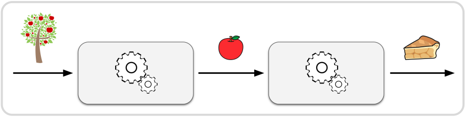
There are three strategies available for creating workflows, each with its own benefits and use-cases:
| Description | Benefits | |
|---|---|---|
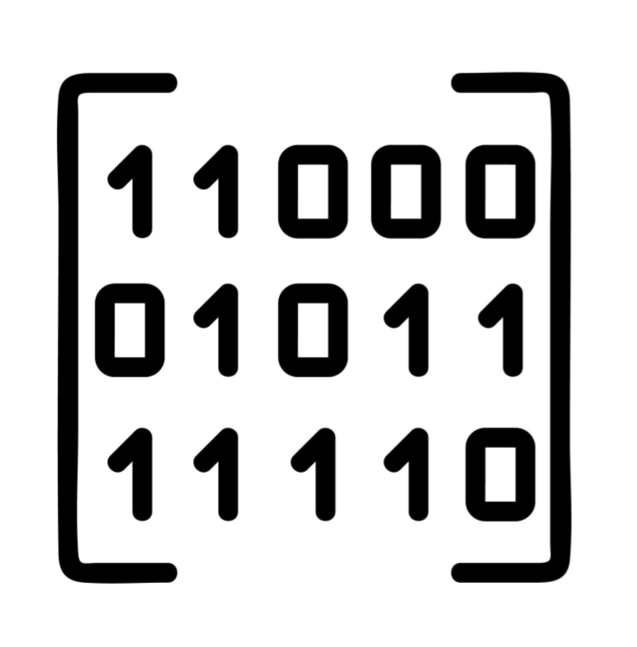 | Write Rust code to define nodes and workflows using the native Rust API of crossflow | 🠚 compile-time validation 🠚 access to all native features 🠚 easily import plugins |
| Generate a JSON diagram based on the output of a planner or a description of some process | 🠚 runtime validation of diagram 🠚 visualize generated diagrams 🠚 implement highly dynamic systems | |
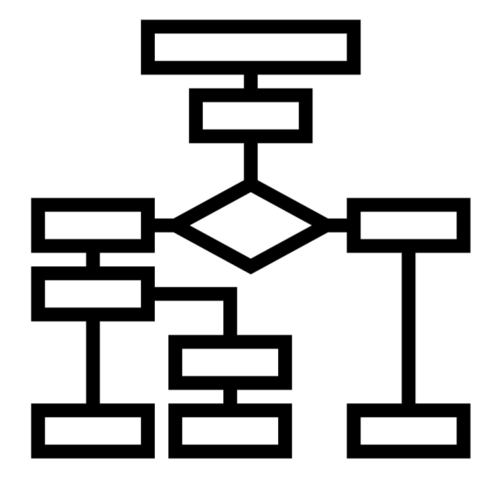 | Visually design and configure a workflow with a graphical editor | 🠚 no-code programming 🠚 validate diagram while editing 🠚 runtime validation of diagram |
This chapter will introduce concepts that are relevant to all three. For building workflows using the native Rust API, you can go to the How to Build a Workflow chapter. To learn about runtime generation and visual (no-code) editing of workflows, go to JSON Diagrams.
Tip
See our live web demo of the open source crossflow diagram editor.
Node
To put a service into a workflow you create a node by specifying a service that will be run when the node is given an input:
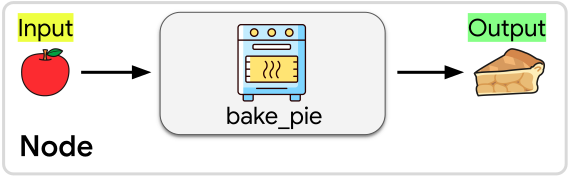
In this case we’ve created a node that will run the bake_pie service,
taking an apple and turning it into a pie. You can include the same service any
number of times in a workflow by creating a node for each place that you want to
run the service.
Input Slots and Outputs
A node has one input slot and one final output. There must be at least one output connected into a node’s input slot in order for the node to ever be activated, but there is no upper limit on how many outputs can connect to an input slot. The node will simply be activated any time a message is sent to its input slot, no matter what the origin of the message is.
The output of a node must be connected to no more than one input slot or operation. If an output is not connected to anything, we call that output “disposed”. If you want to connect your node’s output to multiple input slots, you will need to pass it through an operation like clone, unzip, or split depending on how you want the message’s data to be distributed.
To connect an output to an input slot, the data type of the output must match the data type expected by the input slot. When using the native Rust API, you can use a map node to transform an output message into a compatible input message. When building a JSON diagram, you can use the transform operation. A data type mismatch will either cause a compilation error (native Rust API) or a workflow building error (JSON Diagram). Either way, the workflow will not be allowed to run until the mismatch is resolved.
Streams
If the service used by your node has output streams then
you will receive a separate Output for each stream:
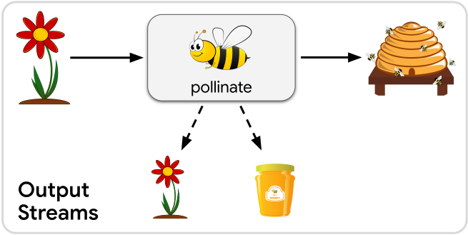
In this example, the pollinate service has a side effect of producing more
flowers and producing honey. We can represent these side effects as output streams
of the service.
Each of these streamed outputs can be connected to a separate input slot or operation. Each stream can carry a different data type, so make sure that you are connecting each stream to a compatible input slot or operation.
When building a workflow, streamed outputs behave essentially the same as the regular “final” output. There are just two practical characteristics that make streamed outputs different:
- Output streams will only produce messages while the node is active. After the final output message has been sent, no more stream messages can appear until the node is activated again by a new input message.
- For as long as the node is active, an output stream may produce any number of messages, including zero. This means you cannot rely on getting any messages from a stream unless you know something about the implementation of the service that the node is using.
Operations
Besides just running services, workflows need to manage the flow of data between those services. That includes conditional branching, parallelism, and synchronization. Continue to the next page to learn about the other kinds of operations that you can use in a workflow to achieve the behavior that you want.
Branching
What distinguishes a workflow from a series is that workflows support additional operations besides just chaining services together. For example, fork-result creates a fork (a point with diverging branches) in the workflow where one of two branches will be run based on the value of the input message:

The input message of a fork-result must be the Result<T, E>
type. Result is an enum
with two variants: Ok and Err. The Ok variant will contain an object of
type T while Err will contain a type E. T and E can be any two data
structures of your choosing.
Each variant gets its own branch coming out of the fork-result operation. Each
time a message is sent into the fork-result operation, exactly one branch will
activate depending on whether the message is an Ok and Err variant. In Rust,
an instance of an enum can only have a value of exactly one of its variants.
We say that fork-result does “conditional branching” because it creates a fork in the workflow where one or more branches might not be activated when a message arrives.
Trigger
Another conditional branching operation is fork-option. Similar to Result<T, E>,
the Option<T> type in Rust is an enum
with two variants: Some and None. What makes Option different from Result
is that the None variant has no inner value. An Option<T> either contains some
value T or it contains no value at all (similar to
std::optional
in C++).
When we fork an Option we still produce two possible branches:
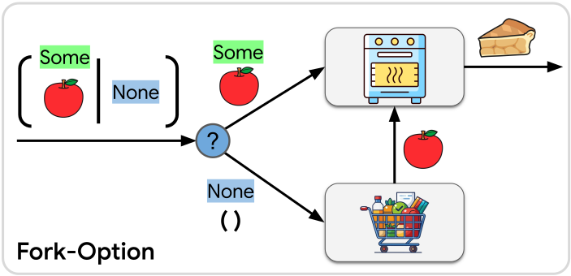
The branch for Some will carry the inner T message that the Option contained,
but the None branch has no value to carry. Instead it contains a message of
the unit type represented in Rust code as an empty tuple ().
The unit type concept is a useful one in workflows. It’s a way of sending a signal that some branch in the workflow should activate but there is no meaningful data to transmit. We refer to this pattern as a “trigger”, and operations that produce a unit type are called triggers.
In the above example we check whether an apple is available. If it is, we send it to the kitchen to be baked into a pie. If no apple was available then we go to the supermarket and bring back an apple to send to the kitchen. The context of the workflow is enough for us to know that we need to pick up an apple from the supermarket (this information could be embedded in the service configuration), so a trigger with no message data is sufficient to activate that service.
Note
If you have a custom enum type that you would like to use for forking, we have an open issue ticket to add support for this.
Parallelism
Clone
Besides conditionally running one branch or another, some operations can run multiple branches in parallel. For example, the fork-clone operation takes in any cloneable message and then sends one copy down each each of the branches coming out of it:

Each branch coming out of the fork-clone will run independently and in parallel. Unlike in a behavior tree, these branches are completely decoupled from here on out, unless you choose to synchronize them later. You are free to do any other kind of branching, cycling, connecting for each of these branches, without needing to consider what any of the other branches are doing.
Unzip
Another way to create parallel branches is to unzip a tuple message into its individual elements:
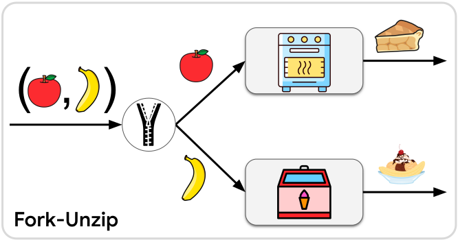
The tuple can have any number of elements (up to 12), and the fork-unzip will have as many output branches as its tuple had elements. Just like fork-clone, each branch will be fully independent.
Note
If you would like to unzip a regular struct with fields, where each field gets sent down a different branch, issue #145 is open to track this.
Spread
Warning
At the time of this writing, the spread operation is not yet available as a JSON diagram operation. This is being tracked by #59. In the meantime it can be put into a JSON diagram via the section builder operation.
Tip
A single node can be activated any number of times simultaneously.
Parallelism in workflows is not limited to forking into parallel branches. A single branch can support any amount of parallel activity. In other words, a single node can be activated multiple times simultaneously, with each run of its service being processed independently. One easy way to parallelize a single branch is with the spread operation:
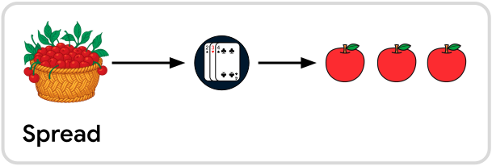
The spread operation takes an iterable message type (e.g. Vec,
array, or anything that implements IntoIterator) and spreads
it out into N separate messages where N is however many elements were in the
collection.
All of the messages coming out of the spread operation will be sent to the same input slot. In principle they are all sent to the input slot “at the same time” although the exact outcome will vary based on what kind of operation they are being sent to:
- If they are sent to a blocking service then they will be processed one-at-a-time but all of them will be processed within the same “flush” of the workflow (i.e. within one update frame of the Bevy schedule).
- If they are sent to an async service then the service will be activated with one message at a time, but the Futures of all the calls will be processed in parallel by the async compute task pool.
- If they are sent to a continuous service then they will all be queued up for the continuous service together, and the continuous service will see all of them in its queue the next time it gets run.
The inverse of the spread operation is the collect operation.
Split
One very useful operation can do conditional branching, parallel branching, and spreading all at once. That operation is called split:
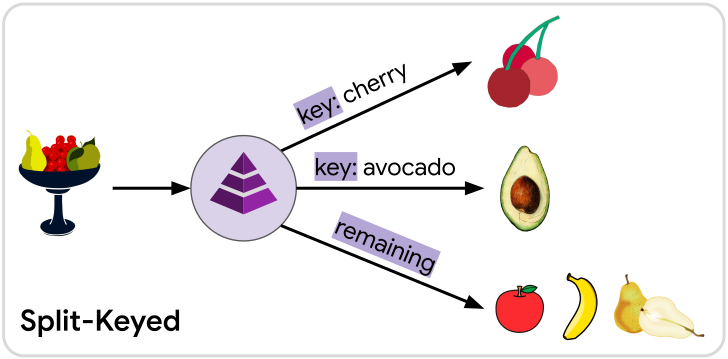
Split takes in anything splittable, such as collections and maps, and sends its elements down different branches depending on whether the element is associated with a certain key or location in a sequence:
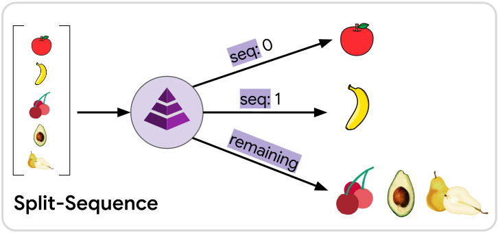
In a sequenced split, the first element in the collection will go down the seq: 0
branch, the second element will go down the seq: 1 branch, etc, and all the rest
will go down the remaining branch. The meaning of “first”, “second”, etc is
determined by how the splittable trait was implemented for the
input message. For vectors, arrays, etc this will naturally be the order that
the elements appear in the container. For ordered sets and maps (e.g.
BTreeSet and BTreeMap) it will be based on the sorted
order of the element or key, respectively. For unordered sets and maps (e.g.
HashSet and HashMap) the ordering will be arbitrary,
and may be different in each run, even if the input value of the message is the
same.
Tip
Keys and sequences can be used at the same time in one split operation. Elements will prefer to go down a branch that has a matching key, regardless of where the element would be in a sequence. If an element gets matched to a branch with a key, then that element will not count as part of the “sequence” at all, meaning the next element that doesn’t match any keyed branch will take its place in the sequence.
As a result, the branch for
seq: nwill never receive a message until all lower sequence branches up toseq: n-1have received a message first.
Any elements that don’t match one of the keyed or a sequenced branches will be
sent along the remaining branch. If multiple elements in the collection match
the same key or if multiple elements fail to match any keyed or sequenced branches,
then there will be multiple messages sent down the same branch, similar to the
spread operation.
The split operation also behaves similar to conditional branching because there
may be keyed or sequenced branches that have no matching element in the collection.
When this happens, no message will be sent down those unmatched branches. It is
also possible that all elements will be matched to a keyed or sequenced branch,
in which case no messages will be sent down the remaining branch.
Note
Splitting only works for data structures who can be split into a collection of messages that all share the same type. However serializing into a
JsonMessage, splitting it into elements ofJsonMessage, and then deserializing those messages later is one potential way to work around this.For splitting apart the fields of data structures without needing to serialize or deserialize, see issue #145.
Synchronization
Unfettered parallelism empowers your workflow to aggressively carry out its tasks without being concerned about what other activities it may be carrying out simultaneously. However, sometimes those parallel threads of activity relate to each other in important ways. Sometimes a service needs to obtain results from multiple different branches before it can run.
When multiple separate branches need to weave back together, or concurrent activity needs to be gathered up, we call that synchronization.
This chapter will explain how to synchronize the parallel or concurrent activity within your workflow using various builtin mechanisms.
Buffers
When services are connected together in a workflow, the next service in a chain will receive input messages as soon as they’re produced. But sometimes when a service is finished, the message that it produces can’t be used right away. It may need to wait for some other service to finish first, so their results can be combined.
For example, if we want to bake an apple pie, we don’t need to wait for the oven to preheat before we chop the apples, or vice versa. These can be done in parallel, but we need both to be done before we can begin baking the pie:

To make this work, we capture the output of each service—chop_apple and
preheat_oven—in a separate buffer. A buffer is a workflow element that
can capture messages for later use. There are numerous ways and reasons to use a
buffer, but a some examples include:
- Hold messages until the workflow is ready to consume them (similar to “places” in Petri Nets)
- Track the internal state of workflow (similar to the “blackboard” in behavior trees)
In our apple pie use case, we want to see that the “apple chopped” and “temperature ready” buffers both have a message before we pull those messages out of the buffers and pass the apples along to be baked.
Tip
Buffer settings allow you to specify how many messages a buffer can retain. You can also specify whether to discard the oldest or the newest messages when the limit is reached.
This allows buffers to handle buildups of data if one branch is generating messages at a higher frequency than another branch that it needs to sync with.
Certain operations take buffers instead of messages as inputs. Those operations will be activated on any change in any of the buffers connected to them, although the exact behavior depends on the operation. Some examples are join and listen, covered in the next two pages.
Join
A common use of buffers is to join together the results of two or more parallel branches. Crossflow provides a builtin join operation that can have two or more buffers connected into it. As soon as at least one message is present in each and every buffer connected to the join operation, the oldest message will be pulled from each buffer and combined into a single message that gets sent as the output of the join operation.
Join into struct
There are two ways to join buffers depending on whether you want to produce a struct or a collection. To join into a struct, you will need to specify a key (name) for each buffer connection. Each key will put the buffer value into a matching field in the struct.

The type of struct that gets created by the join operation is automatically inferred by what node the output of the join operation is connected to.
Note
A keyed join can be used to produce more than static structs. The values can also be gathered into a map, such as
HashMap,BTreeMap, or JSON where the key name of the connection will be used as the buffer value’s key in the map.
Each key can only be used once per join operation. If a buffer is used in multiple join operations, it can have a different key for each join.
No matter what struct you intend to create through the join, the workflow builder
will ensure that every necessary field has a corresponding buffer connected with
a matching key name and matching data type. When building workflows with the native
Rust API, any mismatch will produce a compilation error. When building a workflow
from a JSON diagram, you will get an IncompatibleLayout error.
Join into sequence
While the keyed join is generally the recommended way to do a join (explicit key
names have more semantic value), it is also possible to join into a sequence,
such as an array, Vec, tuple, or JSON.
For each connected buffer, specify a sequencing index that will determine where
in the sequence that element belongs.
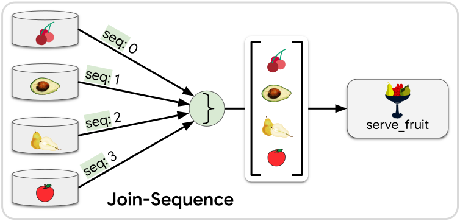
When joining into an array or Vec, all the buffer values must have the same
data type. Joining into a tuple allows their data types to be mixed. Joining
into JSON requires the data to be serialized. Similar to error handling for the
keyed join, any incompatibility will produce a compilation error for the native
Rust API and an IncompatibleLayout error when building
from a JSON diagram.
Fetch by clone
When the conditions are met for a join operation to activate (at least one message is present in every connected buffer), the join operation will construct its output message by “fetching” the oldest message from each of its connected buffers. By default, “fetching” means to “pull” the message, removing it from the buffer and moving it into the output message.
Sometimes there may be a reason to clone the message out of the buffer instead of pulling it. For example if the buffer represents a checkpoint in your process that doesn’t need to be repeated, you can clone from the buffer to retain the checkpoint.
Suppose we want to make many apple pies with the same oven.

We can’t bake any pies until the oven is preheated, but once the oven has reached the right temperature, we do not need preheat it again. We can have our ingredient preparation branch repeatedly prepare the pie pans for baking, and all of those pans will be put in the oven as soon as the oven has finished preheating once. Any new pans that are prepared after the preheating is finished can go into the oven right away.
To express this behavior, we use fetch-by-clone for the buffer that tracks whether the oven is preheated, while we do the regular fetch-by-pull for the prepared pan. The “finished preheating” buffer will be able to retain its knowledge that the preheating has finished, while the prepared pan buffer will have its pans consumed (moved into the oven) each time that it can happen.
Join Rates
The default behavior that you get from joining two buffers fits typical fork-then-join uses cases:
- Each buffer will hold up to one message. Older messages get dropped when new messages arrive.
- When the join is performed, the single message in each buffer will be pulled out, leaving all the buffers empty.
However this might not be the behavior you want in all uses cases of join. Sometimes branches that lead into a join will each be streaming messages at different rates. The settings you have for your buffer and your join operation could yield different outcomes depending on the message rates of the different branches.
Here’s an example of a branch that’s producing localization data (top) being joined with another branch producing camera data (bottom):

With both buffers having keep_last: 1 and being joined by pulling (rather than cloning) from both, you can see that some of the location data—which is being streamed down the branch faster—will be dropped because new location samples will enter the buffer before the older samples get pulled out for a join.
Suppose we have the opposite case where our robot moves infrequently and we want to pair up incoming camera samples with whatever the last known location happens to be.
For that we can stick with the keep_last: 1 setting for both buffers, but use fetch-by-clone for the location data:

The above two setups work well enough if incoming samples are fungible, meaning we don’t care about exactly which messages get paired up between the branches. They might not work so well if there are specific messages that are supposed to be paired across the branches.
Suppose we have two branches that are each processing a batch of sensor data. The batch of sensor data contains pairs of samples that are related by a timestamp or some other important context. The data gets unzipped and sent down different branches to be processed based on the type of data it is:
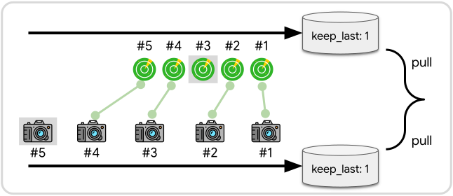
If one branch finishes processing its batch of data faster than the other branch, the join operation could accidentally pair up unrelated samples. In the above example, lidar sample #3 and camera sample #5 will end up discarded. Meanwhile lidar samples #4 and #5 will be paired with the wrong camera samples.
If you want to ensure that messages from the two branches are always paired up sequentially, you can simply set the buffer to use keep_all:
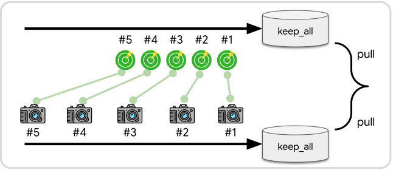
Warning
When using
keep_all, make sure that the number of messages arriving from each branch will eventually equalize or else one buffer will grow unbounded, and may take up an excessive amount of RAM.
Tip
If you need more sophisticated logic to pair up samples across different branches—e.g. comparing their timestamp fields before deciding whether to join them—then you will need to use a custom listener instead of join.
Listen
While join can handle basic synchronization between branches, sometimes the buffers need to be managed with more nuanced logic than simply pulling out their oldest values. This is especially true if your workflow expresses a state machine where different state transitions may need to take place based on the combined values of multiple buffers.
Suppose a vehicle is approaching an intersection with a traffic signal. While we approach the intersection we’ll monitor the traffic signal, streaming the latest detection into a buffer. At the same time, the robot will approach the intersection.
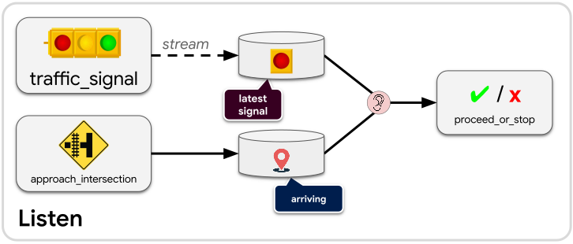
Once the vehicle is close enough to the intersection, a decision must be made: Should the vehicle stop before reaching the intersection, or just drive through it? If the traffic signal is red, we will ask the vehicle to stop, but then once the signal turns green we will need to tell the vehicle to proceed.
To express this in a workflow we create two buffers: latest_signal and arriving.
We create a listen operation (listener) that connects to both buffers. Every time
a change is made to either buffer, the listener will output a message containing
a key for each buffer. Those buffer keys allow a service to freely
access the contents of the buffers and even make changes to the
contents of each.
Let’s translate these requirements into how proceed_or_stop should manipulate
the buffers when activated under different circumstances:
- If the
arrivingbuffer is empty then do nothing because the vehicle is not near the intersection yet (or has already passed the intersection). - If the
arrivingbuffer has a value andlatest_signalis red, leave thearrivingbuffer alone and command the vehicle to come to a stop. By leaving thearrivingbuffer alone, we can continue to listen forlatest_signalto turn green. - If the
arrivingbuffer has a value andlatest_signalis green, drain thearrivingbuffer and command the vehicle to proceed. With thearrivingbuffer now empty, the listener will no longer react to any updates tolatest_signal. - (Edge case) If the
arrivingbuffer has a value andlatest_signalis empty, treatlatest_signalas though it were red (come to a stop) to err on the side of caution.
If we had tried to use the join operation for this logic, we would
have drained the arriving buffer the first time that both buffers had a value.
If the value in latest_signal were red then we would be prematurely emptying
the arriving buffer, and then we would no longer be waiting for the green traffic
signal.
Note
A listen operation (listener) will be activated each time any one of the buffers connected to it gets modified. The listener will pass along buffer keys that allow services to read and write to those connected buffers. Listeners will not be activated when a buffer is modified using one of the listener’s own buffer keys. This prevents infinite loops where a listener endlessly gets woken up by a downstream modification. You can choose to turn off this safety mechanism with
allow_closed_loops.
Accessor
Just like any other operation in a workflow, the listen operation produces a message that can be connected to an input slot of a compatible node or other kind of operation. Similar to join, the listen operation can infer what message type it should produce based on what downstream operation it’s connected to. However the listen operation specifically creates an Accessor—a data type that gives access to one or more buffers within the workflow.
The most basic accessor is a BufferKey<T> which gives access to a
buffer containing messages of type T. There are some opaque buffer keys like
JsonBufferKey and AnyBufferKey which do not
reveal the underlying message type within the buffer but allow you to interact
with the buffer data within the limitations of JsonBufferMut
and AnyBufferMut respectively.
In many cases you will want to receive multiple keys from a listener because
it is often useful to listen to multiple buffers at once. The keys you get from
the listener might be for buffers with different message types, and each key might
have its own particular purpose or identity. You can define a custom accessor type
in Rust using the Accessor macro:
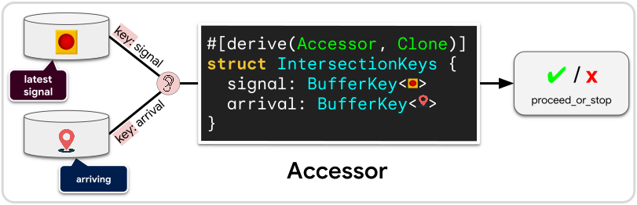
Simply create a struct whose fields are all buffer key types (which may include
JsonBufferKey and AnyBufferKey). Derive
Accessor and Clone for your custom struct. Use this custom struct as the
input type of your service. When you connect a listener to a node that uses your
service, it will know that it needs to create this struct for you.
When using a custom accessor, the buffers connected to the listener will need to
specify a key name for their connection, much like they do when
joining into a struct. That key name tells the
listen operation which field that buffer’s key should be placed in. If there is
ever a mismatch between key names or buffer types, or if any field is missing a
connection or has multiple connections, then you will get an IncompatibleLayout
error when building from a JSON diagram. When using the native Rust API any
incompatibility will produce a compilation error.
Tip
To learn how to use an accessor within your service, see Using an Accessor.
Buffer Access
There may be times when a service needs more information about what is going on than what can be provided by the upstream service that connects into it. As we’ve seen, workflows store their state information in buffers. Typically we can design our workflow so that any additional information needed by a service can be sourced from one or more of the workflow’s buffers. This can function similar to a blackboard in a Behavior Tree.
Buffer access refers to a workflow operation that will take any input and combine it with a buffer Accessor before passing the combined message along to a node or other operation. For example, suppose a node that does task planning outputs a target destination for a robot to reach. For a path planner to determine how the robot should reach the target, it will also need to know the robot’s current location:
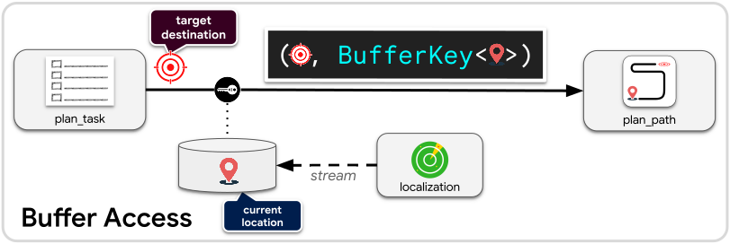
With the buffer access operation, we can take the target destination and combine
it with a buffer key or other accessor that the plan_path
service can use to check the latest location provided by the localization node.
The output type of the buffer access operation is a tuple whose first element is
the original output and the second element is a key or accessor that combines all
buffers connected to the access operation.
Just like listen, buffer access can form its associated buffers into any Accessor that the downstream node asks for, as long as the data types and buffer key names are set correctly. The difference between listen and buffer access is that the buffer access operation does not get triggered when buffer values are changed. It only gets triggered when an input value is passed to it.
Tip
To learn how to use an accessor within your service, see Using an Accessor.
Collect
Warning
At the time of this writing, the collect operation is not yet available as a JSON diagram operation. This is being tracked by #59. In the meantime it can be put into a JSON diagram via the section builder operation.
Recall from the parallelism chapter that there are two ways to have parallel activity within a workflow: branching and spreading. Join and listen allow us to synchronize activity across multiple branches, but they aren’t necessarily suited for managing parallel activity happening along a single branch, which is what the spread operation does.
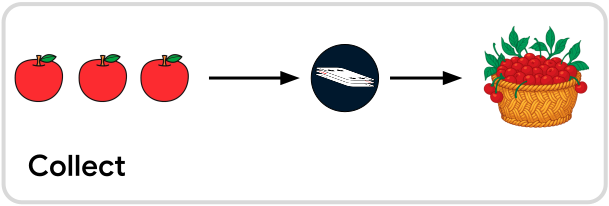
The inverse of the spread operation is collect. The collect operation will
monitor all workflow activity happening upstream of it. Messages sent to the
collect operation will be held onto until all upstream activity has finished,
then they will be collected into a single message (such as Vec) and
sent out.
Maximum
You can also choose to collect until a certain number of elements has been reached. Then regardless of the upstream activity, all the gathered elements will be sent out as one message once the maximum has been reached. If more messages arrive later then a new collection will start, and they will also be sent out once they reach the maximum or all upstream activity has finished.
Minimum
If the collection needs to reach a certain number of elements, you can set that as a minimum. If all upstream activity ceases before the collect operation reaches the minimum—meaning it is impossible to ever reach the minimum—then all the gathered messages will be discarded and the collect operation will signal that it has disposed a message, which could lead to a cancellation.
Catching Unreachability
In crossflow a “disposal” happens any time one or more outputs of an operation
will not carry any message after the operation was activated. Whenever a
disposal happens we will check if it is still possible for the workflow to finish.
If a workflow can no longer finish because of a disposal then it will be cancelled
with an Unreachability error.
Consider the nature of the collect operation: It monitors upstream activity. One way it identifies when upstream activity has finished is to monitor when disposals happen. With each disposal, the collect operation will calculate its own “reachability”—i.e. whether or not it is possible for the collect operation to be reached by any of the ongoing activity in the workflow. Once the collect operation is no longer reachable, it will send out its collection, as long as the collection has more than the minimum number of elements, otherwise it will emit a disposal itself.
This means the collect operation has the ability to catch cases where some part of your workflow may become unreachable. A node becoming unreachable is a natural thing to happen in a workflow that contains any conditional branching, but sometimes you may want to respond to that unreachability in a certain way, perhaps perform a fallback action. By inserting a collect operation with a minimum of 0 and a maximum of 1, you can catch when that part of the workflow becomes unreachable by checking whether the output of the collect operation is empty or has 1 element.
Circularity
It is okay to put a collect operation inside of a cycle. In this case, “upstream” of the collect does include any operations downstream that can lead back to the collect operation. When calculating reachability, the collect operation will simply prune itself to prevent an infinite graph search.
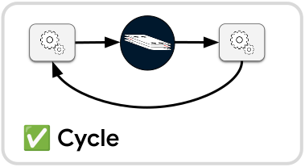
However, there is an edge case to be wary of. If you have two collect operations inside of one loop, then there is no logical way to resolve the reachability for either of the collect operations.
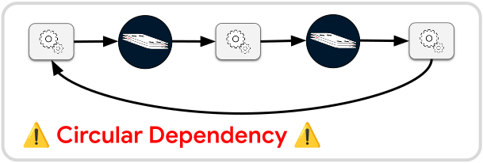
Suppose all other activity within this cycle comes to a stop. Both collect operations will want to check their own reachabilities, and each will want to send out a message if it’s not reachable. If the left collect operation assumes that the right collect operation can still send out a message then the left collect operation should consider itself reachable. At the same time if the right collect operation assumes that the left can still send out a message then the right should consider itself reachable. If both see themselves as reachable then neither will ever decide to send out a message, but this directly contradicts the assumption that both made. The result will be that neither ever sends out a message, which means both collect operations are failing to do their jobs.
On the other hand if the left collect operation decides that the right will not send out a message then the left will decide that it should send a message. At the same time, the right collect operation would make the same assumption about the left and also decide to send out a message. Now both collect operations will produce messages every time the activity in the cycle settles down, meaning there will be potentially infinite empty messages being produced by these operations over the life of the workflow. Churning out infinite empty messages despite no actual new activity would also violate the purpose of the collect operation.
No matter which assumption is used to implement the collect operation, there is
no way to get meaningful behavior. Instead the workflow will detect this when
it attempts to run and cancel with a CircularCollect error.
Currently there is no mechanism to detect this type of error when compiling or
spawning the workflow. This issue is tracked by #148.
Scoping
It’s still possible to have two collect operations in the same cycle, but you need something to disrupt the circular dependency. You can use the scope operation to isolate one of the collect operations to focus exclusively on one portion of the cycle, e.g. the portion between the left and right collect operations:
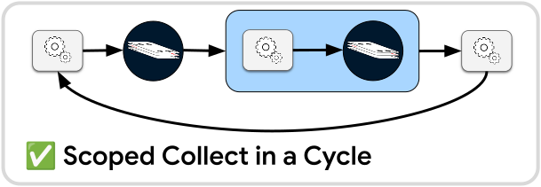
This effectively makes both collect operations invisible to each other. The left collect operation will only check if the scope to its right has any active sessions. The right collect operation will only check if there is any activity inside of its own scope.
Strictly speaking this structure is not logically equal to the original circular dependency structure—and good thing, because there is no way to resolve that structure!—but it does allow us to have a pattern of multiple spread🠚collect or stream🠚collect sections within one cycle of a workflow. We just need to isolate each collect to a specific scope of activity.
Channels
Buffers are a useful to encode the synchronization of workflow activities in the structure of the workflow itself. However sometimes a deeper coupling between services is needed.
Recall that “messages” that are passed between operations in a workflow can be
any data type that can be safely moved between threads. This includes endpoints
of channels—e.g. Sender and Receiver. By
streaming out a Receiver as a message, the service that gets the Receiver can
listen to ongoing activity in your service while both services run in parallel.
Or by streaming out a Sender, the service that gets the Sender can send data
back to your service while both services run in parallel.
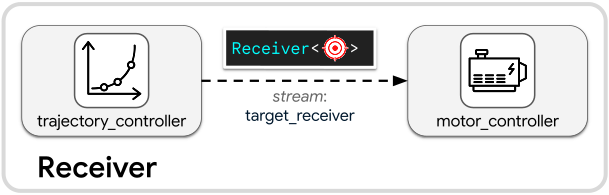
Suppose we have trajectory controller service and a motor controller service in
a workflow. The trajectory controller might update at a frequency of 50Hz while
the motor controller updates at a frequency of 1000Hz. There isn’t a natural way
for the structure of the workflow itself to synchronize these services, but the
trajectory controller could send a Receiver to the motor controller service,
allowing the motor controller to run its feedback loop at its own rate and
receive new targets as they arrive.
We use a stream to send out the receiver because streams
can send messages out of the service while the service continues to run. This
means the trajectory_controller service and motor_controller service can run
simultaneously as async services, and those specific service sessions can
communicate via the channel of the Receiver.
This can also be used to draw data into a running service. Suppose we want to
consider environmental hazards that should alter the path of the trajectory or
maybe even bring the robot to a stop. We could introduce a safety_monitor
service:
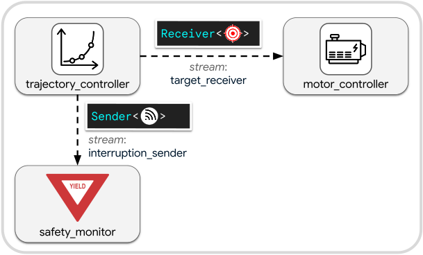
The trajectory_controller can send out a Sender over a second
output stream. This sender is used by the safety_monitor service to feed
moving obstacle information back into the trajectory_controller. Rather than
outright killing the trajectory_controller service to respond to obstacles,
we can feed the service with the information it needs to respond to obstacles.
Caution
Channels are a powerful way to set up long-running one-way or two-way communication between async services in a workflow that run in parallel, but there is a notable drawback. If you want to visualize the execution of the workflow, data sent between services over channels will not be traceable. If you care about traceability, you should consider copying all channel data to an output stream for logging.
Cycles
Cycles are commonly used in programming to define routines that need to repeat until some condition is met. Similarly a workflow may need to contain a cycle of operations if some subroutine needs to keep running until a condition is met.
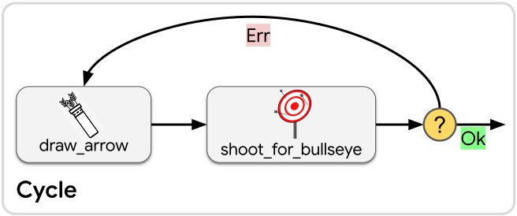
Cycles are not a special or specific operation in crossflow. A cycle is simply what happens when the output of an operation is connected to the input slot of an operation upstream of it.
When building a workflow, you are free to connect an output to the input slot of any operation that expects a compatible message type. There are no restrictions on how these connections are laid out, except that each output connects to exactly one input slot—but each input slot can take in any number of outputs, leaving an opening for downstream operations to connect their outputs back upstream.
Scopes
Every time a workflow is run, a session is started. That session is contained within some scope. Each scope has a start operation (green play symbol) and a terminate operation (golden star).
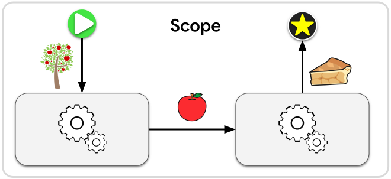
Start
The start operation has one simple purpose: deliver the user’s request message into this session. Each time a new session starts, exactly one message will be produced by the start operation, and it will be whatever request message started this run of the workflow. The start operation will never output a second message for the same session.
Terminate
Naturally the terminate operation serves the opposite purpose of the start operation. The terminate operation has an input slot and no output slots, so it will never output a message within its own scope. Instead it takes the first message that gets passed to it for each session and then sets that as the final response of that workflow session. Any additional messages passed to it for the same session will simply be discarded.
Immediately after the terminate operation is activated, it will trigger the scope cleanup to begin. This ensures that all activity happening inside the workflow is brought to a clean and complete finish before the outside world is told that the workflow is done.
As soon as the cleanup process is finished, the first output that was passed to the terminate operation will be sent out as the final output of the workflow session.
Scope Cleanup
Scope cleanup can be broken down into two major parts that happen in sequence: operation cleanup followed by buffer cleanup.
Operation Cleanup
There are many kinds of operations that can exist within a workflow. Once the terminate operation is reached, we want to wind down that session as quickly as possible to avoid doing useless work—once the final output of the workflow is determined, no other work should matter in principle. This process of winding down is called the operation cleanup. There are three different ways that operations get cleaned depending on the kind of operation:
- Blocking: The input message storage of the operation is cleared out for this session. Even if the operation awakens, it will quit early when it sees that it has no more input messages.
- Async: The input message storage of the operation is cleared out, and any Tasks that were spawned for this operation are cancelled. The cleanup of this operation is considered finished when we are notified that the task was successfully dropped. At that point, there cannot be any more side-effects produced by the task.
- Continuous: The order queue of the operation is cleared out for this session. The next time the service runs, it will no longer see any orders related to this session.
- Workflow: The input message storage of the operation is cleared out, and the inner workflow is sent a cancellation signal. Any uninterruptible scopes within the workflow will be brought to a finish, and cleanup will be performed on the workflow’s operations and buffers. The cleanup of this operation is considered finished when we are notified that the inner workflow’s cleanup has finished.
Buffer Cleanup
Warning
At the time of this writing, buffer cleanup is not yet available for JSON diagrams. This is being tracked by #59. In the meantime, buffer data will simply be dropped when a scope terminates.
After operation cleanup is finished, there may still be data lingering in the buffers for this session. Often it would be fine to just discard that data without any further action, but sometimes the lingering buffer data is significant. Maybe some buffer data represents ownership of a resource that needs to be released, or contains an error that needs to be resolved before the session should end, or maybe there is a sign-off that should be performed before dropping the whole workflow session.
The buffer cleanup phase acts like a user-defined destructor for your workflow. You can define any number of buffer cleanup workflows for your workflow—you read that right, you can define workflows to clean up the data in the buffers of your workflow.
The input message for each cleanup workflow is an Accessor for the buffers that it’s cleaning up. You can choose any in-scope buffers that you would like the Accessor to contain when you set the cleanup workflow. You can also specify if each cleanup workflow should be run only when the parent workflow was prematurely cancelled, successfully terminated, or either.
Note
You can use the same buffer across multiple cleanup workflows, but be mindful of how those separate workflows might interfere with each other. All the cleanup workflows will run in parallel.
As soon as operation cleanup is finished, all the buffer cleanup workflows will be started at once, given access to whichever buffers they requested. The cleanup workflows are allowed to have cleanup workflows themselves, and so can the cleanup workflows of your cleanup workflows, etc. It is not possible to build a workflow with infinitely recursive cleanup workflows, because the attempt to build such a workflow would require infinite memory.
The buffer cleanup phase is finished once all cleanup workflows have terminated or cancelled, including any inner cleanup workflows that the cleanup workflows may contain. Any data belonging to this session that is still lingering in any of the buffers will simply be dropped.
Reachability
An important thing to consider for the lifecycle of a workflow is whether it’s even possible for the workflow to end. If a workflow is allowed to keep running indefinitely with no possibility of reaching the terminate operation, then the caller who made the request will be left hanging forever. This can lead to undesirable program behaviors like deadlocks.
To mitigate this problem, crossflow calculates the reachability of the terminate operation each time an event occurs that could influence whether the terminate operation can be reached. If at any point the terminate operation is no longer reachable, then the session of the scope will automatically be cancelled.
Note
An operation is reachable if there exists at least one plausible path to the operation from a currently active operation.
Inherent Unreachability
One kind of unreachability is inherent, meaning the very structure of the workflow makes it impossible for the terminate operation to ever be reached.
One way to get inherent unreachability is if nothing at all is connected to the terminate operation:
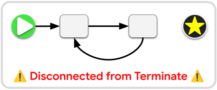
A slightly more subtle version of inherent unreachability is when there is no path from the start operation to the terminate operation because each is part of a separate island of operations:
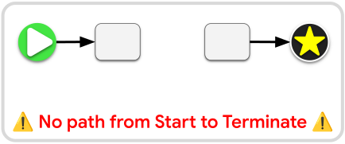
In either case, this unreachability will be detected immediately. Before the initial message is even sent out by the start operation, crossflow will detect that the terminate operation cannot be reached from the start operation, and the workflow will be instantly cancelled without any operations running.
Conditional Unreachability
Inherent unreachability fully prevents a workflow from running, but most of the cases where we need to think about unreachability, it depends on runtime conditions. Depending on which branch(es) are activated by an operation in the workflow, the terminate operation might become unreachable.
Consider this simple fork-result example:
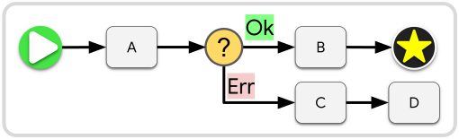
The branch going to node B will lead to the terminate operation whereas the
branch going to node C never will. If the message produced by node A has an
Ok value then the workflow will have no problem reaching the terminate operation.
But for an Err value:
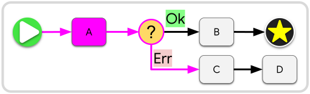
In this case crossflow will detect that the Ok message was “disposed” by the
fork-result operation and immediately perform a reachability check for the
terminate operation. Before node C even receives the message out of A, the
workflow will be cancelled because the terminate operation is not reachable.
Fixing this problem is relatively simple. You just need to connect node D to
the terminate operation:
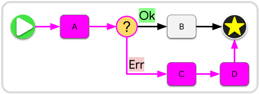
There may be cases where you actually do want the Err branch to cancel your
workflow because only node B can correctly provide the final output of the
workflow, but you nevertheless want nodes C and D to run before the workflow
delivers its cancellation message.
A simple way to achieve this is by connecting D to an explicit cancel operation.
The workflow will be considered “reachable” if either the terminate or operation
or an explicit cancellation operation is still reachable. As long as there is a
way for your workflow to eventually close itself down, it will be allowed to keep
running.
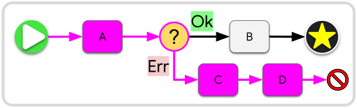
Cancellation
There are times where it becomes impossible for a workflow to successfully
terminate, or where a condition is met that requires the workflow to stop before
it can successfully terminate. The potential causes of a cancellation are
enumerated in [CancellationCause][CancellationCause].
When a workflow is cancelled, the caller will never receive a Response message, instead the Outcome will have an Err(_) value.
Inside the Err will be a Cancellation to give some information on why the cancellation happened.
There are a few potential causes of cancellation that are worth being mindful of:
- Unreachability - The terminate operation is no longer reachable. You will receive a list of the disposals that happened during the session which led to the unreachability.
- Triggered Cancellation - A cancel operation was explicitly triggered by the workflow itself. You might receive a string that serializes the message that triggered the cancellation from inside the workflow.
- Filtered - The condition of a filtering operation failed to pass, so the workflow was cancelled.
Disposal
When a scope nested inside of another scope gets cancelled, the parent scope will see that as a disposal, meaning the node will simply never yield a final message for that session of the nested scope.
Tip
It is generally discouraged to use cancellation in the happy path of your workflow. The cancellation data received by the caller is meant for debugging purposes, not to be used as regular service output. Instead if your workflow is known to be fallible it should return a
Resulttype.
In crossflow, disposals are something that are managed automatically. Currently
there is no operation for users to explicitly react to a disposal, so when the
service of a node gets cancelled, this is generally invisible to the parent
workflow until it escalates into a cancellation itself. The collect
operation can be used to catch unreachability, but there may be significant
information lost by the time the workflow reaches that point. Therefore it is
best practice to return Result types for fallible workflows instead of having
them cancel.
Stream Out
In crossflow all services are able to have output streams, which allow services to produce output messages while still running. These are different from the final output in two ways:
- A service can have multiple output streams with different names and message types, whereas its final output has one fixed message type.
- Each output stream can produce any number of output messages per activation of the service, including 0—outputting no message at all—whereas the final output always produces exactly one output message per service activation, unless the service gets cancelled.
When you spawn a workflow it will be encapsulated as a service. The stream out operation is how your workflow can provide output streams as a service. This operation will take any messages passed to it and forward them out of the workflow session.
For example suppose you have a workflow that takes in a basket of apples and chops them one at a time:

You can design the workflow so that each time an apple is chopped, the slices are sent out through an output stream, and then the workflow continues on to chop the next apple. The workflow ends when there are no apples left, and the final output of the workflow is just a trigger message.
Scope Operation
So far we’ve talked about how every workflow has a scope with start, terminate, and optionally stream out operations. But sometimes it’s useful for a set of operations within a workflow to be scoped.
The scope operation allows you to nest a self-contained workflow inside of another workflow. It is fully equivalent to spawning the sub-workflow into a service and then inserting that service into a node in your workflow, except that there’s no intermediate service created: the sub-workflow lives entirely inside the scope operation of your workflow.
Every time the scope operation is activated, a new child session is started inside the scope of the sub-workflow. Just like sessions of a workflow, each session of a scope operation is independent from each other and non-interfering.
Inside this new session, the incoming message that activated the scope operation will be handed off by the scope’s start operation. From there, the sub-workflow inside the scope will execute as normal until the scope’s terminate operation is reached.
Racing
One common use case for a scope operation is to conduct a race. Suppose we want a letter delivered as fast as possible but we can’t predict what means of delivery will get it there fastest.

We can create a scope that copies the letter and then sends each copy to a different transporter: a bicycle and a race car.
If the letter only needs to be delivered a few blocks from the sender then the bicycle might get it to the destination faster, as the race car will lose time while looking for parking. On the other hand, if the destination is many miles away, the race car will easily overtake the bicycle and arrive first.
The service that finishes first will trigger the terminate operation of the scope, and the other service will be told to simply drop its task to avoid wasted effort.
Isolation
Another way to use scopes is to isolate sets of parallel activities. As demonstrated by the spread operation, it is possible for a branch or any set of elements in a workflow to have multiple simultaneous activations within one session. In some cases, it’s important to organize that activity into separate sessions to avoid cross-contamination of data.
For example, suppose we have a workflow that takes in a list of cloud resources along with what directory each resource should be saved to. We can use the spread operation to convert this list into an internal stream of messages so all the assets can be fetched in parallel.
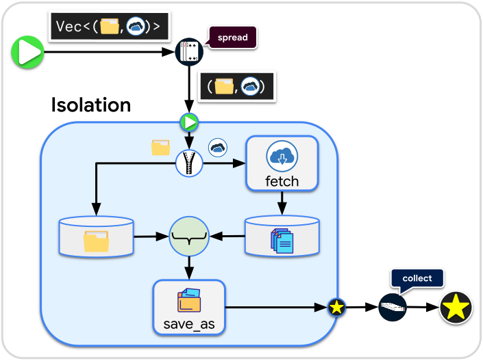
Suppose the service that fetches the cloud resource takes in only the URL and gives back the raw data received. We will need to unzip the directory information from the URL and save the directory information in a buffer while the resource is fetched. Without a scope operation we would be in a dangerous situation: What if the resources finish being fetched in a different order than the directory information is saved in its buffer? When we rejoin the directory information with the fetched data, we could end up sending files to the wrong directory.
Tip
Buffers inside the scope operation store their data separately per session of the scope.
By encapsulating the buffers, unzip, and join operations inside of a scope, we ensure that the fetched data gets sent to the correct directory no matter what order it arrives in. Each time a message starts a new session of the scope, the directory buffer will only contain the directory information from the message that started the session.
Outside of the scope, we will collect the final outputs of the scope operation to ensure that the workflow keeps running until all resources are fetched and saved.
Streams
The scope operation also supports output streams. In this case the stream out operation sends messages out to the parent scope.
Reflection
Reflective programming—also referred to as reflection—is when a program can introspect and modify its own structure or behavior. Crossflow does not currently support generalized reflection, which would imply that a workflow could change its connections or add new nodes and operations at runtime. However, it does support a few reflective operations which are able to inspect or modify the overall state of the workflow.
Most operations in crossflow are “localized”, meaning they don’t know anything about the workflow that they are in, except for the immediate neighbors that they are connected to. The reflective operations covered in this chapter have a broader view of the workflow that they exist in. They can be used to assess or modify the execution of the workflow at runtime.
Note
Theoretically it is possible to implement generalized reflection in crossflow. The main challenge is how to design an API that does not leave loose ends dangling while modifications are being made, or an API that can protect the user from unintuitive race conditions that may happen as the workflow transitions from one structure to another.
Trim
Warning
At the time of this writing, the trim operation is not yet available as a JSON diagram operation. This is being tracked by #59. In the meantime it can be put into a JSON diagram via the section builder operation.
Sometimes unbridled parallelism is a liability. If multiple branches want to make use of the same services, there could be destructive interference between the branches, depending on the nature of the services they are using.
Suppose we want to define a workflow for sending a robot to a location, but we need the workflow to check if the location is available before sending the robot. We are operating in a multi-robot environment, so we need to make sure we are not sending multiple robots to the same location at the same time.
We’ve been provided with a reserve_location service that takes in a target
location request and tries to reserve that location for our robot. If the location
is not available right away, then reserve_location will first stream out a
detour location for the robot to start moving towards. This detour location
will be a parking spot that is as close as possible to the final target location.
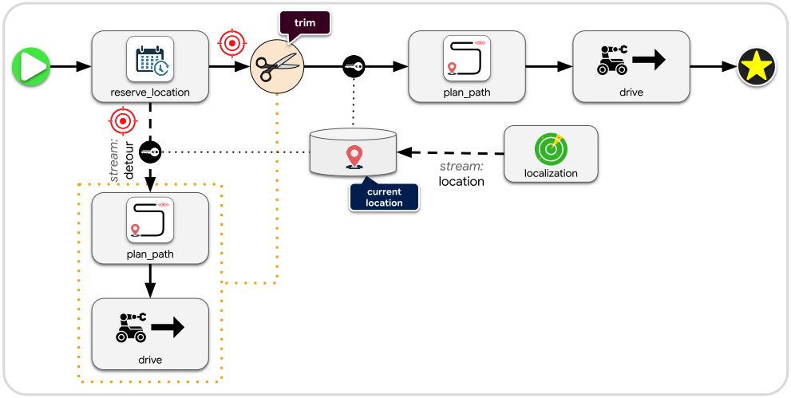
While the robot is heading to its detour location, the reserve_location service
will remain active until it gets a confirmation that the target location is
successfully reserved for our robot. Then the service will finish, passing along
the target location to a path planner which passes along a path to a drive
service. Once the robot reaches its target location, the drive service will
finish and terminate the workflow.
But what would happen if the drive services of both branches end up running at
the same time? The two simultaneously running services could end up fighting each
other to send the same robot towards different locations. To prevent this we can
use the trim operation.
As shown in the diagram above, before starting towards the target location, we
will apply the trim operation to the detour branch. All the operations that are
selected for trimming will undergo operation cleanup,
meaning whatever they happen to be doing will be brought to a stop. The trim
operation will wait until it gets notified that all the relevant operations have
finished their cleanup, and then trim will forward along its input message as
output. This ensures that it is impossible for multiple drive services to be
running at the same time.
Gate
Warning
At the time of this writing, the gate operation is not yet available as a JSON diagram operation. This is being tracked by #59. In the meantime it can be put into a JSON diagram via the section builder operation.
Trim allows you to stop ongoing activity in a node, but there is also an operation that allows you to prevent activity from starting in the first place. The gate close operation can be applied to a set of buffers to block any connected join and listen operations from waking up when those buffers are modified. The gate open counterpart undoes the effect of gate close, allowing the join and listen operations to resume.
Note
Closing a buffer gate does not block the buffer access operation, and it does not prevent buffer keys from working.
Whenever a buffer’s gate transitions from closed to open status, any attached join and listen operations will be activated, whether or not any new messages arrived. If the conditions of the join operation are not met, it simply won’t produce any message, but the listen operation will always produce its accessor message after a gate opens, because the gate status is considered part of the buffer’s state and therefore may be relevant to a listener.
Tip
A service that has a buffer key can check the status of that buffer’s gate status using
BufferGateViewand can modify the buffer’s gate status usingBufferGateMut.
This gating feature can be used to allow one branch of a workflow to manage the activity of another branch of the workflow. For example, suppose we are running a pie bakery with an online ordering system. We can have a service that watches a clock to stream out when the kitchen opening and closing times have arrived. Those streams can trigger our pie order buffer to pause or resume being sent to the kitchen:
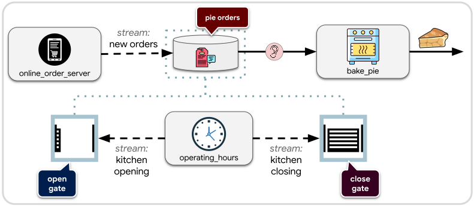
Any new orders that come in after closing hours will be placed in the buffer
instead of being sent to the kitchen. Once the kitchen opens, all the queued
orders will become visible to bake_pie service. While the kitchen is open, new
orders will be sent through immediately.
Note
Closing the gate of a buffer does not prevent new messages from being pushed into the buffer, but it will prevent join and listen operations from being aware of the push.
Inject
Warning
At the time of this writing, the inject operation is not yet available as a JSON diagram operation. This is being tracked by #59. In the meantime it can be put into a JSON diagram via the section builder operation.
Sometimes a single fixed workflow structure is not sufficient to define the behavior of a dynamic or intelligent system. A flexible state machine may need to decide its execution structure at runtime; perhaps the state machine itself needs to reconfigure its own execution structure during a state transition.
While crossflow does not support fully generalized reflection, it does support an inject operation that allows you to spawn a service at runtime and inject it into the node of a workflow from inside the workflow itself. The service that you spawn could itself be a workflow whose entire structure is decided by another service.
For example an ordinary path planning service might produce a simple path or trajectory for a controller to track, but a more intelligent path planning service might want to include instructions for how the robot should interact with other devices—such as doors, elevators, and other robots. A trajectory would not be sufficient to describe these interactions, but a runtime generated workflow would do the trick.
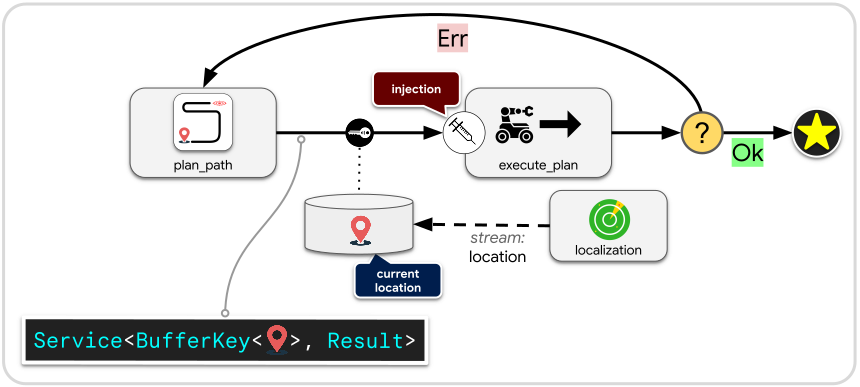
Instead of a trajectory message, the plan_path service will, itself, produce
a Service that it passes along as a message. That service will be
combined with a buffer key that gives access to the buffer that stores the
robot’s current location—which is what the generated service needs as an input
message—and then passed into the inject operation. From there, the inject
operation will pass the buffer key into the generated service and run it as if
it were a regular node in the workflow.
When the generated service finishes running it will produce a Result which is
Ok if the plan was successfully followed, otherwise an Err. In the Ok case
we simply terminate, while for an Err we will cycle back and ask for a new plan.
The new plan that gets generated after an Err could be a completely different
workflow than what previously ran, freshly generated to deal with the latest
circumstances.
In general the inject operation allows workflows to define state transitions that completely change the behavior of the state machine from transition to transition. In most cases this will be implemented in a two-tier structure with a fixed cyclical structure for the top-level state machine that dynamically generates and executes a lower-level state machine to define the evolving situational logic.
Collect
Warning
At the time of this writing, the collect operation is not yet available as a JSON diagram operation. This is being tracked by #59. In the meantime it can be put into a JSON diagram via the section builder operation.
Collect was already covered under synchronization, but it can also be considered a reflective operation. It creates a point in the workflow where no further progress will be made until all upstream activity has finished.
How to Build a Workflow
Note
This chapter will be about building workflows using the native Rust API. That means writing Rust code to build the workflow, which will be compiled and embeded in an application. If you are instead interested in building workflows using JSON diagrams, then you can skip ahead to the JSON Diagrams chapter.
Spawning
You can spawn a workflow anywhere that you can access Bevy Commands through the trait SpawnWorkflowExt. This can be done while setting up your application or during runtime.
This is an example of spawning an input/output (i/o) workflow—a workflow that doesn’t have any output streams, just one input message and one final output message:
let workflow: Service<Request, Response> = commands.spawn_io_workflow(
|scope: Scope<Request, Response>, builder: &mut Builder| {
builder.connect(scope.start, scope.terminate);
}
);Notice some key details:
- The output of
spawn_io_workflowis aService. This is what you will use to refer to the workflow after it has been spawned. - The input argument of
spawn_io_workflowis a closure. - The input arguments of the closure are a
Scopeand aBuilder. - The generic parameters of the
Scopematch those of theService. - The
Scopehas an input and a terminate field. These represent the input and output of the overall workflow, and therefore match the request and response type of theService. In this caseRequestandResponseare actually aliases of the same type. - The
Buildercan make a connection between an output and an input.
Very often the Rust compiler can infer the generic types of the service and scope, so the above example can usually be reduced to:
let workflow = commands.spawn_io_workflow(
|scope, builder| {
builder.connect(scope.start, scope.terminate);
}
);The spawn_io_workflow command exists to make this inference easy and concise.
When streams are used this kind of inference will not work as easily.
This will be discussed more in the Output Streams section.
In the meantime, move on to the next page to see how to put nodes into your workflow.
Creating a Node
Most of the useful work that happens inside a workflow is done by nodes. A node can be implemented by any provider. Providers will often be services—including blocking, async, and continuous services—but could also be callbacks or maps.
From a Service
Suppose we have a sum function defined to be a blocking service:
fn sum(srv: BlockingService<Vec<f32>>) -> f32 {
let mut sum = 0.0;
for value in srv.request {
sum += value;
}
sum
}We can spawn this as a service and then use it to create a node inside a workflow:
// Spawn a service that we can use inside a workflow
let service = commands.spawn_service(sum);
// Spawn a workflow and use the service inside it
let workflow = commands.spawn_io_workflow(
move |scope, builder| {
let node = builder.create_node(service);
builder.connect(scope.start, node.input);
builder.connect(node.output, scope.terminate);
}
);A few things to note:
- We spawn the service outside of the workflow and then use the
movekeyword to move it into the closure that builds the workflow. - We use Builder::create_node to create a workflow node that will run the
sumservice. - After the node is created, we can access its input through
node.inputand its output throughnode.output. builder.connect(ouput, input)will connect anOutputto anInputSlotscope.startis anOutputinside the scope that will fire off exactly one message per workflow session. That one message is the input message that was sent into the workflow. It gets fired off as soon as the workflow session begins.- By connecting
scope.starttonode.input, we are passing the input message of the workflow directly into the node. - To pass back the sum as the output of the workflow, we connect
node.outputtoscope.terminate. - As soon as any message is passed into
scope.terminate, all activity in the workflow will terminate, and the first message that was passed intoscope.terminatefor this session will be sent out of the workflow as the workflow’s output message.
- We don’t need to explicitly specify the
RequestandResponsetypes of the workflow because the compiler can infer those from the twobuilder.connect(_, _)calls.
Spawning a service inside workflow building closure
Recommended practice is to spawn services outside of the workflow building closure and then move them into the closure. This allows services to have greater reusability, as they could be copied into multiple different workflows. However if you do want to spawn the service from inside the workflow building closure, that option is available:
let workflow = commands.spawn_io_workflow(
move |scope, builder| {
// Spawn a service using the builder's commands
let service = builder.commands().spawn_service(sum);
// Create the node using the newly spawned service
let node = builder.create_node(service);
builder.connect(scope.start, node.input);
builder.connect(node.output, scope.terminate);
}
);From a Callback
Using a callback instead of a service looks much the same. The only difference is that callbacks don’t need to be spawned:
// Define a closure to perform a sum
let f = |Blocking { request, .. }: Blocking<Vec<f32>>| -> f32 {
request.into_iter().fold(0.0, |a, b| a + b)
};
// Convert the closure into a Callback
let callback = f.into_callback();
// Spawn a workflow and use the callback inside it
let workflow = commands.spawn_io_workflow(
move |scope, builder| {
let node = builder.create_node(callback);
builder.connect(scope.start, node.input);
builder.connect(node.output, scope.terminate);
}
);The fact that it was implemented as a callback instead of as a service makes no difference to the workflow builder.
It still gets created as a Node with InputSlot and Output types that match the Request and Response types, respectively, of the callback.
From a Map
Maps are an extremely common element in workflows. Their ability to perform quick data transformations makes them invaluable for bridging the gap between different services. They are common enough that crossflow provides two special APIs to make them easier to write:
create_map_block
A blocking map is a short-lived closure that performs a quick calculation or data transformation. These are very useful for adapting message types in-between services that are chained together.
To create a blocking map you can simply pass a closure into the Builder::create_map_block method:
let workflow = commands.spawn_io_workflow(
|scope, builder| {
let node = builder.create_map_block(|request: Vec<f32>| {
request.into_iter().fold(0.0, |a, b| a + b)
});
builder.connect(scope.start, node.input);
builder.connect(node.output, scope.terminate);
}
);You might notice that maps are often defined within the workflow building closure itself even though Services and Callbacks are usually created outside. This isn’t a requirement, but it is usually the most ergonomic way to add a map. Reusability is less of a concern with maps than it is for Services or Callbacks.
create_map_async
An async map is simply used to run a basic async function. Suppose you have an async function like:
async fn get_page_title(url: String) -> Option<String> {
let http_response = trpl::get(&url).await;
let response_text = http_response.text().await;
trpl::Html::parse(&response_text)
.select_first("title")
.map(|title| title.inner_html())
}You can use this async function as a map by simply passing its name into Builder::create_map_async:
let workflow = commands.spawn_io_workflow(
|scope, builder| {
let node = builder.create_map_async(get_page_title);
builder.connect(scope.start, node.input);
builder.connect(node.output, scope.terminate);
}
);Alternatively you can define the async map inline as a closure.
Just take note that Rust does not currently support async closures, so you will need your closure to return an async move { ... } block, like this:
let workflow = commands.spawn_io_workflow(
|scope, builder| {
let node = builder.create_map_async(|url: String| {
async move {
let http_response = trpl::get(&url).await;
let response_text = http_response.text().await;
trpl::Html::parse(&response_text)
.select_first("title")
.map(|title| title.inner_html())
}
});
builder.connect(scope.start, node.input);
builder.connect(node.output, scope.terminate);
}
);Chain
Creating a map through the Builder API is necessary if you need to connect multiple outputs into the same map node, but in most cases you’ll want to create a map that just transforms data as it passes from one operation to another.
A more convenient way to do that is with a Chain, discussed later.
Connecting Nodes
The examples on the previous page are completely trivial workflows. In each one we’re just starting the workflow, running one service (or provider), and then terminating the workflow with the output of the service. The real value of a workflow is being able to assemble multiple services together into something more complex.
Here is an example of creating two nodes and chaining them:
let workflow = commands.spawn_io_workflow(
|scope, builder| {
let sum_node = builder.create_map_block(|request: Vec<f32>| {
request.into_iter().fold(0.0, |a, b| a + b)
});
let double_node = builder.create_map_block(|request: f32| {
2.0 * request
});
builder.connect(scope.start, sum_node.input);
builder.connect(sum_node.output, double_node.input);
builder.connect(double_node.output, scope.terminate);
}
);A common pattern when building workflows is to declare the nodes or operations at the top and then connect them together below.
The above workflow still doesn’t accomplish anything that we couldn’t get from running a Series instead. It’s just a sequence of actions that feed into each other. What makes workflows interesting is their ability to branch, cycle, and flow freely through a directed graph structure.
Conditional Branching
One useful kind of control flow is conditional branching. Conditional branching is when the activity in a workflow reaches a “fork in the road” where a message must go down one branch or another but not both.
fork-result
Commonly used for error handling in workflows, the fork-result operation will take in Result messages and activate one of two branches—
the ok branch or the err branch—depending on whether the input message had an Ok or Err value.
let workflow: Service<Json, Result<SchemaV2, Error>> = commands.spawn_io_workflow(
|scope, builder| {
let parse_schema_v2 = builder.create_map_block(|request: Json| {
// Try parsing the JSON with Schema V2
serde_json::from_value::<SchemaV2>(request.clone())
// If an error happened, pass along the original request message
// so we can try parsing it with a different schema.
.map_err(|_| request)
});
let parse_schema_v1 = builder.create_map_block(|request: Json| {
// Try parsing the JSON with Schema V1 since V2 failed.
serde_json::from_value::<SchemaV1>(request)
// If the parsing was successful, upgrade the parsed value to
// SchemaV2.
.map(|value| value.upgrade_to_schema_v2())
});
let to_ok = builder.create_map_block(|request: SchemaV2| {
Ok(request)
});
// Create a fork-result operation. We get back a tuple whose first element
// is an InputSlot that lets us feed messages into the fork-result, and
// whose second element is a struct containing two fields: ok and err,
// each representing a different Output and therefore diverging branches
// in the workflow.
let (fork_result_input, fork_result) = builder.create_fork_result();
builder.connect(scope.start, parse_schema_v2.input);
builder.connect(parse_schema_v2.output, fork_result_input);
// If parsing SchemaV2 was successful, wrap it back in Ok and terminate
builder.connect(fork_result.ok, to_ok.input);
builder.connect(to_ok.output, scope.terminate);
// If we failed to parse the Json as SchemaV2 then try using SchemaV1 instead
builder.connect(fork_result.err, parse_schema_v1.input);
// If parsing SchemaV1 also fails then we have no more fallback, so just
// pass back the result, whether it was successful or failed.
builder.connect(parse_schema_v1.output, scope.terminate);
}
);Note how in this example both branches converge back to the same terminate operation.
fork-option
Another common branching operation is fork-option.
Similar to fork-result, this creates two branches.
One sends the value contained inside Some inputs while the other will produce a trigger () when the input value was None.
let workflow: Service<(), f32> = commands.spawn_io_workflow(
|scope, builder| {
let get_random = builder.create_map_block(|request: ()| {
// Generate some random number between 0.0 and 1.0
rand::random::<f32>()
});
let less_than_half = builder.create_map_block(|value: f32| {
if value < 0.5 {
Some(value)
} else {
None
}
});
// Create a fork-option operation. We get back a tuple whose first element
// is an InputSlot that lets us feed messages into the fork-option, and
// whose second element is a struct containing two fields: some and none,
// each representing a different Output and therefore diverging branches
// in the workflow.
let (fork_option_input, fork_option) = builder.create_fork_option();
// Chain the three operations together.
builder.connect(scope.start, get_random.input);
builder.connect(get_random.output, less_than_half.input);
builder.connect(less_than_half.output, fork_option_input);
// Trigger the randomizer again if the value was not less than one-half.
// This creates a cycle in the workflow.
builder.connect(fork_option.none, get_random.input);
// Terminate the workflow if it was less than one-half.
// The value produced by the randomizer will be the workflow's output.
builder.connect(fork_option.some, scope.terminate);
}
);Parallel Branches
Some kinds of forks result in parallel activity instead of conditionally activating branches. This is one of the most powerful features of workflows: being able to easily juggle large amounts of parallel activity.
racing
The fork-clone operation allows a message to be cloned and simultaneously activate multiple branches. Once activated, each branch will run independently and concurrently. This is useful if you have multiple separate concerns that need to be handled simultaneously.
Here is an example of a pick-and-place workflow where we have a parallel node that monitors the safety of the operation.
While the pick-and-place sequence is being executed, the emergency_stop service will watch the state of the workcell and issue an output if anything threatens the safety of the operation.
The pick-and-place operation and the emergency stop both connect to the terminate operation.
Whichever yields an output first will end the workflow. This is known as a race.
let workflow = commands.spawn_io_workflow(
|scope, builder| {
// Create nodes for performing a pick and place
let move_to_pick_pregrasp = builder.create_node(move_to_pick_pregrasp);
let grasp_item = builder.create_node(grasp_item);
let move_to_placement = builder.create_node(move_to_placement);
let release_item = builder.create_node(release_item);
// Also create a node that monitors whether an emergency stop is needed
let emergency_stop = builder.create_node(emergency_stop);
// Create a fork-clone operation. We get back a tuple whose first element
// is an InputSlot that lets us feed messages into the fork-clone, and
// whose second element is a struct that allows us to spawn outputs for
// the fork.
let (fork_clone_input, fork_clone) = builder.create_fork_clone();
// Send the scope input message to be cloned
builder.connect(scope.start, fork_clone_input);
// When the scope starts, begin moving the robot to the pregrasp pose
let cloned = fork_clone.clone_output(builder);
builder.connect(cloned, move_to_pick_pregrasp.input);
// When the scope starts, also start monitoring whether an emergency
// stop is needed. If this gets triggered it will terminate the workflow
// immediately.
let cloned = fork_clone.clone_output(builder);
builder.connect(cloned, emergency_stop.input);
// Connect the happy path together
builder.connect(move_to_pick_pregrasp.output, grasp_item.input);
builder.connect(grasp_item.output, move_to_placement.input);
builder.connect(move_to_placement.output, release_item.input);
builder.connect(release_item.output, scope.terminate);
// Connect the emergency stop to terminate
builder.connect(emergency_stop.output, scope.terminate);
}
);joining
Another way to use fork-clone is to activate parallel branches that each control a different agent. This is often done when a process needs two agents to work independently until they both reach a synchronization point is reached. In that case instead of racing the two branches we will join them.
Here is an example of a robot that needs to use an elevator. The robot will start moving to the elevator lobby, and at the same time we will run a branch that watches the robot’s progress. When the robot is close enough to the elevator lobby, we will summon the elevator to come pick up the robot. When the robot and elevator both arrive in the elevator lobby, we will have the robot use the elevator.
let workflow = commands.spawn_io_workflow(
|scope, builder| {
// Create nodes for moving the robot and summoning the elevator.
let move_robot_to_elevator = builder.create_node(move_robot_to_elevator);
let on_robot_near_elevator = builder.create_node(on_robot_near_elevator);
let send_elevator_to_level = builder.create_node(send_elevator_to_location);
let use_elevator = builder.create_node(use_elevator);
// Create a fork-clone operation. We get back a tuple whose first element
// is an InputSlot that lets us feed messages into the fork-clone, and
// whose second element is a struct that allows us to spawn outputs for
// the fork.
let (fork_clone_input, fork_clone) = builder.create_fork_clone();
// Send the scope input message to be cloned
builder.connect(scope.start, fork_clone_input);
// When the scope starts, begin sending the robot to the elevator
let cloned = fork_clone.clone_output(builder);
builder.connect(cloned, move_robot_to_elevator.input);
// When the scope starts, also start detecting whether the robot is
// near the elevator so we know when to summon the elevator
let cloned = fork_clone.clone_output(builder);
builder.connect(cloned, on_robot_near_elevator.input);
// When the robot has made it close enough to the elevator, begin
// summoning the elevator
builder.connect(on_robot_near_elevator.output, send_elevator_to_level.input);
// Create a join operation that will activate when the robot has reached
// the elevator lobby and the elevator has arrived on the correct floor.
let both_arrived = builder.join((
move_robot_to_elevator.output,
send_elevator_to_level.output,
))
.output();
// When the robot has reached the elevator lobby and the elevator has
// arived on the correct floor, have the robot use the elevator.
builder.connect(both_arrived, use_elevator.input);
// When the robot is done using the elevator, the workflow is finished.
builder.connect(use_elevator.output, scope.terminate);
}
);unzipping
It’s not often that a message can be trivially fed directly from the output of one service to the input of another service.
Most of the time the services that you want to connect to each other will have slight differences between the Response type that the first produces and the Request type that you’re trying to pass it along to.
If you have two or more parallel branches that expect different inputs from each other, fork-clone might not seem like a good fit because every branch will receive the same message.
We’ve seen how blocking maps can be used to perform quick data transforms. If we combine a blocking map with the unzip operation, we can perform parallel branching where a specific message is sent down each branch:
let workflow = commands.spawn_io_workflow(
|scope, builder| {
// Create ndoes for picking an item and moving to a pickup location
let pick_item = builder.create_node(pick_item);
let move_to_location = builder.create_node(move_to_location);
let hand_off_item = builder.create_node(hand_off_item);
// Create a blocking map to transform the workflow input data into two
// separate messages to send to two different branches.
//
// This returns a tuple with two elements. We will send each element to
// a different branch at the same time.
let transform_inputs = builder.create_map_block(|request: PickupTask| {
(
WorkcellTask {
workcell: request.workcell,
item: request.item,
},
MobileRobotTask {
vehicle: request.vehicle,
location: request.location,
}
)
});
// Create the unzip forking
let (unzip_input, unzip) = builder.create_unzip();
// Destructure the unzipped outputs
let (workcell_task, mobile_robot_task) = unzip;
// Synchronize when the workcell and mobile robot are both ready for the
// item to be handed off
let both_ready = builder.join((
pick_item.output,
move_to_location.output,
))
.output();
// Connect all the nodes
builder.connect(scope.start, transform_inputs.input);
builder.connect(transform_inputs.output, unzip_input);
builder.connect(workcell_task, pick_item.input);
builder.connect(mobile_robot_task, move_to_location.input);
builder.connect(both_ready, hand_off_item.input);
builder.connect(hand_off_item.output, scope.terminate);
}
);Building a Chain
Many workflows involve chaining services together rather than building complex graphs. The API examples on the previous page use the Builder API which is the most general API, able to build any kind of directed (cyclic) graph. However it is also maximally verbose, which—besides requiring more typing—can cause your workflow implementation to be scattered and difficult to follow.
We provide the Chain API as a streamlined alternative that suits cases where cycles aren’t needed. It allows you to build workflows by chaining methods together, a popular idiom in Rust. This can save typing time and also allows your code to express the structure of the workflow. Here we will recreate the workflows of the previous page, simplifying them using the Chain API.
simple sequence
Sequences of services can be chained together with a simple .then(_):
let workflow = commands.spawn_io_workflow(
|scope, builder| {
builder
.chain(scope.start)
.then(sum)
.then(double)
.connect(scope.terminate);
}
);A few notes about this example:
Builder::chain(input)allows us to begin creating a chain. In this case we begin the chain fromscope.start, but you can begin a chain from anyOutput.Chain::thensupports the same arguments asBuilder::create_node, meaning you can pass in Services or Callbacks.Chain::connecttakes in anInputSlotand ends the chain by feeding it into that input slot. This is useful for connecting the end of a chain into the terminate operation or looping it back to an earlier operation to create a cycle.
If you are dealing with maps and want to define in them inline when building the workflow, you can use Chain::map_block or Chain::map_async for that:
let workflow = commands.spawn_io_workflow(
|scope, builder| {
builder
.chain(scope.start)
.map_block(|request: Vec<f32>| {
request.into_iter().fold(0.0, |a, b| a + b)
})
.map_block(|request: f32| {
2.0 * request
})
.connect(scope.terminate);
}
);The Chain::map_block and Chain::map_async methods are just syntactic sugar around Chain::then that makes it easier to put maps into the chain.
You can interleave calls to .then, .map_block, and .map_async however you would like when creating a sequence of nodes.
recreating fork-result
The Chain::fork_result method allows you to create two diverging branches when an output message has a Result type.
It takes two closures as arguments, where each closure builds one of the diverging branches.
let workflow: Service<Json, Result<SchemaV2, Error>> = commands.spawn_io_workflow(
|scope, builder| {
builder
.chain(scope.start)
.map_block(|message: Json| {
// Try parsing the JSON with Schema V2
serde_json::from_value::<SchemaV2>(message.clone())
// If an error happened, pass along the original request message
// so we can try parsing it with a different schema.
.map_err(|_| message)
})
.fork_result(
|ok| {
// If ok, wrap the message in Ok and connect it to terminate
ok.map_block(|msg| Ok(msg)).connect(scope.terminate);
},
|err| {
err
.map_block(|message: Json| {
// Try parsing the JSON with Schema V1 since V2 failed.
serde_json::from_value::<SchemaV1>(message)
// If the parsing was successful, upgrade the parsed
// value to SchemaV2.
.map(|value| value.upgrade_to_schema_v2())
})
// End this branch by feeding it into the terminate operation
.connect(scope.terminate);
}
);
}
);The chain operation has special methods for certain message types that can further simplify how you express the chain.
For example the Result type gets access to Chain::branch_for_err that isolates the err branch of a fork-result and allows the rest of the chain to proceed with the ok branch:
let workflow: Service<Json, Result<SchemaV2, Error>> = commands.spawn_io_workflow(
|scope, builder| {
builder
.chain(scope.start)
.map_block(|request: Json| {
// Try parsing the JSON with Schema V2
serde_json::from_value::<SchemaV2>(request.clone())
// If an error happened, pass along the original request message
// so we can try parsing it with a different schema.
.map_err(|_| request)
})
// Create a branch that handles an Err value. This creates a
// fork-result under the hood.
.branch_for_err(|chain|
chain
.map_block(|request: Json| {
// Try parsing the JSON with Schema V1 since V2 failed.
serde_json::from_value::<SchemaV1>(request)
// If the parsing was successful, upgrade the parsed value to
// SchemaV2.
.map(|value| value.upgrade_to_schema_v2())
})
// End this branch by feeding it into the terminate operation
.connect(scope.terminate)
)
// Continue the original chain, but only for Ok values.
.map_block(|ok| Ok(ok))
.connect(scope.terminate);
}
);This is typically used if the error handling branch is relatively small while the ok branch continues on for a long time.
recreating fork-option
It’s less obvious how to create cycles when using chains, but it is still completely possible!
The key is to first create a Node so you can refer to the InputSlot later.
Here’s an example of creating a cycle using a chain:
let workflow: Service<(), f32> = commands.spawn_io_workflow(
|scope, builder| {
// Make a small chain that returns a Node. We need to create an explicit
// Node for get_random because we will need to refer to its InputSlot
// later to create a cycle.
let get_random: Node<(), f32> = builder
.chain(scope.start)
.map_block_node(|request: ()| rand::random::<f32>());
builder
.chain(get_random.output)
.map_block(|value: f32| {
if value < 0.5 {
Some(value)
} else {
None
}
})
// This creates a fork-option and sends None values back to the
// get_random node. This creates a cycle in the workflow.
.branch_for_none(|none| none.connect(get_random.input))
// As we continue the chain, only Some(T) values will reach this
// point, so the chain simplifies the Option<T> to just a T. We can
// now connect this directly to the terminate operation.
.connect(scope.terminate);
}
);A few notes about this example:
Chain::map_block_nodeis the same asChain::map_blockexcept it ends the chain and gives back the Node of the map, allowing you to reuse itsInputSlotand decide what to do with itsOutputlater. Each of the node chaining operations has a similar variant, e.g.Chain::map_async_nodeandChain::then_node.- Similar to
Chain::branch_for_errforResulttypes, there is also aChain::branch_for_noneforOptiontypes.
recreating racing
When you have diverging parallel branches, an easy way to create one of those branches is with a Chain::branch_clone.
You just pass in a closure that builds off a new chain that will be fed a clone of the original message.
The return value of branch_clone(_) will be a continuation of the original Chain that the branch_clone forked off of.
let workflow = commands.spawn_io_workflow(
|scope, builder| {
builder
.chain(scope.start)
.branch_clone(|chain|
// This is a parallel branch fed with a clone of the scope input.
chain
.then(emergency_stop)
.connect(scope.terminate)
)
// As we continue to build this chain, we are creating a branch that
// will run in parallel to the one defined inside of .branch_clone(_).
// This is where we'll define the happy path sequence of the
// pick-and-place routine.
.then(move_to_pick_pregrasp)
.then(grasp_item)
.then(move_to_placement)
.then(release_item)
.connect(scope.terminate);
}
);recreating joining
Chains even support synchronization operations like join. We can structure our fork-clone a bit differently than we did in the racing example to set it up for an easy join:
let workflow = commands.spawn_io_workflow(
|scope, builder| {
builder
.chain(scope.start)
.fork_clone((
|chain: Chain<_>| {
// This branch moves the robot to the elevator
chain
.then(move_robot_to_elevator)
.output()
},
|chain: Chain<_>| {
// This branch monitors the robot and then summons the lift
chain
.then(on_robot_near_elevator)
.then(send_elevator_to_location)
.output()
}
))
.join(builder)
.then(use_elevator)
.connect(scope.terminate);
}
);A few notes about this example:
Chain::fork_clonetakes in a tuple of any number of closures. Each closure takes aChain<T>as an input argument whereTis the message type of the original chain.- You will have to explicitly specify the
: Chain<_>type of the closure arguments. The Rust compiler cannot infer this automatically due to limitations in what Traits can express, but you can always use the_filler for the generic parameter of the chain. - The return value of
Chain::fork_clonewill be a tuple wrapping up all the return values of the closures. We have each closure end withChain::outputso we can gather up the plain outputs of all the branches into one tuple. - The join method can be applied to tuples of Outputs, allowing us to apply a join operation at the end of these branches to synchronize them.
- The join method gives back a chain of the joined value that we can continue to build off of.
There are many ways to use Chain to structure a workflow.
Sometimes you will find it more concise and intuitive, but other times you might find it messy and confusing.
You can mix and match uses of Chain with uses of Builder however you would like.
Ultimately both APIs boil down to InputSlots, Outputs, and Buffers (which will be covered later),
making these APIs fully interoperable. Use whichever allows your workflow to be as understandable as possible.
recreating unzipping
Chains can also create forks using the unzip operation and join them together ergonomically:
let workflow = commands.spawn_io_workflow(
|scope, builder| {
builder
.chain(scope.start)
.map_block(|request: PickupTask| {
(
WorkcellTask {
workcell: request.workcell,
item: request.item,
},
MobileRobotTask {
vehicle: request.vehicle,
location: request.location,
}
)
})
.fork_unzip((
|workcell_branch: Chain<_>| workcell_branch.then(pick_item).output(),
|amr_branch: Chain<_>| amr_branch.then(move_to_location).output(),
))
.join(builder)
.then(hand_off_item)
.connect(scope.terminate);
}
);Connecting Output Streams
Up until now all the examples of spawning a workflow have used spawn_io_workflow which spawns a service that takes in a single request and yields a single response with no output streams.
Just as services support output streams, so do workflows.
To stream messages out of your workflow while it is still running, you can use the stream out operation.
For starters, to stream out of a workflow you need to use the more general spawn_workflow method.
Unlike the Request and Response generic parameters, it is never possible for the Rust compiler to infer what type you want for the Streams generic parameter.
This is why the spawn_io_workflow exists: In cases where you don’t need to stream out of your workflow, all the generic parameters can usually be inferred.
The easiest way to specify the streams is to do it in the Scope.
The Request and Response parameters can still be inferred by putting a placeholder _ in for them:
let workflow = commands.spawn_workflow(
|scope: Scope<_, _, StreamOf<T>>, builder| {
/* ... */
}
);Single Stream
If you workflow has a single output stream, you can use the StreamOf<T> struct to have a stream that produces messages of type T.
Here is how the stream out conceptual example of slicing apples would be written with the native Rust API:
let workflow = commands.spawn_workflow(
|scope: Scope<_, _, StreamOf<AppleSlice>>, builder| {
// Create the service nodes that will be involved in chopping apples
let deposit_apples = builder.create_node(deposit_apples);
let try_take_apple = builder.create_node(try_take_apple);
let (have_apple_input, have_apple) = builder.create_fork_option();
let chop_apple = builder.create_node(chop_apple);
// Create a buffer to hold apples that are waiting to be chopped, and
// an operation to access that buffer.
let apple_buffer = builder.create_buffer(BufferSettings::keep_all());
let access_apple_buffer = builder.create_buffer_access(apple_buffer);
// Connect the scope input message to the deposit_apples service
builder.connect(scope.start, deposit_apples.input);
// Connect the stream of incoming apples to the apple buffer
builder.connect(deposit_apples.streams, apple_buffer.input_slot());
// When done depositing apples, start trying to take them by accessing
// the buffer
builder.connect(deposit_apples.output, access_apple_buffer.input);
builder.connect(access_apple_buffer.output, try_take_apple.input);
// Try to take an apple and check if we ran out
builder.connect(try_take_apple.output, have_apple_input);
// If there's another apple, send it to be chopped
builder.connect(have_apple.some, chop_apple.input);
// If there are no more apples, terminate the workflow
builder.connect(have_apple.none, scope.terminate);
// Stream the apple slices out of the scope, and then cycle back to
// taking another apple when the current one is finished.
builder.connect(chop_apple.streams, scope.streams);
builder.connect(chop_apple.output, access_apple_buffer.input);
}
);The workflow has a single stream output that produces AppleSlice objects.
You can also see how streams produced by the deposit_apples and chop_apple services are connected to other operations.
The Node struct has a streams field which, for these services, is a single Output, because the services are using StreamOf.
Stream Pack
If your workflow needs multiple stream outputs, you can use a custom StreamPack.
Here’s an example of a stream pack that might be provided by a navigation workflow:
#[derive(StreamPack)]
struct NavigationStreams {
log: String,
location: Vec2,
error: NavigationError,
}With that defined, we can emit multiple output streams from our workflow. Here is an example of a robot navigating through a doorway and streaming out information while it goes along:
// This service will have a mobile robot approach a door.
let approach_door = commands.spawn_service(
|srv: BlockingService<(), NavigationStreams>| {
srv.streams.log.send(String::from("approaching door"));
/* ... approach the door ... */
}
);
// open_door is not a navigation service so it will only have one
// output stream: log messages.
let open_door = commands.spawn_service(
|BlockingService { streams, .. }: BlockingService<(), StreamOf<String>>| {
streams.send(String::from("opening door"));
/* ... open the door ... */
}
);
// This service will have a mobile robot move through a door.
let move_through_door = commands.spawn_service(
|BlockingService { streams, .. }: BlockingService<(), NavigationStreams>| {
streams.log.send(String::from("moving through door"));
/* ... move through the door ... */
}
);
// This workflow will handle the whole process of moving a robot through a door,
// while streaming navigation and log information from all the services it runs.
let workflow = commands.spawn_workflow(
|scope: Scope<_, _, NavigationStreams>, builder| {
let approach_door = builder.create_node(approach_door);
let open_door = builder.create_node(open_door);
let move_through_door = builder.create_node(move_through_door);
// Connect nodes together
builder.connect(scope.start, approach_door.input);
builder.connect(approach_door.output, open_door.input);
builder.connect(open_door.output, move_through_door.input);
builder.connect(move_through_door.output, scope.terminate);
// Connect node streams to scope streams
builder.connect(approach_door.streams.log, scope.streams.log);
builder.connect(approach_door.streams.location, scope.streams.location);
builder.connect(approach_door.streams.error, scope.streams.error);
builder.connect(open_door.streams, scope.streams.log);
builder.connect(move_through_door.streams.log, scope.streams.log);
builder.connect(move_through_door.streams.location, scope.streams.location);
builder.connect(move_through_door.streams.error, scope.streams.error);
}
);Tip
In the above example we are connecting node stream outputs to the scope stream input slots, but this is an illustration, not a limitation. The fields in
Node::streamsare all regular Outputs that can be connected into anyInputSlot, and the fields inScope::streamsare regular InputSlots that can receive messages from anyOutput.
Using Buffers
Buffers are an important element of complex workflows. They are the key to both synchronizing parallel activity inside of a workflow and also tracking the overall state of the workflow.
Crossflow uses Bevy’s ECS to manage the data inside of buffers. This means if you want a node to directly access the data inside of a buffer you will need to implement the node with a service or a callback and use an accessor, which is explained on the next page.
joining
In an earlier example we saw how to join two branches by connecting their outputs with the Builder::join method.
In reality, joining two or more outputs is implemented by creating a buffer with default settings for each output and then performing the join operation on that set of buffers.
Tip
For a conceptual review of the different buffer and join settings, visit the Join Rates chapter.
The automatic conversion from Output to Buffer is great for ergonomics, especially when building chains, but it’s important to know how to explicitly create buffers when needed.
keep_all
Suppose we want to process batches of lidar data and camera data in order to perform localization. Each kind of data is processed at different rates, but there are pairs of data between the types that need to be bundled back together, like in this figure:
To set this up in a workflow, we can explicitly create each of the buffers with the keep_all setting as seen in this code example:
let workflow = commands.spawn_io_workflow(
|scope, builder| {
let lidar_buffer = builder.create_buffer(BufferSettings::keep_all());
let camera_buffer = builder.create_buffer(BufferSettings::keep_all());
let localization_data = builder.join(
LocalizationData::select_buffers(lidar_buffer, camera_buffer)
);
}
);The data from the buffers will be joined into LocalizationData, defined here:
#[derive(Joined)]
struct LocalizationData {
lidar: LidarData,
camera: CameraData,
}Notice that LocalizationData has derived the Joined trait which allows it to be an output of the join operation.
Deriving Joined also implements the select_buffers method for the struct, allowing you to easily set the buffer that will feed into each field.
fetch-by-clone
By default the join operation will always pull messages out of their buffers once all the buffers are ready to be joined. In some cases you may want to clone one of the messages out instead of pulling it. For example, here we want to stamp each camera image with whatever last reported location the robot had:
Since keep_last: 1 is the default buffer setting, we can just use BufferSettings::default() when creating the buffers.
What we need to do differently is apply .join_by_cloning() to the location_buffer when creating the join operation:
let workflow = commands.spawn_io_workflow(
|scope, builder| {
let location_buffer = builder.create_buffer(BufferSettings::default());
let camera_buffer = builder.create_buffer(BufferSettings::default());
let image_stamped = builder.join(ImageStamped::select_buffers(
// Use .join_by_cloning() to have the location data cloned instead
// of pulled for each join operation.
location_buffer.join_by_cloning(),
camera_buffer,
));
}
);Note
The
.join_by_cloning()method can be used on any buffer whose message type implements theClonetrait. The choice to clone instead of pull is made per buffer in each join operation that gets created. The same buffer can take part in multiple join operations with different clone/pull settings for each of those joins.
Using an Accessor
Buffers can act similar to the “blackboard” concept in behavior trees—a repository of data shared across the different services in your workflow. To achieve thread-safe high-performance access to buffer data, we rely on Bevy’s ECS.
Buffers are implemented as entities with certain components attached.
This means their data is stored in Bevy’s highly optimized memory management system, that can automatically provide safe parallel access if you use continuous services.
The catch is, to access that data you need to use services or callbacks which can support system parameters.
In particular you need to use the BufferAccess system parameter for read-only parallelizable access, or BufferAccessMut for exclusive read/write access.
Note
Maps cannot access buffer data. In general maps cannot use system parameters, making them slightly more efficient than services or callbacks, but leaving them unable to do as much.
With Access
To grant a service access to a buffer, you must provide it with a BufferKey.
The two typical ways to obtain a buffer key are through the listen operation or the buffer access operation.
- The listen operation will send out a message containing one or more buffer keys when the buffers attached to it are modified.
- The buffer access operation will append a buffer key to a message that’s in flight from one node to another.
The important thing is that a BufferKey is somehow present inside the message data that gets passed into the service.
The following example shows the Chain::with_access method adding a buffer key to messages that are being passed into some services.
It also shows how those services use BufferAccess and BufferAccessMut to view and modify the contents of a buffer.
use crossflow::{prelude::*, testing::*};
/// Use mutable access (BufferAccessMut) to push values into a buffer. The
/// values are guaranteed to be present in the buffer before this service
/// finishes running. Therefore any service that accesses the buffer after this
/// service finishes is guaranteed to find the values present inside.
fn push_values(
Blocking { request: (data, key), id, .. }: Blocking<(Vec<i32>, BufferKey<i32>)>,
mut access: BufferAccessMut<i32>,
) {
let Ok(mut access) = access.get_mut(id, &key) else {
return;
};
for value in data {
access.push(value);
}
}
/// Use read-only access (BufferAccess) to look through the values in the
/// buffer. We pick out the largest value and clone it to pass it along. This
/// read-only access cannot pull or modify the data inside the buffer in any
/// way, it can only view and clone (if the data is cloneable) from the buffer.
fn get_largest_value(
Blocking { request, id, .. }: Blocking<((), BufferKey<i32>)>,
mut access: BufferAccess<i32>,
) -> Option<i32> {
let access = access.get(id, &request.1).ok()?;
access.iter().max().cloned()
}
let mut context = TestingContext::minimal_plugins();
let workflow = context.spawn_io_workflow(|scope, builder| {
let buffer = builder.create_buffer(BufferSettings::keep_all());
builder
.chain(scope.start)
.with_access(buffer)
.then(push_values.into_callback())
.with_access(buffer)
.then(get_largest_value.into_callback())
.connect(scope.terminate);
});
let mut outcome = context.command(|commands| {
commands.request(vec![-3, 2, 10], workflow).outcome()
});
context.run_with_conditions(&mut outcome, Duration::from_secs(1));
let r = outcome.try_recv().unwrap().unwrap();
assert_eq!(r, Some(10));Listen
The buffer access operation (with_access) only gets activated when a message is emitted by some operation output. To monitor the contents of one or more buffers directly, you need to use listen. The listen operation connects to one or more buffers and gets activated any time a modification is made to the contents of any one of the buffers connected to it.
When listen is activated, is passes along an accessor as a message. Unlike the buffer access operation, the message produced by a listener is nothing but a collection of buffer keys. For the listen operation to be useful, you need to send its message to a service that will do something with those keys.
The following code example recreates a simple intersection crossing workflow:
/// Derive the Accessor trait so this struct of keys can be constructed by the
/// listen operation. Note that Accessor also requires Clone to be defined.
#[derive(Accessor, Clone)]
struct IntersectionKeys {
signal: BufferKey<TrafficSignal>,
arrival: BufferKey<[f32; 2]>,
}
/// Define a device that evaluates whether or not the robot should proceed
/// across the intersection.
fn proceed_or_stop(
Blocking { request: keys, id, .. }: Blocking<IntersectionKeys>,
mut signal_access: BufferAccess<TrafficSignal>,
mut arrival_access: BufferAccessMut<[f32; 2]>,
) -> Option<RobotCommand> {
let signal_buffer = signal_access.get(id, &keys.signal).ok()?;
let mut arrival_buffer = arrival_access.get_mut(id, &keys.arrival).ok()?;
// Get a reference to the newest message if one is available
let signal = signal_buffer.newest()?;
// Pull the value from this buffer is one is available
let arrived = arrival_buffer.pull()?;
match signal {
TrafficSignal::Green => Some(RobotCommand::Go),
TrafficSignal::Red => Some(RobotCommand::Stop),
}
}
let workflow = commands.spawn_io_workflow(
|scope, builder| {
// Create buffers to store the two state variables:
// * what the current traffic signal is
// * whether the robot has reached the intersection
let signal = builder.create_buffer(Default::default());
let arrived = builder.create_buffer(Default::default());
// Create services to update the two state variables
let traffic_signal_service = builder.create_node(traffic_signal_service);
let approach_intersection = builder.create_node(approach_intersection);
// Activate both of the state update services at startup
builder
.chain(scope.start)
.fork_clone((
|chain: Chain<_>| chain.connect(traffic_signal_service.input),
|chain: Chain<_>| chain.connect(approach_intersection.input),
));
// Connect the services to their respective buffers. For the traffic
// signal we connect its stream, because the signal will be changing
// over time. For the arrival state we connect the output of the
// approach_intersection service because the robot will only ever
// approach the intersection once.
builder.connect(traffic_signal_service.streams, signal.input_slot());
builder.connect(approach_intersection.output, arrived.input_slot());
builder
// Create a listen operation that will activate whenever either the
// traffic signal or arrival buffer has an update
.listen(IntersectionKeys::select_buffers(signal, arrived))
// When an update happens, provide both buffer keys to a node that
// will evaluate if the robot is ready to cross
.then(proceed_or_stop.into_callback())
// If no decision can be made yet (e.g. one of the buffers is
// unavailable) then just dispose this message
.dispose_on_none()
// If a decision was made, send a command to the robot
.then(send_robot_command)
// The previous service will return None if the command was to stop.
// If the command was to go, then it will return Some after the robot
// finishes crossing the intersection.
.dispose_on_none()
// Terminate when the robot has finished crossing.
.connect(scope.terminate);
}
);Gate
Besides being able to access the data in buffers, you can also use a buffer key to open and close the gate of the buffer. When a the gate of a buffer is closed, listeners will not be notified when the content of the buffer gets modified. However this does not prevent the buffer from being accessed by any services that have a key for it.
Note
Closing a buffer gate has no effect on the buffer access operation.
fn manage_opening_time(
Blocking { request: (time, key), id, .. }: Blocking<(SystemTime, BufferKey<Order>)>,
mut gate: BufferGateAccessMut,
hours: Res<WorkingHours>,
) {
let Ok(mut gate) = gate.get_mut(id, key) else {
return;
};
if time < hours.open || hours.close < time {
gate.close_gate();
} else {
gate.open_gate();
}
}Workflow Setings
In general, services allow you to specify delivery settings which affect whether the service can run in parallel across one or more sessions, or whether the service can only be run once at a time across all sessions. There are also scope settings which determine whether a given scope is “interruptible”, meaning it cannot be cancelled from the outside—only an internal cancellation or successful termination can end the scope session.
Both of these settings are relevant to a workflow.
A workflow is ultimately a service, and therefore supports delivery settings.
A workflow has a root scope, and that root scope can have scope settings.
Both of these types of settings are bundled into WorkflowSettings.
For blocking, async, and continuous services, you would set delivery instructions via the ServiceBuilder API, which allows you to chain .serial() or .parallel() onto the service name while spawning it.
Instead of this chaining approach, workflows allow you to specify their settings by returning one of these from the closure that you use to spawn the workflow:
WorkflowSettings: Specify all the workflow settings that you want.DeliverySettings: Specify the delivery settings and use the default scope settings (interruptible).ScopeSettings: Specify the scope settings and use the default delivery settings (parallel).(): Use the default delivery settings (parallel) and scope settings (interruptible). This is what your closure will return if you don’t explicitly return anything.
Here are examples of each:
WorkflowSettings
let workflow = commands.spawn_io_workflow(
|scope, builder| {
builder.connect(scope.start, scope.terminate);
// Return explicit workflow settings.
WorkflowSettings::new()
.uninterruptible()
.with_delivery(DeliverySettings::Serial)
}
);DeliverySettings
let workflow = commands.spawn_io_workflow(
|scope, builder| {
builder.connect(scope.start, scope.terminate);
// Return explicit delivery settings.
// The scope settings will be the default (interruptible).
DeliverySettings::Serial
}
);ScopeSettings
let workflow = commands.spawn_io_workflow(
|scope, builder| {
builder.connect(scope.start, scope.terminate);
// Return explicit scope settings.
// The delivery settings will be the default (parallel).
ScopeSettings::uninterruptible()
}
);Default
let workflow = commands.spawn_io_workflow(
|scope, builder| {
builder.connect(scope.start, scope.terminate);
// Simply don't return anything from the closure
// to get the default workflow settings.
}
);Nested Scope
When you use the scope operation inside of a workflow, that nested scope can have its own scope settings, independent from the rest of the workflow. This allows you to set specific clusters of operations as uninterruptible.
let workflow = commands.spawn_io_workflow(
|scope, builder| {
builder
.chain(scope.start)
.then_io_scope(
|scope, builder| {
builder.connect(scope.start, scope.terminate);
// Set only this nested scope to be uninterruptible.
ScopeSettings::uninterruptible()
}
)
.connect(scope.terminate);
}
);JSON Diagrams
The Rust API for building workflows is a good choice for embedding workflows natively into applications, especially Bevy-based applications. The Rust compiler will do a lot of heavy lifting to ensure the connections between your operations are compatible and that your workflow is being built correctly.
Another powerful feature of crossflow is to dynamically build an executable workflow from a JSON Diagram at runtime. These JSON diagrams can be hand-written by GUI tools or generated by automatic planners. Then the diagrams can be sent to an executor to be run.
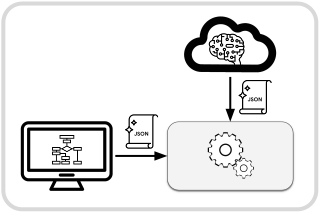
This chapter will explain the syntax of Crossflow JSON Diagrams and how to put together an executor.
To enable the diagram feature, remember to enable the diagram feature of crossflow:
# Cargo.toml
[dependencies]
crossflow = { version = "*", features = ["diagram"] }
Diagram Syntax
Crossflow’s JSON diagrams have a schema that’s meant to balance human and machine readability. The schema is freely available, enabling developers to validate diagrams and ensure correctness in their tools.
The schema is automatically generated from the Rust-native structs inside of crossflow. The library schemars is used for the generation. Whenever crossflow code is changed in a way that could affect the schema, the schema can be updated inside the crossflow repo by running
cargo run -F=diagram generate_schema
If the generated schema is ever out of date with the structs inside the library, an automated test in the crossflow repo will catch this if you run
cargo test -F=diagram
Diagram
The root of the crossflow diagram schema is the Diagram struct. Below is a minimal example of a diagram that works with the calculator demo:
{
"$schema": "https://raw.githubusercontent.com/open-rmf/crossflow/refs/heads/main/diagram.schema.json",
"version": "0.1.0",
"description": "Basic workflow that multiplies the interger input by 3.",
"input_examples": [
{
"description": "Multiply 123 by 3 to get 369",
"value": "123"
},
{
"description": "Multiply 456 by 3 to get 1368",
"value": "456"
}
],
"start": "mul3",
"ops": {
"mul3": {
"type": "node",
"builder": "mul",
"config": 3,
"next": { "builtin": "terminate" }
}
}
}
Here’s a breakdown of the fields in the example:
"$schema"is an optional field that simply helps some JSON-related tools to validate the rest of the file. This is not a built-in part of the crossflow diagram schema, but may be helpful to include."version"prevents mistakes that may happen as the schema progresses over time."start"indicates which operation in the diagram to send the input of the workflow to. The operation named here can be thought of as the starting point of the workflow."ops"is a dictionary of the operations and buffers present in the workflow. The connections between these operations are specified inside the operation definitions.
Operations
Inside the "ops" field is a dictionary of the operations that exist in the workflow.
Each key is a unique identifier for an operation instance in the workflow.
The value of each dictionary entry is the definition of the operation instance.
The unique identifier (key) is used to refer to the operation instance in other parts of the diagram.
For example, "start": "mul3" above indicates that the workflow starts from the operation in "ops" whose key is "mul3".
Here is an example of chaining operations together:
{
"version": "0.1.0",
"start": "mul3",
"ops": {
"mul3": {
"type": "node",
"builder": "mul",
"config": 3,
"next": "minus_1"
},
"minus_1": {
"type": "node",
"builder": "sub",
"config": 1,
"next": { "builtin": "terminate" }
}
}
}
The workflow starts at "mul3" and then "mul3" has a "next" field that says to pass its output to "minus_1".
Inside "minus_1" the "next" field refers to { "builtin": "terminate" }.
When you see { "builtin": _ }, that’s a reference to a builtin target, explained below.
Builtin Targets
Builtin targets are operation targets that are always available to pass outputs to without being instantiated in an "ops" dictionary.
They are referred to with a JSON object syntax that looks like { "builtin": _ } where _ is one of the builtin targets:
"terminate": Use the output to terminate the current scope. The value passed into this operation will be the return value of the scope."dispose": Dispose of the output. This is used to explicitly indicate that you are okay with an output not being passed along to any operation—instead its messages will just be dropped after they are sent out. The diagram schema assumes that unconnected outputs are likely to be a mistake, similar to an unused variable in source code. The dispose operation essentially says that you are intentionally not using the output."cancel": Use the output to cancel the current scope. If the message can be converted to a string then its string representation will be included in the cancellation error message.
Instantiated Operations
The operations instantiated inside of "ops" are instantiated specifically for the diagram.
Each instance has its own configuration based on what type of operation it is.
The supported diagram operations are encompassed by the DiagramOperation enum.
Each variant of that enum represents a different type of operation.
The schema for an operation is internally tagged, meaning they all take on this form:
{
"type": "_",
...
}
where "_" should be replaced by the operation variant name in snake-case lettering.
For example a DiagramOperation::ForkClone operation would contain
{
"type": "fork_clone",
...
}
whereas a DiagramOperation::Node operation would contain
{
"type": "node",
...
}
The rest of the fields in the operation are based on the specific schema of the operation type.
“fork_clone”
The schema of a "fork_clone" operation is given by ForkCloneSchema, which simply contains a next: Vec<NextOperation> that indicates which operations to pass clones of the input message to.
That might look something like
{
"type": "fork_clone",
"next": ["foo", "bar", "baz"]
}
“node”
On the other hand the schema of a "node" operation is given by NodeSchema.
This is a more complex operation schema that contains several significant fields:
"builder"is the unique name of a Node Builder that has been registered with your workflow executor. Node builders will be covered later in the Nodes page."config"is a configuration for this operation instance. The value associated with"config"has a dynamic schema determined by the"builder"that you chose. That schema can be looked up in the diagram element registry described in the next page."next"indicates where the final output message of the operation should be sent. This is a required field because we generally assume that the output of a node is valuable information that should be passed along. If you are running a node for its side-effects and don’t need to use its final output then you can set"next"to{ "builtin": "dispose" }."stream_out"is a dictionary that says what target each output stream of the node should be connected to. This field is optional—even if your node has streams, you don’t have to connect them anywhere. If you don’t need to connect any streams, you can leave this field out. If you only need to connect some streams, you can fill in this field and only include entries for the streams you care about.
A node instance might look like
{
"type": "node",
"builder": "chop_apple",
"config": {
"slice_count": 6
},
"next": "try_take_apple",
"stream_out": {
"slices": "apple_slice_buffer"
}
}
Trace Settings
All operation types include TraceSettings fields which determine how the operation gets viewed in an editor or visualizer.
There are currently three trace settings fields:
display_textsays how the name of the operation should be portrayed when the operation is visualized. Unlike the operation’s key in the"ops"dictionary, this display text does not need to be unique across the operations.tracelets you toggle whether this specific operation will be traced. An operation whose trace setting is"on"will emit a signal whenever it produces a message. When set to"messages"the message data will be serialized and included in the trace signal each time. If you skip this field, the operation will follow the default trace setting at the diagram level.extensionsallows you to put thirdparty extension data into each operation. This can be used for adding editor-specific metadata such as the position where an operation should be rendered or how an operation should be displayed (e.g. color, icons, etc). The Diagram schema also has anextensionsfield for diagram-wide extensions.
These fields are flattened into the operation definition, so you would put them directly inside the operation definition, like this:
{
"type": "node",
"builder": "chop_apple",
"config": {
"slice_count": 6
},
"next": "try_take_apple",
"stream_out": {
"slices": "apple_slice_buffer"
},
"display_text": "Chop Apple",
"trace": "messages"
}
Type Inference
You’ll notice that none of the schemas in a diagram specify any input or output message types. The workflow builder has the ability to infer what message types need to pass between operations. This is inferred from registered node and section builder information which have fixed message types.
Note
There are some niche cases where buffer message types can’t be automatically inferred. We might allow message types to be explicitly set for buffers. This is being tracked by #60.
Serialization / Deserialization
When a message type M is serializable, the workflow builder will automatically insert a conversion from M to JsonMessage when an output of M is connected to an input slot of JsonMessage:
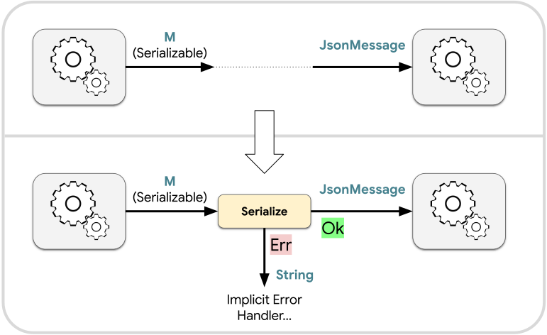
Similarly when a JsonMessage output is connected to an input slot expecting a deserializable message M, the workflow builder will automatically insert a conversion from JsonMessage to M:
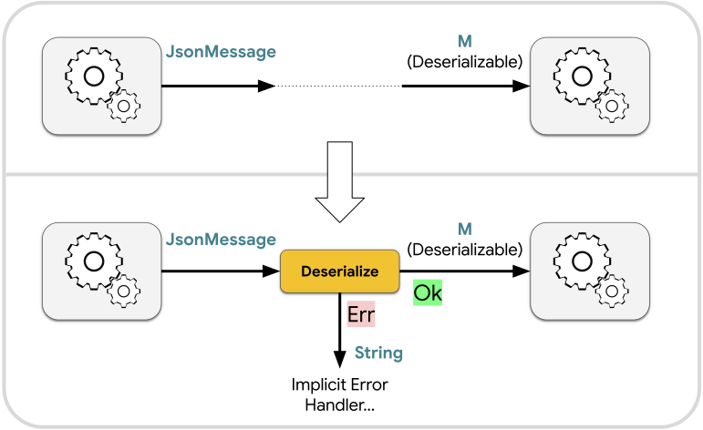
In both cases there is a risk that the serialization or deserialization will fail.
This is especially a concern for deserialization, since there is a wide space of JsonMessage values that cannot be successfully deserialized into an arbitrary data type M.
There are significantly fewer ways in which serialization can fail, but the possibility does still exist.
For both automatic serialization and deserialization, we call the failure case an implicit error.
Implicit Errors
Implicit errors are error-related outputs that were not explicitly created by the user but which may occur because of unexpected circumstances. They can be thought of as similar to exceptions from conventional programming. The implicit serialize and implicit deserialize operations are examples of places where implicit errors may be produced.
The diagram schema provides an on_implicit_error hook that lets you specify what should be done with implicit errors.
Similarly the scope operation schema also provides on_implicit_error.
You can set these fields to a valid input slot within the scope, or to a builtin target.
Implicit error handling is managed per scope, so the on_implicit_error of a parent scope has no effect on its nested scopes.
If on_implicit_error for a scope is not set to anything, then the default behavior is to trigger cancellation.
In the case of implicit serialization or deserialization, the serialization/deserialization failure message will be stringified and passed along as the cancellation message.
Some operations that can produce errors will automatically connect their errors to the on_implicit_error handler if you don’t specify what should be done with it.
For example the Transform schema has an optional on_error field.
Setting that field will pass transformation errors along to whichever target you specify, but leaving it unset will cause the Transform operation to connect its errors to the implicit error handler of the current scope.
Execution
Crossflow is first and foremost a library to facilitate the execution of workflows, so there is not a single canonical way for JSON diagrams to be executed. However, there are certain requirements to meet and recommended code paths to follow for an application to be effective at executing diagrams.
Just like when workflows are built the native Rust API, a crossflow JSON diagram executor needs to be built as part of a Bevy App. You can either make a Bevy app that is entirely dedicated to executing JSON diagrams, or you can make the execution of JSON diagrams simply one feature within a broader app. In order for your app to execute diagrams, you will need to create a system that can receive JSON diagrams, build the diagrams into executable workflows, and then run those workflows.
The most important piece to understand when implementing an executor app is the DiagramElementRegistry.
The registry stores “builders” that allow the operations ("ops") within a JSON diagram to be translated into workflow elements that can actually be executed.
There are three types of registrations present in the registry:
- Message registration stores information about the message types supported by the executor, including what operations can be performed on the message type and how to perform it.
- Node builder registration stores the Node Builders that allow
"type": "node"operations in a diagram to be built into workflow nodes. This registration also stores the schema of the"config"field for each unique"builder"ID. - Section builder registration is similar to the node builder registration, except it stores information on Section Builders.
Creating a registry
Initializing a registry is simple:
use crossflow::prelude::*;
let mut registry = DiagramElementRegistry::new();This will create a new registry that only contains registrations for the the “builtin” message types:
- Rust primitive types
StringJsonMessage
You’ll notice that we declared mut registry as mutable in the above code snippet.
This is because the registry isn’t very useful until you start registering your own node builders.
Without any node builders, your executor will only be able to build workflows that exclusively use the builtin message types listed above and the basic builtin operations.
Registering a node builder will allow you to build workflows that use custom services.
Use DiagramElementRegistry::register_node_builder as shown below to register a new node builder.
registry.register_node_builder(
NodeBuilderOptions::new("add"),
|builder, config: f32| {
builder.create_map_block(move |request: f32| {
request + config
})
}
);Node builders are covered in more detail on the next page.
Tip
When you register a node builder, you will also automatically register any input and output messages types needed by the node builder.
Building workflows with a registry
Once you’ve registered all the builders that your executor needs, you can start building workflows from diagrams.
Simply create a valid Diagram instance and then call Diagram::spawn_io_workflow:
use serde_json::json;
let diagram_json = json!(
{
"version": "0.1.0",
"start": "add_5",
"ops": {
"add_5": {
"type": "node",
"builder": "add",
"config": 5,
"next": { "builtin": "terminate" }
}
}
}
);
let diagram = Diagram::from_json(diagram_json).unwrap();
let workflow = diagram.spawn_io_workflow(&mut commands, ®istry).unwrap();Note
In the above example,
commandsis aCommandsinstance. Typically you will need to create a Bevy system that receives JSON diagrams and builds them into workflows.
Executing built workflows
Once you’ve used the Diagram and registry to build the workflow, you will be holding a Service that you can execute.
From there you can follow the same guidance in How to Run a Service or How to Run a Series.
Tip
To build the service and execute the workflow, your executor application will need to know the input and output message types of the diagram at compile time.
In most cases you can’t expect all incoming diagrams to have the exact same input and output message types as each other, so instead you can use
JsonMessageas both the input and output message types (RequestandResponse) of all diagrams.As long as the actual input and output message types of the diagrams are deserializable and serializable (respectively), the workflow builder can convert to/from
JsonMessageto run the workflow and receive its response.
Premade Executor
If you would like to get started with executing crossflow diagrams with minimal effort, you can use the crossflow-diagram-editor library to quickly make a basic executor.
The calculator example shows how to use the crossflow-diagram-editor to create a workflow executor that provides simple calculator operations.
For your own custom executor, you can replace the calculator node builders with your own more useful node builders.
use crossflow_diagram_editor::basic_executor::{self, DiagramElementRegistry, Error};
fn main() -> Result<(), Box<dyn Error>> {
// Create a new regsitry with the default message types pre-registered.
let mut registry = DiagramElementRegistry::new();
// Register calculator-inspired node builders from the calculator_ops_catalog library.
calculator_ops_catalog::register(&mut registry);
// Run the basic executor
basic_executor::run(registry)
}Nodes
You will typically need to supply your registry with node builders in order to execute any useful JSON diagrams. The registry will maintain a dictionary of the node builders that you give to it. When a diagram is built into a workflow, the registered node builders will be used to construct the workflow.
This page will teach you all the details of how to register node builders.
Node Builder Options
Each time you register a node builder you will need to set its NodeBuilderOptions.
The only required field in NodeBuilderOptions is the id:
let options = NodeBuilderOptions::new("multiply_by");Display Text
This ID must be unique for each node builder added to the registry. Registering a second node builder with the same ID as an earlier one will remove the earlier one from the registry.
When you only provide the ID, graphical editors will typically use that ID as display text for its associated nodes when visualizing a diagram. This isn’t always a good idea since the unique ID could be an unintelligible UUID, or it could be mangled with namespaces or version numbers. Instead you can add a default display text to the node builder options:
let options = NodeBuilderOptions::new("multiply_by")
.with_default_display_text("Multiply By");The diagram element registry can be serialized into JSON and exported from the executor. The serialized registry data can be provided to a diagram editor or visualization frontend, which can then look up the display text and render it to the user.
Description
When someone is manually editing or viewing a workflow diagram, the purpose of a node might not be obvious from the ID or the display text. Therefore your node builder options can also include a description for the nodes that will be built:
let description = "Multiply the input value by the configured value.";
let options = NodeBuilderOptions::new("multiply_by")
.with_default_display_text("Multiply By")
.with_description(description);Similar to the display text, the description will be included in the serialized registry, allowing diagram editors or visualizers to render the description for each node.
Closure
Along with the node builder options, you need to provide a closure when registering a node builder.
The closure is what does the heavy lifting of creating the node for the workflow.
It will be provided with two arguments: a &mut Builder and a config.
The Builder API allows your closure to create any kind of node.
You can use it to call create_map_block or create_map_async for simple functions.
For services or callbacks you can call create_node.
If you need to spawn a service within the closure, you can use Builder::commands to get a &mut Commands.
Just keep in mind that services do not get automatically despawned when no longer used, so you should avoid spawning a new service for each node that gets created.
Unless you do something to periodically clean up those services, you could end up with an arbitrarily growing number of services in your executor.
Tip
The closure is expected to be
FnMut, which means you can cache data inside of it that can be reused or updated each time the closure gets run.
The return type of your closure must be Node<Request, Response, Streams>.
That happens to be the return type of create_map_block, create_map_async, and create_node, so your entire closure could be as simple as calling one of those methods on Builder:
registry.register_node_builder(
NodeBuilderOptions::new("add"),
|builder, config: f32| {
builder.create_map_block(move |request: f32| {
request + config
})
}
);The Request, Response, and Streams of the Node that you return will be automatically detected by the registry.
They will be recorded as the input, output, and stream message types for nodes created by your node builder.
Technically the closure is not limited to only creating a single node.
You could have the closure additionally create buffers or anything else, as long as the final return value is a Node.
But it falls on you to ensure that the connected collection of elements that your closure builds can operate similar to a node, or else it may inflict confusing behavior on users and visualization tools.
Tip
If you need to generate something more complex than a simple
Node, consider registering a section builder instead.
Config
Each node builder can decide on its own config data structure.
This config will be the second argument passed to the closure.
In the earlier example the config data structure is a simple floating point value, f32.
Any type that implements Deserialize and JsonSchema can be used as a config type.
For complex node configurations, you can define your own custom struct and derive the necessary traits:
/// A custom node builder config for a greeting node
#[derive(Deserialize, JsonSchema)]
struct GreetConfig {
/// How should the person be greeted?
greeting: String,
/// Should the greeting be printed out?
print: bool,
}
registry.register_node_builder(
NodeBuilderOptions::new("greet"),
|builder, config: GreetConfig| {
let GreetConfig { greeting, print } = config;
builder.create_map_block(
move |name: String| {
let message = format!("{greeting}{name}");
if print {
println!("{message}");
}
message
}
)
}
);Deriving JsonSchema for the config type allows us to save a schema for the config in the registry.
This helps graphical editing tools and diagram generation tools to ensure that all the nodes have valid configurations.
You could even auto-generate UIs tailored to the config of each node builder.
Tip
If your node builder doesn’t need any
configinformation then just use the unit-type()as the config type.
Examples
Despite being provided with a config schema, human users may still struggle to figure out how to correctly configure a node to get what they want out of it. To mitigate this problem, you can provide example configurations in your node builder options:
use crossflow::{prelude::*, ConfigExample};
use serde::{Serialize, Deserialize};
/// A custom node builder config for a greeting node
#[derive(Serialize, Deserialize, JsonSchema)]
struct GreetConfig {
/// How should the person be greeted?
greeting: String,
/// Should the greeting be printed out?
print: bool,
}
let examples = vec![
ConfigExample::new(
"Say hello and print the message",
GreetConfig {
greeting: String::from("Hello, "),
print: true,
}
),
ConfigExample::new(
"Say guten tag and do not print the message",
GreetConfig {
greeting: String::from("Guten tag "),
print: false,
}
),
];
registry.register_node_builder(
NodeBuilderOptions::new("greet")
.with_description("Turn a name into a greeting")
.with_config_examples(examples),
|builder, config: GreetConfig| {
let GreetConfig { greeting, print } = config;
builder.create_map_block(
move |name: String| {
let message = format!("{greeting}{name}");
if print {
println!("{message}");
}
message
}
)
}
);Crossflow graphical editing tools are encouraged to make these examples visible to users, and allow users to copy/paste the examples.
Tip
If you want something more flexible than a static struct for your config, you can always just use
JsonMessageas the config type. Just be sure to include comprehensive examples so human users know what a valid config would be.
Fallible
There might be cases where a node builder cannot successfully build a node.
Maybe there is a semantic error in the config (even though the parsing was successful), or maybe some resource needed by the builder has become unavailable.
The node builder API above assumes that building the node will always be successful. To allow the node building to fail, you can use the fallible API instead:
use anyhow::anyhow;
registry.register_node_builder_fallible(
NodeBuilderOptions::new("divide_by"),
|builder, config: f64| {
if config == 0.0 {
return Err(anyhow!("Cannot divide by zero"));
}
let node = builder.create_map_block(move |request: f64| request / config);
Ok(node)
}
);You can return any error that can be converted into an anyhow::Error.
The easiest option is to use the anyhow! macro.
Note
If the
"config"in the diagram cannot be successfully deserialized into the data structure of your closure’sconfig, this will be automatically caught by the registry, and aConfigErrorwill be returned instead of aService. Your node builder does not have to handle this error mode.
Message Operation Support
When you use register_node_builder from DiagramElementRegistry, the message types of Request, Response, and Streams will automatically be registered.
By default all registered messages will also register the ability to serialize, deserialize, and clone, which allows those message types to support operations like fork-clone and conversion to/from JsonMessage.
For certain message types there may be additional operations that can be performed on them.
For example if a node returns a Result type then users should be able to apply a fork-result to it.
A tuple message should be able to unzip.
Unfortunately the Rust programming language does not yet support specialization as a stable feature.
To get around this, the register_node_builder returns a NodeRegistrationBuilder that lets you register support for additional operations.
At the end of registering a node, you can chain support for additional operators:
/// A request to get some information from a web page.
///
/// We implement Joined so this struct can be created by the join operation.
///
/// We implement Clone, Serialize, Deserialize, and JsonSchema so this struct
/// can support the default message operations.
#[derive(Joined, Clone, Serialize, Deserialize, JsonSchema)]
struct WebPageQuery {
url: String,
element: String,
}
registry
.register_node_builder(
NodeBuilderOptions::new("get_url_header"),
|builder, config: ()| {
builder.create_map_async(|query: WebPageQuery| {
async move {
let page = fetch_content_from_url(query.url).await?;
page
.get(&query.element)
.cloned()
.ok_or_else(|| FetchError::ElementMissing(query.element))
}
})
}
)
.with_join()
.with_result();In the above example WebPageQuery implements the Joined trait, which means it can be the output of a join operation.
To register that ability for the message, we chain .with_join() after .register_node_builder().
At the same time the return type of node is a Result.
We can also chain .with_result() to register fork-result support for the node’s output message type.
When adding support for an operation, the message we are adding support for must be compatible with the operation.
This is ensured by the compiler.
If the node in the example above were not returning a Result type then the Rust compiler would emit a compilation error when we try to register .with_result() for it.
Each operation support that we add using NodeRegistrationBuilder will only apply to either the input message type or the output message type depending on whether the operation would produce the message or consume the message, respectively.
For finer grain control over exactly what operations are registered for each message type, continue to the next section.
Special-case Message Registration
In most cases your messages types and their supported operations can be registered as described above—by registering a node and then chaining on any additional operations needed by the messages. However there are some special cases that don’t quite fit that pattern.
opt-out
Crossflow diagrams can support message types that don’t implement clone or support serialization/deserialization. By default the node registration API will assume that your node’s messages do support all of those traits, because those are very typical traits for “plain old data” types. We think if those operations weren’t registered by default, there is a high likelihood that users would forget to register the operations, so by default we try to register them.
If your node produces or consumes messages that are not plain old data, you will need to explicitly opt out of some traits in order to register the node builder. If you forget to opt-out of the default operations for message types that don’t support them, you’ll see a compilation error.
Here’s an example of a node with an input value that supports none of the default operations:
use tokio::sync::mpsc::UnboundedReceiver;
registry
.opt_out()
.no_cloning()
.no_serializing()
.no_deserializing()
.register_node_builder(
NodeBuilderOptions::new("stream_out"),
|builder, config: ()| {
builder.create_map(|input: Async<UnboundedReceiver<f32>, StreamOf<f32>>| {
async move {
let mut receiver = input.request;
let stream = input.streams;
while let Some(msg) = receiver.recv().await {
stream.send(msg);
}
}
})
}
)
.with_common_response();The UnboundedReceiver does not support serialization, deserialization, or even cloning.
To register this node builder, we first need to use .opt_out() and then specify
With those opted out, we can use the UnboundedReceiver as a message in the node.
To opt back into the default operations for the response, we apply .with_common_response().
A similar method exists if we were opting back in for the request type instead.
Streams
Registering additional operations for request and response message types is fairly straightforward, but there isn’t a clean way to do this for the message types that are present in output streams. If you have output streams that produce custom data structures, they will be registered with the default message operations (unless you opted out), but to register any additional operations for those types, you will need to do it directly.
Instead of using the NodeRegistrationBuilder API, you will need to use register_message:
#[derive(Clone, Serialize, Deserialize, JsonSchema)]
struct State {
position: [f32; 2],
battery_level: f32,
}
#[derive(Clone, Serialize, Deserialize, JsonSchema)]
enum Error {
LostConnection
}
registry
.register_node_builder(
NodeBuilderOptions::new("navigate_to"),
|builder, config: ()| {
builder.create_map(
|srv: Async<[f32; 2], StreamOf<Result<State, Error>>>| {
async move {
let destination = srv.request;
let stream = srv.streams;
let mut update_receiver = navigate_to(destination);
while let Some(update) = update_receiver.recv().await {
stream.send(update);
}
}
}
)
}
);
// Explicitly register the message of the stream so we can add .with_result to it.
registry
.register_message::<Result<State, Error>>()
.with_result();Section Builders
Sometimes you’ll want to provide users with a workflow element that does more than a node. Maybe you want to encapsulate a complex arrangement of operations as a single unit that users can drop into their workflows without worrying about the details of how it’s implemented. This is what we call a Section.
Section builders are able to generate a web of operations connected however necessary to fulfill the purpose of the section. You can register section builders in much the same way you register node builders. Once your section builder is registered, any diagram passed to your executor can include the section in its workflow.
Caution
A section is not related to scopes even though they superficially appear similar, as they both contain an arrangement of connected operations.
When a section is put into a workflow all operations in that section will exist in the original scope that the section has been placed in. This has important implications for session and buffer behavior. Each message that enters a scope will begin a new session, whereas no new session is created when a message enters a section.
Section Builder Options
Section builder options are essentially the same as node builder options.
Refer to the node builder options guide to understand the fields in SectionBuilderOptions.
Closure
Just like the closure for node builders, section builders are implemented through a closure that takes in a &mut Builder and a config.
The builder is used to create and connect whatever elements your section needs.
The config—just like for node builders—is any deserializable data structure that provides the information needed to configure a section.
The key difference for a section is that it does not output a Node.
Instead it outputs any struct that implements the Section trait:
use crossflow::{prelude::*, SectionBuilderOptions};
/// The kind of section produced by the "use_elevator" section builder.
#[derive(Section)]
struct UseElevatorSection {
/// Begin using the elevator by having the robot enter it.
begin: InputSlot<()>,
/// Signal that the robot failed to enter the elevator.
enter_elevator_failure: Output<MoveRobotError>,
/// Signal that the elevator failed to reach its destination.
move_elevator_error: Output<MoveElevatorError>,
/// Retry moving the elevator. Trigger this when a move_elevator_error is
/// resolved.
retry_elevator_move: InputSlot<()>,
/// Signal that localization failed.
localization_error: Output<LocalizationError>,
/// Retry localizing the robot at the new floor. Trigger this when a
/// localization_error is resolved.
retry_localization: InputSlot<()>,
/// Signal that the robot failed to exit the elevator.
exit_elevator_failure: Output<MoveRobotError>,
/// Retry exiting the elevator. Trigger this when an exit_elevator_failure
/// is resolved.
retry_elevator_exit: InputSlot<()>,
/// The robot has successfully exited the elevator at the destination floor.
success: Output<()>,
}
/// The config data structure for the "use_elevator" section builder.
#[derive(Clone, Serialize, Deserialize, JsonSchema)]
struct UseElevatorConfig {
elevator_id: String,
robot_id: String,
to_floor: String,
}
registry.register_section_builder(
SectionBuilderOptions::new("use_elevator")
.with_default_display_text("Use Elevator")
.with_description("Have a robot use an elevator"),
move |builder: &mut Builder, config: UseElevatorConfig| {
let UseElevatorConfig { elevator_id, robot_id, to_floor } = config;
// Create a node for entering the elevator
let enter_elevator = builder.create_node(enter_elevator(&robot_id, &elevator_id));
// Create a fork-result that splits based on whether the robot
// successfully entered the elevator
let (enter_elevator_result, enter_elevator_fork) = builder.create_fork_result();
builder.connect(enter_elevator.output, enter_elevator_result);
// Create a node to move the elevator if the robot successfully entered
let move_elevator = builder.create_node(move_elevator(&elevator_id, &to_floor));
builder.connect(enter_elevator_fork.ok, move_elevator.input);
// Create a fork-result that splits based on whether the elevator
// successfully arrived at its destination
let (move_elevator_result, move_elevator_fork) = builder.create_fork_result();
builder.connect(move_elevator.output, move_elevator_result);
// Create a node to localize the robot once the elevator arrives at the
// correct floor
let localize_robot = builder.create_node(localize_robot(&robot_id, &to_floor));
builder.connect(move_elevator_fork.ok, localize_robot.input);
// Create a fork-result that splits based on whether the robot
// successfully localized
let (localize_result, localize_fork) = builder.create_fork_result();
builder.connect(localize_robot.output, localize_result);
// Create a node to exit the elevator after the robot has localized
let exit_elevator = builder.create_node(exit_elevator(&robot_id, &elevator_id));
builder.connect(localize_fork.ok, exit_elevator.input);
// Create a fork-result that splits based on whether the robot
// successfully exited the lift
let (exit_elevator_result, exit_elevator_fork) = builder.create_fork_result();
builder.connect(exit_elevator.output, exit_elevator_result);
UseElevatorSection {
begin: enter_elevator.input,
enter_elevator_failure: enter_elevator_fork.err,
move_elevator_error: move_elevator_fork.err,
retry_elevator_move: move_elevator.input,
localization_error: localize_fork.err,
retry_localization: localize_robot.input,
exit_elevator_failure: exit_elevator_fork.err,
retry_elevator_exit: exit_elevator.input,
success: exit_elevator_fork.ok,
}
}
);In the above example we create a custom struct named UseElevatorSection to define what the inputs and outputs of our section are.
The begin input begins the overall process of having a robot use an elevator.
Each stage of using the elevator provides a signal to indicate if a problem has happened.
Diagrams that use this section have the opportunity to handle each error however they would like, and then signal a retry_... input slot to resume the process.
Message Operation Support
When registering node builders, the Request, Response, and Streams message types also get registered.
You can add support for more operations by chaining them onto the NodeRegistrationBuilder.
Sections are somewhat similar: The message type of each field in the section will be automatically registered. However it wouldn’t make sense to use chain methods to register additional operations for those message types, because there are arbitrary number of messages within the section, and we can’t assume that all the message types will support all the operations we want to add.
Instead we use Rust’s procedural macro system:
#[derive(Section)]
struct UseDoorSection {
/// Robot and Door cannot be cloned, serialized, or deserialized, so we
/// disable those operations. But the overall message can still be unzipped,
/// so we enable the minimal version of unzip, which will register both Robot
/// and Door, but without the common operations (clone, serialize, and deserialize).
#[message(no_clone, no_serialize, no_deserialize, unzip_minimal)]
begin: InputSlot<(Robot, Door)>,
/// UseDoorError is cloneable, serializable, and deserializable, so we don't
/// need to disable anything here. The overall message type is a result, so
/// we can mark this as a result to register the fork-result operation.
#[message(result)]
outcome: Output<Result<(), UseDoorError>>,
/// We can also expose buffers inside the section.
door_state: Buffer<DoorState>,
}Connecting to sections
The syntax for connecting to section inputs looks similar to builtin targets, except you replace "builtin" with the ops key of the section.
For example:
{
"version": "0.1.0",
"start": { "use_elevator_West3": "begin" },
"ops": {
"use_elevator_West3": {
"type": "section",
"builder": "use_elevator",
"config": {
"elevator_id": "West3",
"robot_id": "cleaning_bot_2",
"to_floor": "L5"
},
"connect": {
"exit_elevator_failure": "handle_exit_failure",
"success": { "builtin": "terminate" }
}
},
"handle_exit_failure": {
"type": "node",
"builder": "center_in_elevator",
"config": {
"elevator_id": "West3",
"robot_id": "cleaning_bot_2"
},
"next": { "use_elevator_West3": "retry_elevator_exit" }
}
}
}
This refers to the UseElevatorSection example above.
We can create a workflow with this section and then use its outputs and inputs to create a loop that lets us customize how elevator exit failures are handled.
To pass a message to one of the section inputs we use the syntax { "use_elevator_West3": _ } where _ is one of the field names of UseElevatorSection.
While the example above doesn’t include any buffers, the syntax for referencing section buffers is the same—the workflow builder will know whether you’re referring to an input slot or a buffer based on where you are making the reference.
To connect the outputs of the section to other operations in the same scope as the section, use the "connect": field of the section operation.
Note that all operations inside the section are in the same scope as operations outside of the section.
In general, connections can only be made between operations that are in the same scope.
Section Templates
There are graphical structures in a diagram that come up frequently which you may want to reuse without reimplementing them each time. Section builders allow those structures to be programmed through the native Rust API, but that locks them into only working for a static set of input and output message types. It also precludes creating the reusable section through a graphical editor—section builders need to be compiled and registered inside the executor.
Section templates are an alternative to section builders that allow you to define reusable sections in the same way that JSON diagrams themselves are defined. That allows section templates to be defined from outside of the executor, either through a graphical editor or a tool that can generate diagrams.
Whereas section builders have static message types for their inputs and outputs, section templates support message type inference, just like regular JSON diagram operations.
Warning
Sections do not nest their operations in a new scope, so triggering terminate or cancel within a section will terminate or cancel the scope that the section was placed inside.
Section Template Schema
The SectionTemplate schema consists of four fields:
"inputs": an input remapping that says which input slots inside the section should be exposed to operations that are outside of the section. These are similar to theInputSlot<_>fields of a section builder."outputs": a list of exposed outputs that can be connected to the input slots of operations outside of this section. These output names can be used as targets by operations inside the"ops"section of the section template. None of the operations inside"ops"can use any of these names as a key."ops": a dictionary of operation instances that exist inside this section, along with information about how they connect to each other. The syntax of this section is exactly the same as the"ops"section of regular diagrams and scope operations.
Referencing Section Templates
Section templates are bundled inside of each Diagram in the "templates" field.
Keeping templates together with the diagram that uses them allows us to ensure cohesion between these dynamically built structures.
Each template inside "templates" has a unique key.
To use a template inside of an operation, create a section operation with a template configuration that references the unique key of that template:
{
"version": "0.1.0",
"templates": {
"modify_by_10": {
"inputs": ["add", "multiply"],
"outputs": ["added", "multiplied"],
"ops": {
"add": {
"type": "node",
"builder": "add_by",
"config": 10,
"next": "added"
},
"multiply": {
"type": "node",
"builder": "multiply_by",
"config": 10,
"next": "multiplied"
}
}
}
},
"start": { "modify": "add" },
"ops": {
"modify": {
"type": "section",
"template": "modify_by_10",
"connect": {
"added": { "builtin": "terminate" }
}
}
}
}
In the above example we have a section template that exposes two input slots ("add" and "multiply") and two outputs ("added" and "multiplied").
We instantiate the template by creating the "modify" operation in the diagram’s "ops".
Its "type" is set to "section" and then it contains the field "template": "modify_by_10" which tells the workflow builder that the section should be built using the section template whose key is "modify_by_10".
The same section template can be instantiated as many times as you want by creating a new "type": "section" operation for each instance.
Type inference for each instance of the section template will be done separately, so you can have different message types passing through each section instance.
This is useful for creating generic reusable workflow structures.
Section templates can be instantiated in any "ops" dictionary, whether it belongs to a diagram, scope, or another section template.
However you cannot have a circular dependency between section templates because that would result in infinite recursion.
Any attempt at this will cause a CircularTemplateDependency when building the workflow.
Remapping Inputs
In the above example, the "inputs" field simply lists the keys of operations inside the section template whose input slots should be exposed to outside operations.
For simple sections this is usually enough, but section templates are able to contain other sections.
At that point it’s not sufficient to reference the operation key since a section may expose multiple different inputs.
To resolve this, there is an alternative syntax for input remapping:
{
"version": "0.1.0",
"templates": {
"handle_fruit": {
"inputs": {
"apple": { "apple_slicer": "apple" },
"banana": "banana_peeler"
},
"outputs": ["apple_slices", "peeled_bananas"],
"ops": {
"apple_slicer": {
"type": "section",
"template": "slice_apples",
"connect": {
"slices": "apple_slices"
}
},
"banana_peeler": {
"type": "node",
"builder": "peel_banana",
"next": "peeled_bananas"
}
}
},
"slice_apples": {
"inputs": {
"apple": "apple_buffer"
},
"outputs": ["slices"],
"ops": {
"apple_buffer": { "type": "buffer" },
"listener": {
"type": "listen",
"buffers": ["apple_buffer"],
"next": "slice"
},
"slice": {
"type": "node",
"builder": "slice_apples",
"stream_out": {
"slices": "slices"
},
"next": { "builtin": "dispose" }
}
}
}
}
}
In the above example you can see how the "handle_fruit" template is able to redirect exposed inputs to the "apple_slicer" section nested inside it:
"inputs": {
"apple": { "apple_slicer": "apple" },
"banana": "banana_peeler"
},
Meanwhile the "banana" input can be remapped to an operation inside the section template but with a different name, "banana_peeler".
This approach to remapping also works for exposed buffers.
Middlewares
When using the native Rust API of crossflow, it’s straightforward to tap into whatever middlewares you need, as long as a Rust library exists for it.
Just add the relevant library to your Cargo.toml and spawn a service or callback that uses the middleware’s API.
For JSON diagrams, you’ll need your executor to register node builders for each middleware that you want to use. Registering node builders that can provide comprehensive coverage of all of a middleware’s capabilities is a daunting task, so we provide out-of-the-box support for the middlewares that we anticipate will be most useful for our community of users.
The number of middlewares that crossflow provides out-of-the-box support will grow over time as our user base grows. Moreover, downstream users are always welcome to write third-party libraries that register node builders for any middlewares we haven’t covered yet. Our out-of-the-box support uses public APIs of crossflow, so there would be no difference between first-party and third-party support.
Support for these middlewares is not turned on by default. We use Rust’s feature system to allow downstream users to toggle the support on or off. Since each middleware brings a potentially large number of dependencies with it, making the features opt-in will spare users from taking on a large volume of depenencies that they don’t need.
Here are the names of the features for activing various middlewares:
grpc- uses tonic and prost-reflect to provide clients for dynamically loaded gRPC services.zenoh- provides full support for zenoh publishers, subscribers, and queriers. Payloads can be protobuf via prost-reflect or JSON strings.ros2(only on theros2branch) - provides registration helpers for ROS 2 subscriptions, publishers, service clients, and action clients via rclrs. For now each message/service/action type needs to be compiled in, but this requirement will relax when rclrs supports runtime loading of message definitions.
gRPC
Support for gRPC is implemented using
- tonic for client/service communication
- prost-reflect for handling dynamic protobufs and serialization/deserialization
Use the grpc feature flag of crossflow to enable this support:
# Cargo.toml
[dependencies]
crossflow = { version = "*", features = ["diagram", "grpc"] }
Enabling gRPC
Use registry.enable_grpc(rt) to register premade node builders that can build gRPC clients into a workflow:
use crossflow::prelude::*;
use tokio::runtime::Runtime;
// Initialize a regular registry
let mut registry = DiagramElementRegistry::new();
// Use a tokio runtime to enable gRPC in the registry. Tonic is only compatible
// with tokio, so a tokio runtime is necessary to execute it.
//
// This will add gRPC node builders to the registry.
let rt = Arc::new(Runtime::new().unwrap());
registry.enable_grpc(Arc::clone(&rt));
// Run the tokio runtime on a separate thread.
//
// Bevy uses smol-rs for its async runtime, which is not directly compatible with
// tokio. We let tokio run on a separate thread and use channels to pass data
// between the runtimes.
let (exit_notifier, exit_receiver) = tokio::sync::oneshot::channel::<()>();
std::thread::spawn(move || {
let _ = rt.block_on(exit_receiver);
});Descriptor Pool
Additionally you will need to use decode_global_file_descriptor_set to add your proto definitions to the global descriptor pool.
The node builders will look for service and protobuf definitions in the global descriptor pool.
If a description isn’t present in the pool, the node builders will return a NodeBuildingError when you attempt to build a workflow from the diagram.
We leave it open-ended how descriptors are sent to the executor. There are many viable ways to do this using various middlewares or compiling the definitions into the executor itself. Users are welcome to come up with reusable third-party libraries to implement specific approaches and share them with the ecosystem.
Configuration
Regardless of client type, all gRPC nodes are configured using GrpcConfig.
That config allows you to specify the service and method to call, as well as the URI of where the service should be found.
You can optionally specify a timeout that will have the client quit if the response does not arrive by then.
As mentioned above whatever service type that you configure your node to use needs to be present within the executor’s global descriptor pool before you attempt to build a workflow from the diagram.
Unary and Server-Streaming Requests
Unary and server-streaming requests are both covered by the same node builder: "grcp_request".
Request — The grpc_request nodes take in a single JsonMessage which will be used as the single request message sent to the server.
Each JsonMessage sent in activates a new gRPC client←→server session where the server will receive this single request.
The gRPC client itself is instantiated when the workflow is originally built, and will be reused for all requests sent into this node.
Separate sessions of the workflow will also use the same gRPC client whenever the same node is activated.
“out” — The response messages received from the gRPC server will be sent out of the stream named "out".
This is the case whether the service is unary or server-streaming.
This allows the node to have a single consistent structure regardless of whether the server ends up sending zero, one, or arbitrarily many response messages.
Response — The final response of the node will be a Result whose value is Ok after the server has ended the connection with no errors, or Err if an error came up during the request.
The Err will contain a string rendering of a Status, based on gRPC status codes.
“canceller” — In case you want to cancel the gRPC request, you can capture this UnboundedSender, either storing it in a buffer or passing it to a node that can make a decision about when to cancel.
Passing in a Some(String) will have the string included inside the string-rendered Status of the final response’s Err.
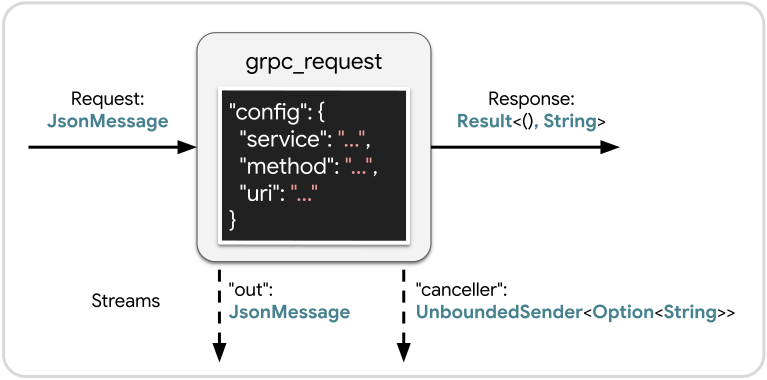
Bidirectional and Client-Streaming Requests
Bidirectional and client-streaming requests are both covered by the "grpc_client" node builder.
Technically this node builder can also support unary and server-streaming requests, but the “grpc_request” node builder is more ergonomic for those.
What makes "grpc_client" different is it takes in an UnboundedReceiver of JsonMessage instead of just a single JsonMessage.
This allows any number of messages to be streamed from the client (inside the workflow) out to the server within a single gRPC client←→server session.
Each UnboundedReceiver sent into this node will active a new independent gRPC client←→server session using the same client.
Every message sent through the UnboundedSender associated with that receiver will be streamed out over the same gRPC client←→server session.
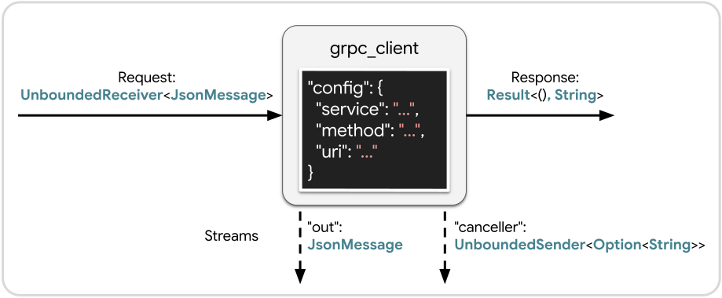
Zenoh
Support for zenoh is implemented using
- The native Rust zenoh library
- prost-reflect for protobuf payloads
- serde_json for JSON payloads
Use the zenoh feature flag of crossflow to enable this support:
# Cargo.toml
[dependencies]
crossflow = { version = "*", features = ["diagram", "zenoh"] }
Enabling zenoh
Use registry.enable_zenoh(_) to register premade node builders that can build zenoh subscribers, publishers, and queriers:
use crossflow::prelude::*;
let mut registry = DiagramElementRegistry::new();
registry.enable_zenoh(Default::default());enable_zenoh(_) takes in a zenoh config which you can feel free to customize.
Descriptor Pool
Just like for gRPC support, you will need to add your proto definitions to the global descriptor pool if you want to use protos as your payloads.
If the needed proto definitions are missing from the descriptor pool, a NodeBuildingError will be produced.
JSON payloads do not require any additional steps.
Configuration
Subscribers, publishers, and queriers each have separate node builders with different configuration types tailored to the specific information needed by each:
The mandatory fields include:
key — the key expression for the connection. Used by all three.
encoder — either "json" or { "protobuf": "_" } to indicate how to encode outgoing messages. Used by publishers and queriers.
decoder — either "json" or { "protobuf": "_" } to indicate how to decode incoming messages. Used by subscriptions and queriers.
Besides the mandatory fields, each config struct provides comprehensive coverage of the quality of service and other settings for each type of zenoh connection. Refer to the zenoh documentation for in-depth descriptions of the qualities of service.
Subscription
Subscriptions, provided by the "zenoh_subscription" node builder, allow your workflow to receive messages from anonymous publishers that publish to a key that’s compatible with the key expression of your subscription.
Once the node gets activated, it will stream out any incoming messages until it gets cancelled or until the scope it’s in finishes.
Request — A simple trigger that just prompts the node to begin listening for messages and streaming them out. If the node is already active, triggering it again will have no effect. If the node was previously active but cancelled, then triggering the node again will restart it.
“out” — Any messages received by the subscription will be sent out of the "out" stream.
“out_error” — If an error happens while decoding an incoming message, the error message will be streamed from "out_error".
The node will continue running as normal even if these errors occur, but each of these messages indicates an incoming message that failed to be decoded.
“canceller” — In case you want to cancel the subscription, you can capture this UnboundedSender, either storing it in a buffer or passing it to a node that can make a decision about when to cancel.
Triggering this will cause the final response of the node to be Ok(msg) where msg is whatever JsonMessage you pass into this sender.
Since subscriptions can last indefinitely, this is the only way to stop the node from running before the scope terminates.
Response — The final response of the node is a Result whose value is Ok if the subscription was cancelled using the "canceller", or Err if a ZenohSubscriptionError occurred.
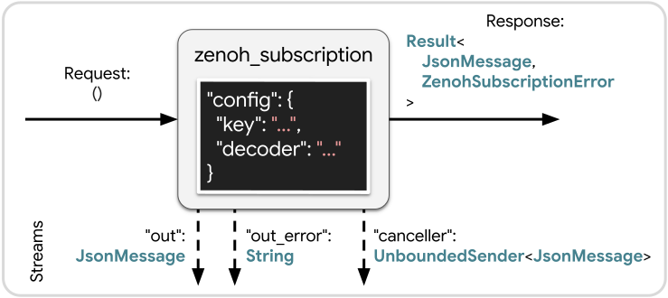
Publisher
Publishers, provided by the "zenoh_publisher" node builder, allow your workflow to send messages to anonymous subscribers whose key expressions are compatible with the "key" that you configure for your node.
The zenoh publisher will be initialized and connect when the workflow is first built, and then every message sent to this node from any workflow session will be sent out over that same publisher. Note that this has some potential side-effects. If you configure the node to support late joiners then the late joiners will receive old messages even if the workflow session that sent those messages is no longer active.
Request — Pass in a JsonMessage to publish.
If your node is configured to use protobuf encoding, the node will return an error message if the input JsonMessage failed to serialize into the intended protobuf message.
Response — A Result which will be Ok if publishing the message was successful, or a ZenohPublisherError if a problem occurred.
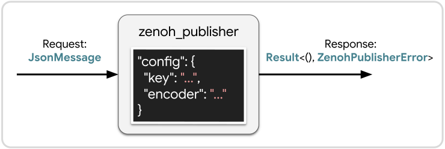
Querier
Queriers, provided by the "zenoh_querier" node builder, allow your workflow to send off a request message to a queryable, which is similar to a service.
The queryable will respond to the request message with some number of responses and then end the connection.
The layout of a querier node is the same as "zenoh_subscription" except
- The Request is a
JsonMessage. If a protobuf encoder was chosen, any failure to serialize the message into the intended protobuf type will have this node respond with anErr. - The response will return
Ok(null)when the query is finished. It will also returnOk(msg)if somemsgis sent to theUnboundedSenderprovided by"canceller". In the event of an error, it will return anErrcontainingZenohQuerierError.
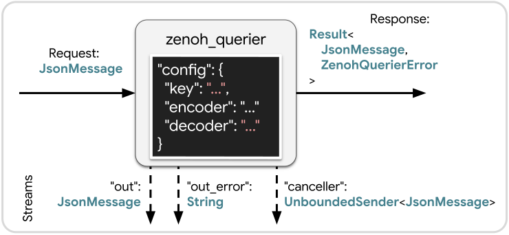
ROS 2
Support for ROS 2 is implemented using rclrs.
We provide generic registration functions that allow you to register node builders for individual messages, services, and actions.
Currently this means message, service, and action definitions need to be registered into the executor at compilation time.
This restriction will be lifted once rclrs supports dynamic messages.
Use the ros2 feature flag of crossflow to enable this support:
# Cargo.toml
[dependencies]
crossflow = { version = "*", features = ["diagram", "ros2"] }
Setup
Caution
The ROS 2 support currently involves some complicated colcon setup and therefore is being kept to the
ros2branch of crossflow for now. We should be able to merge it intomainoncerclrssupports dynamic messages.
Follow the instructions on the README of the ros2 branch to set up a colcon workspace with the necessary dependencies.
Note
This currently uses forks for
rosidl_rustandrosidl_runtime_rsto haveschemarssupport. There will be an effort to move this support upstream to the original repos.
Registering Primitives
To register support for a specific message, service, or action, start by creating the node that will be used by the ROS 2 primitives.
Pass that node along to registry.enable_ros2(node), which will provide an API that you can chain message, service, and action registrations onto.
use crossflow::prelude::*;
use rclrs::*;
use nav_msgs::{
msg::Path,
srv::GetPlan,
action::GetMap,
};
// Create an rclrs executor and node.
let context = Context::default_from_env().unwrap();
let mut executor = context.create_basic_executor();
let node = executor.create_node("crossflow_executor").unwrap();
// Use the node to register the specific message, service, and action types.
let mut registry = DiagramElementRegistry::new();
registry
.enable_ros2(node)
.register_ros2_message::<Path>()
.register_ros2_service::<GetPlan>()
.register_ros2_action::<GetMap>();
// Spin the executor on a separate thread since it needs to run alongside Bevy.
std::thread::spawn(move || {
executor.spin(Default::default());
});Configuration
Subscriptions, publishers, and service clients are configured using PrimitiveOptions in JSON format.
Since action clients have multiple independent QoS to consider, they are configured using ActionClientConfig in JSON format.
In both cases, the topic/service/action name is the only mandatory field. All the QoS settings are optional. Any unset QoS will use the default setting for whatever primitive it’s being applied to.
Subscription
Subscriptions allow your workflow to receive messages from anonymous publishers that publish to the same topic that you’ve subscribed to. Once the node gets activated, it will stream out any incoming messages until it gets cancelled or until the scope it’s in finishes.
Request — A simple trigger that just prompts the node to begin listening for messages and streaming them out. Note that unlike the zenoh subscription it’s possible to activate redundant instances of this node. This issue is being tracked by #158.
“out” — Any messages received by subscription will be sent out of the "out" stream.
The message type will be the rosidl message struct that was registered rather than a JsonMessage.
“canceller” — In case you want to cancel the subscription, you can capture this [UnboundedSender], either storing it in a buffer or passing it to a node that can make a decision about when to cancel.
Triggering this will cause the final response of the node to be Ok(msg) where msg is whatever JsonMessage you pass into this sender.
Since subscriptions can last indefinitely, this is the only way to stop the node from running before the scope terminates.
Response — The final response of the node is a Result whose value is Ok if the subscription was cancelled using the "canceller", or Err if an error occurred.
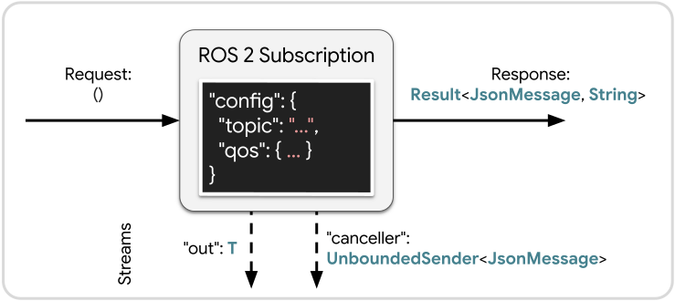
Publisher
Publishers allow your workflow to send messages to anonymous subscribers whose topics match the topic of your publisher.
The ROS 2 publisher will be created when your workflow is created and reused across all sessions of the workflow. Note that this has some potential side-effects. If you configure the node to support late joiners then the late joiners will receive old messages even if the workflow session that sent those messages is no longer active.
Request — Pass in a message of type T to publish, where T is the message type that the node builder is meant for.
Response — A Result which will be Ok if publishing the message was successful, or Err if the message failed to publish.
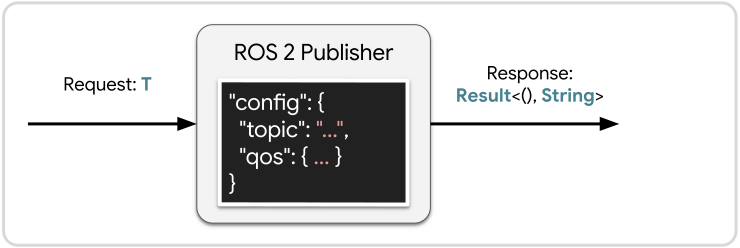
Client
Clients (for services) allow your workflow to send a request to a service and get back a response. Clients and services have a 1-to-1 relationship with each other: For every one request you send, you get exactly one response back (in the absence of errors).
Request — Pass in the Srv::Request type associated with the service Srv that was registered for this node builder.
Response — A Result which will be Ok containing the Srv::Response from the server when the response gets delivered successfully.
If the canceller is triggered before the response arrives, this will be Err containing the cancellation message.
If any other error happens that interferes with the service, this will return an Err(JsonMessage::String(_)) describing the error.
“canceller” — Similar to the "canceller" for subscriptions, this allows the service to be cancelled before the response has finished arriving.
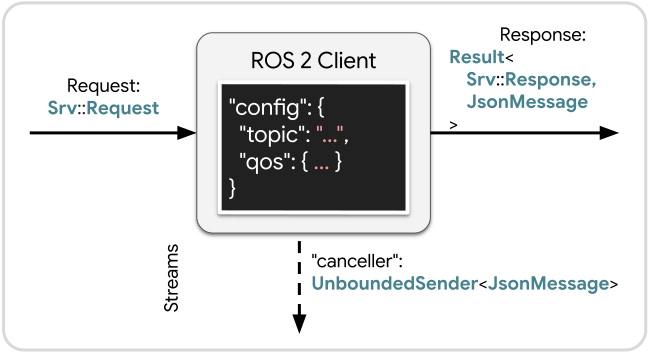
Action Client
ROS 2 actions represent a combination of topics and services that altogether describe an “action” (usually a physical process) which takes place over a period of time and involves incremental updates while it makes progress.
Anyone unfamiliar with ROS 2 actions is encouraged to read through the action tutorial.
Request — Pass in the A::Request type associated with action A that was registered for this node builder.
Response — A Result which will be Ok containing the A::Response and GoalStatusCode from the action server when the response gets delivered successfully.
If an error happens internally that makes the result undeliverable, a string message describing the error will be returned in Err.
“feedback” — Stream of the action’s feedback messages.
“status” — Stream of the action’s goal status updates.
“canceller” — Send a request to cancel the action.
Unlike subscriptions and services, an action server gets notified about a cancellation and can respond to it accordingly.
Therefore triggering this does not immediately cancel the node.
Instead the cancellation request will be sent to the action server, and "cancellation_response" will stream out the response from the action server, along with the JsonMessage of the cancellation request that it’s responding to.
Once the action is successfully cancelled by the action server, the result and status will be sent out of the node’s final response wrapped in Ok.
“cancellation_response” — Stream of the action server’s responses to any cancellation requests sent to "canceller".
The message that was passed into "canceller" will be included in the output.
If the action’s communication is working correctly, there will be one message sent from this stream for every message sent through the "canceller" of an active action.
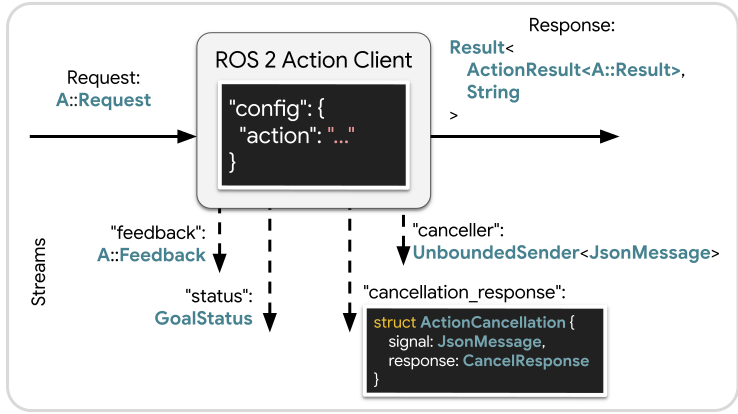
Multi-Agent State Machines
Listeners are excellent at multiplexing messages coming from many sources at once. This makes them well equipped to manage state machines that involve multiple independent agents that need to be orchestrated.
Suppose we have three robots:
- A machining robot that takes raw material and cuts (machines) it into a particular shape.
- A painting robot that takes machined material and applies paint to it.
- A tending robot that moves material around the work zone, passing it all between the other machines and the supply areas.
We also have three supply areas within the work zone:
- The raw material supply is where raw material gets dropped off to be processed.
- The machined material supply is where machined material is kept until the painting robot is available to work on it.
- The finished material supply is where painted (finished) material is placed until it can be taken away.
For the overall flow we want the raw material to be moved to the machining robot,
but only when the machining robot is available. We want machined material
to be moved to the painting robot but only when the painting robot is available,
otherwise it should be moved to the machined material supply. Finally painted
material should be moved to the finished material supply. Each time material
is moved to the machining robot or the painting robot, that robot should begin
working on the material that it received.
We can express that with the following workflow:

We define six buffers in total: one for each of the three robots and one for each of the three material supplies. Each of these buffers can be thought of as representing a variable in the multi-agent state machine. Each time a value changes for one of these variables, a relevant service will be activated to make decisions about what state transitions should take place:
1. send raw material for machining
Connected to the raw_material_supply, the machining_robot_state, and the
tending_robot_state, this service will be activated any time one of these
events happen:
- New material is added to
raw_material_supply - The machining robot becomes available
- The tending robot becomes available
Technically there are other events that can activate the service (e.g. the tending robot begins a new task), but the service will exit early when evaluating irrelevant events.
When any of the above events trigger the service, it will check if all of the following conditions are met:
- Raw material is available in the
raw_material_supply - The machining robot is available
- The tending robot is available
When all conditions are met this service will:
- Claim the tending robot by setting the
tending_robot_statebuffer to Busy - Claim the machining robot by setting the
machining_robot_statebuffer to Busy - Begin this async routine:
- Command the tending robot to pull an item from the raw material supply
- Reduce the count in the
raw_material_supplybuffer - Place the item in the machining robot area
- Release the tending robot by setting
tending_robot_statebuffer to available - Command the machining robot to perform its machining process
- When the machining robot is finished, change the value in
machining_robot_stateto Finished
If any one of the conditions is not met, then the service will not do anything.
2. send machined material to painting area OR into queue for later
Connected to machining_robot_state, machined_material_supply, painted_robot_state,
and tending_robot_state, this service will be activated any time one of these
events happens:
- The machining robot finishes a job
- The tending robot becomes available
- The painting robot becomes available
Technically there are other events that can activate the service (e.g. the machining robot or tending robot begins a new task), but the service will exit early when evaluating irrelevant events.
When any of the above events trigger the service, it will check whether the conditions are met for each of the following scenarios, in order, until it finds a scenario that is satisfied. The first one satisfied will be executed and the rest will be skipped:
🠚 move material from machining robot to painting robot
Conditions:
machining_robot_stateis Finishedpainting_robot_stateis Availabletending_robot_stateis Available
Execution:
- Claim the tending robot by setting
tending_robot_statebuffer to Busy - Claim the painting robot by setting
painted_robot_statebuffer to Busy - Begin this async routine:
- Command the tending robot to pull the material from the machining robot area
- Once the machining robot area is clear, set
machining_robot_stateto Available - Move the material to the painting robot area
- Release the tending robot by setting
tending_robot_statebuffer to available - Command the painting robot to perform its painting process
- When the painting robot is finished, change the value in
painting_robot_stateto Finished
This transition has the benefit of efficiently making the machining robot available and beginning the painting in one fell swoop, skipping the intermediate machined material supply.
🠚 move material from machining robot to the machined_material_supply
If the first scenario was skipped then either the painting robot is busy or the machining robot had no material available. We should prioritize clearing the machining robot so more material can be machined as soon as possible.
Conditions:
machining_robot_stateis Finishedmachined_material_supplyhas capacity for more itemstending_robot_stateis Available
Execution:
- Claim the tending robot by setting
tending_robot_statebuffer to Busy - Begin this async routine:
- Command the tending robot to pull the material from the machining robot area
- Once the machining robot area is clear, set
machining_robot_stateto Available - Move the material to the machined material area
- Increment the
machined_material_supplyvalue by one - Release the tending robot by setting
tending_robot_statebuffer to Available
🠚 move material from machined_material_supply to painting robot
If the first two scenarios were skipped then we cannot clear out the machining
robot at this time. Now we should check if we can move any machined material
from the machined_material_supply to the painting robot.
Conditions:
machined_material_supplyis greater than zeropainting_robot_stateis Availabletending_robot_stateis Available
Execution:
- Claim the tending robot by setting
tending_robot_statebuffer to Busy - Claim the painting robot by setting
painted_robot_statebuffer to Busy - Begin this async routine:
- Command the tending robot to pull material from the
machined_material_supply - Once the material is retrieved, decrement the value in the
machined_material_supplybuffer - Move the material to the painting robot area
- Release the tending robot by setting
tending_robot_statebuffer to available - Command the painting robot to perform its painting process
- When the painting robot is finished, change the value in
painting_robot_stateto Finished
- Command the tending robot to pull material from the
🠚 else
If none of the above scenarios are satisfied, then this service will do nothing.
3. move finished material to pickup area
The final service is responsible for clearing material from the painting robot.
Connected to painting_robot_state, finished_material_supply, and tending_robot_state,
this service will be activated any time one of these events happens:
- The painting robot finishes a job
- Material is taken from the
finished_material_supply - The tending robot becomes available
Technically there are other events that can activate the service (e.g. the tending robot begins a new task), but the service will exit early when evaluating irrelevant events.
When any of the above events triggers the service, it will check if all of the following conditions are met:
finished_material_supplyhas capacity for more itemspainting_robot_stateis Finishedtending_robot_stateis Available
When all conditions are met this service will:
- Claim the tending robot by setting the
tending_robot_statebuffer to Busy - Begin this async routine:
- Command tending robot to pull material from the painting robot area
- Once the painting robot area is clear, set
painting_robot_stateto Available - Move the material to the
finished_material_supply - Increment the
finished_material_supplyvalue by one - Release the tending robot by setting
tending_robot_statebuffer to Available
Conclusion
The above workflow defines a highly parallelized process involving three agents that opportunistically keeps material moving whenever the right agents are available. Underlying this workflow is a state machine that combines the state information of all three agents and three material supply areas. Transitions for this state machine are asynchronous and can overlap with each other without negatively interfering with each other because their activities are orchestrated through their shared use of the buffers.
The logic of each of the state transitions that can be performed are encapsulated by three different services that do not need to know about each other’s existence. Each of these services can be implemented as an async function or by defining a separate lower-level workflow for each of them.
This kind of free-form reactive async system cannot be expressed by most graphical programming paradigms. Behavior Trees generally cannot express this kind of open-ended reactivity, and even most Petri Net implementations cannot express async transitions that gradually modify state variables (“places” in Petri Net terminology) throughout the execution of the transition.